| 祓魔科教官の補習授業 落第少女に咒術指南 (一迅社文庫) | |
| すえばし けん | |
| (2014) | |
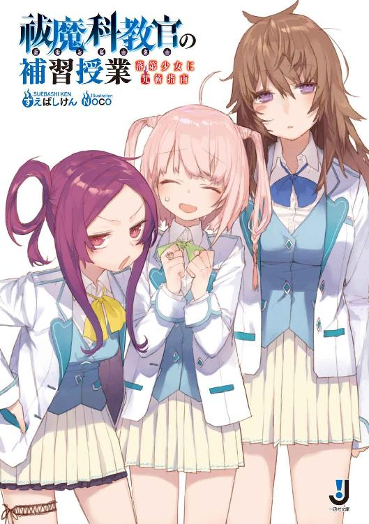
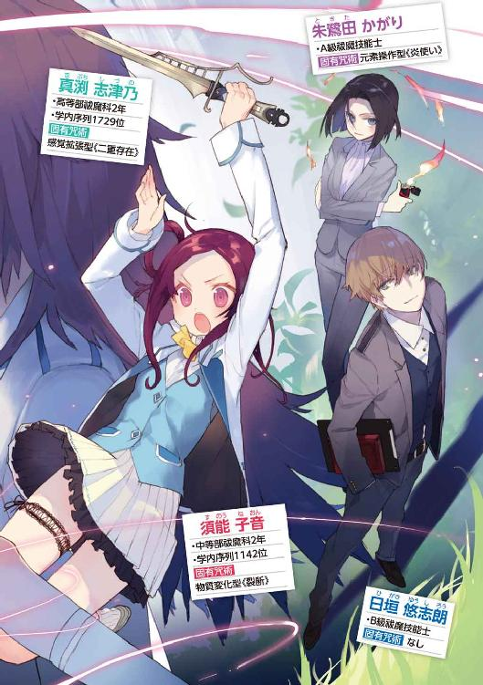
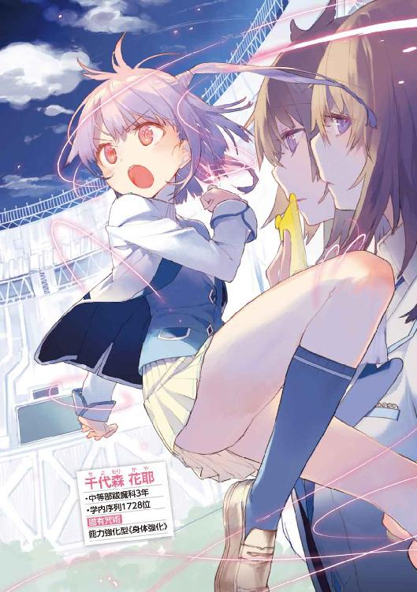
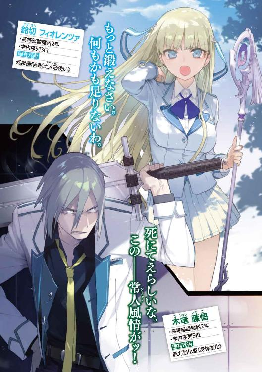
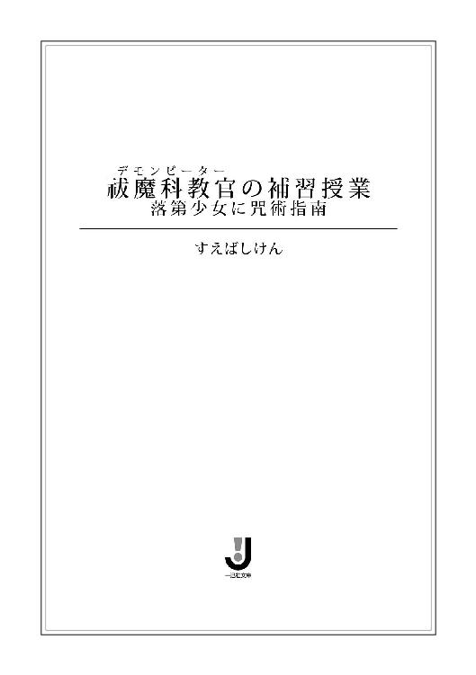
挿画：NOCO
デザイン：ナカムラナナフシ（ムシカゴグラフィクス）
「人気がないのは確認したな？ なら、ここで食い止める。準備急げ！」
黒嶋は大声を上げ、そして部下の一人に視線を向けた。
「対策本部からの連絡は？」
「今ありました。――『避難警報発令の必要は認めず。ここで確実に排除しろ』と」
「――またか！」
歯を剥いて唸る上官に、部下たちは身をすくませる。
「ったく、現場を知らん上層のアホどもが！」
市民に余計な不安を与えるのは確かに控えるべきだろう。『問題なく排除できました』という事後報告だけで済めば、それに越したことはない。
しかし全ては現場での処理が上手くいけばの話である。逃がせばアレは無防備な市街地に突入し、人間を喰い散らかす。実行部隊にかかる重圧は半端ではない。今回のように余裕のないイレギュラーケースでは特に、だ。
「姿が見えたら斉射。足が止まったら、咒術で止めだ。――構え！」
天原市特別災害事案対策隊第三班、黒嶋以下六名が迎撃態勢を取る中、地響きを伴った足音が徐々に大きくなる。
やがて――角を曲がって標的が姿を現す。
「......うえ」
部下のうめきが聞こえた。
魔禍魂――それはまさに『醜悪な肉塊』という表現が似つかわしい生命体だった。
一つ一つのパーツは人間のものに似ている。しかし、その配置も数もでたらめ極まりない。死者のようにあおぐろい体を三本の足と一本の手で支え、前部と上部に付いた目がせわしなく動いている。背中には二本の太い触手。
でかいな、と黒嶋は胸のうちで呟いた。
体長四メートル、体高二メートルというところだろうか。黒嶋の豊富な経験の中でもそうそう経験のない大物だ。ここ天原市の警備担当官として赴任してからでは、おそらく最大クラスだろう。
班長の自分を含めた四名が常人、二人が咒禁師である。通常の魔禍魂ならこれで十分に対処できる構成だが――
「撃て！」
号令とともに機関銃が火を噴く。一瞬怯んだように足を止めた肉塊だったが、すぐにその巨大な眼球がこちらを睨めつける。
黒嶋は勘の命ずるままに声を上げた。
「斉射継続！ 平行して咒術行使！ 全力でだ！」
命令に応じ、咒禁師たちの咒杖が鈍い光を放つ。
まず、不可視の空気弾が直撃、次いで音速に迫る速度で撃ち出された拳大の石が魔禍魂の体を貫通する。
しかし――巨体は倒れなかった。
「......再生特性持ちか」
舌打ちが漏れた。
傷が凄まじい勢いで修復されている。ここまでの回復力を持つ個体は、黒嶋の記憶にもなかった。
「退くな！ 退いたら街に入り込まれるぞ！」
怯みかけた部下を叱咤しつつ、自分も引き金を引く。弾丸と咒術の嵐を浴びせられ、さすがに魔禍魂の膝が折れた。
「ここで殺し切れ！ 弾は使い切って構わん！」
銃弾は密度を増し咒術がさらなる勢いで襲い掛かる。
やがて......静寂が訪れた。
「......やったか？」
そう呟いたとき......硝煙にけぶる視界の向こうで巨体がもぞりと動いた。
魔禍魂は生きていた。さすがに即反撃ということはなかったが、傷口が見る見るうちに再生していく。
「ば、化物......」
部下が声を漏らした。
「アホ、今さら何言ってやがる！ 俺らの相手は、最初っからそういう化物だろうが！」
とはいえ、状況は極めて悪い。
これは小さな魔禍魂数体を駆除して帰還する途中に生じた、偶発的事態なのである。
装備にも体力にも余裕がない。咒禁師たちももう集中が続かないだろう。
新たな魔禍魂の出現は報告し、応援要請もしたが、おそらく間に合わない。
魔禍魂は間もなく再生を終えて襲ってくるだろう。そもそもこいつは、完全に準備を整えても殺れるかどうか怪しいレベルの相手だ。
（......くそ、このあたりに奈落はないはずだったんだがな）
魔禍魂はこの世界の生物ではない。未だ全容は明らかになっていないが、異界から転移してくると考えられている。
その門となっている空間の亀裂を『奈落』と呼び、その周囲は重点的に警戒されている。しかし、ごく稀にではあるものの、魔禍魂が予想もしない地点に現れることがある。
原因は主に二つ。付近に新たな奈落が発生したか、あるいは奈落から出てきた魔禍魂が監視の目を逃れて移動したか。
それを調べるのも対策隊の仕事のうちなのだが――どうやら今回は果たせなさそうだ。
ゆっくりと魔禍魂が立ち上がった。
ここまでか、と黒嶋は覚悟を決める。魔禍魂の駆除は常に死と隣り合わせだ。命を落とした知己は何人もいる。自分に順番が回ってきただけの話。
「......本部を通している時間はねえな。街に行って、大声で避難を呼びかけろ。こっちはなんとかしてできるだけ時間を稼ぐ」
黒嶋は一番若い部下にそう告げた。
「しかし――」
「反問も反論も認めねえ。行け」
部下はためらい、しかし、駆け出そうとする。と、そのとき――
「――――ッ!?」
黒嶋も部下たちも、揃って目を見開いた。
爆炎とともに、魔禍魂の巨体が吹き飛んだのだ。
「お取り込み中、失礼します。手をお貸ししましょうか？」
女の声が背後から聞こえた。
振り向くとライターを掲げたスーツ姿の若い女性、そして、彼女よりは幾分年下――十代の後半だろうか――に見える少年が立っていた。
「あなたが黒嶋Ｂ級祓魔技能士ですか？」
「そ、そうだが......」
黒嶋は眉を寄せる。ライターの形をしているが、淡く発光している。あれは咒禁師の証――咒杖だ。そして、この常識を外れた威力の炎。
「あんた、〝炎帝〟――」
「はい」
女性は穏やかに微笑んだ。
「応援要請がありまして、たまたま近くに居た私たちが駆けつけたわけです」
「ここは僕たちに任せて下さい。あなたたちは退避を」
助手らしき少年が、落ち着いた声で後を引き取る。
「すまん。――おい、行くぞ」
傷を修復させながらゆっくりと起き上がる魔禍魂を尻目に、部下たちに撤退の指示を出した。同時に黒嶋自身も身を翻す。
「は、班長、いいんですか？ 彼女たちはいったい――」
「俺らが残ってても足手まといにしかならんうえに、巻き添えを食う。あの女、朱鷺田かがりだ。名前くらいは知ってるだろう」
部下の目が見開かれる。
「朱鷺田というと、あの......」
「そう、最高レベルの祓魔技能士、人の皮を被った怪物――神和の一人だよ」
今から三、四〇年ほど前――二一世紀の初頭。
突然世界の各地に化物が現れ、人間を襲い始めた。
人々はそれを魔禍魂と呼び、大いに恐れた。
しかし程なく、その脅威に対抗する力を持った人間が誕生し始める。
人類は彼ら――咒禁師を中心に魔禍魂に対抗する体制を整え、反攻に転じた。
天原市内の一等地にそびえ立つ、高級マンション。
日垣悠志朗は、その一室の前に立っていた。
「かがり姉さーん、起きてますかー？」
チャイムを鳴らしても扉をノックしても、返事はない。まあいつものことだ。
一つため息をつき、入りますよーと声を掛けてから、カードキーで鍵を開ける。
奥からテレビの音が聞こえてきた。居ることは居るのだろう。
廊下、そしてダイニング、キッチン、いずれの部屋にも空瓶、空缶が転がっていた。ほとんどがアルコール飲料――つまり酒類の入っていたものだ。
「先週掃除に来たところなのになあ......」
まったく、どうやれば一週間でここまで散らかし直せるのだろうか。
悠志朗はぼやきながら奥のリビングに足を進めた。
点けっぱなしのテレビ、酒瓶が林立するテーブル、そして――ソファーの上に、毛布にくるまった物体があった。
「姉さん」
「............」
「かーがーり姉さーん」
『ええ、はい』
返事をしたのはテレビの中の人物だった。ちょうどお昼のニュース番組を流しているようだ。
『魔禍魂の出現数はほぼ横ばい。一方、祓魔技能士の数はどんどん増えていますから、相対的に危険は減少していると申し上げてよいでしょう』
スーツ姿の女性は凛とした表情でインタビューに応じている。
『無論、私もその末席に名を連ねる身として、市民の皆さんを、全力を尽くしてお守りするつもりです』
『ありがとうございました。――朱鷺田かがり祓魔技能士にお話を伺いました』
「姉さん、テレビの中のあなたが、何か立派なこと言ってますよ」
「......ん、うー？」
声とともに毛布の中からすぽんと顔が出てきた。
「ああ、ゆう君、おはよー」
ふやぁとあくびをするかがり。毛布の端から素肌の肩が覗いている。
「おはようございます。もう昼ですけど。――また酔っ払って脱ぎましたね」
「んー？ あ、ほんとだ。酔うと暑くなるのよねえ、なんでだろ、あれ」
「血管が拡張するからですね。そんな姿見たら、ファンが幻滅しますよ？」
「見せないからだいじょぶよぉ。私が全てを見せるのは、ゆう君だ・け。......あ、なんなら下も見る？ うふふふふふ」
「別に見たくないです。むしろ見せないでほしいです。――何か作りますから、起きて服着てくださいね」
「助手が冷たい。反抗期だわ」
しくしくと泣き声が聞こえてきた。
「嘘泣きが可愛いのは十代までですよ」
「............あう、今のは割と本気でぐっさり刺さった」
彼女はそのそと起き上がり、眼鏡をかける。
テレビの中とは似ても似つかないが、正真正銘、朱鷺田かがりその人である。トップクラスの祓魔技能士として男女を問わず人気がある彼女だが、私生活はこの通りだ。
「あー、今、ゆう君出てたよー」
「そりゃ、現場にいましたからね」
テレビ画面に視線を向けると、見覚えのある風景が映し出されていた。先日、二人が急遽応援に入って再生特性持ちの魔禍魂を退治した一件を報道しているらしい。
確かあのときは――ちまちまと攻撃を当てていては埒が明かなかったので、結局跡形もなく消し飛ばすことにしたのだった。凹面状に大きく陥没した道路はその名残である。
「しかしまあ、上手くいったときは思いっ切り持ち上げてくれますよねえ」
「政府がそういう方針だもの」
首尾よく処理できたケースはこうして大々的に報じられるが、しくじるとごくごく小さな扱いか、あるいはまったくニュースにならない。祓魔技能士の守秘義務についても法律で定められており、場合によっては一切口外を禁じられることもある。
日本という国は魔禍魂の出現率が飛び抜けて高いため、他国から排除協力の申し出を受けることが多い。しかし、当然それに甘えるわけにはいかない。貸しを作るのみならず、『弱い国』『安定しない国』とみなされれば、政治、経済に甚大な影響が生じるからだ。
よって『魔禍魂程度では揺るがない国家である』という対外的なポーズは欠かせない――そうだ。
メリットもデメリットもあるのだろうが――身近なところで言えば、一般市民に魔禍魂に対する危機感がいまひとつ足りないのは結構大きな問題であると感じる。
公的な対策隊は警察の管轄下にあり、そこに悠志朗やかがりのようなフリーの祓魔技能士が協力するという形で事に当たるケースが多い。
「ただ祓魔技能士も人間ですから、力及ばないこと、手が回らない場合もあるんです。そのことを知っていてもらうだけでもかなり違うと思うんですけどね」
「ま、私は失敗したことないけどねー」
かがりは悠志朗の目を気にせず、下着を身に着けている。なるべくそちらは意識しないようにしつつ、テレビに視線を向けた。かがりのこれまでの活躍がダイジェストで紹介されていた。
祓魔技能士の中でも、神和の称号を与えられた者の能力は常軌を逸している。表に出ない者も多いが、かがりはメディアの取材も厭わない。少なくとも彼女の知名度と実績が全祓魔技能士の中でトップクラスなのは疑いないだろう。
「......これでプライベートも、もう少ししっかりしてくれたらいいんだけどね」
ゴミを片付けながら悠志朗は呟いた。
かがりは悠志朗の保護者であり、雇い主でもある。一方、私生活面では悠志朗が保護者の役割を務める。ほうっておくと、彼女はゴミ山の中で窒息死しかねないからだ。
調理と食事のスペースを確保すると悠志朗は簡単な昼食を用意し、リビングからかがりを引っ張ってきた。
「どうぞ」
「ゆう君大好き。愛してる」
卓に着いたかがりは嬉しそうな笑みを浮かべた。
祓魔技能士は過酷な肉体労働職でもある。さほど手はかけていないが、カロリー計算と栄養バランスは万全だ。
「......かがりさんも、そろそろ料理覚えません？」
「んー、やろうと思えばできるんだよ？」
「初耳ですね。例えば？」
「スルメを火で炙ったり、鮭とばを火で炙ったり」
「酒のあてばっかりですね。ってか、他にバリエーションは？ 炙るだけですか？」
「炙らずに食べることもあるよ」
悠志朗はため息をついた。
「恋人か、恋人候補の男の人はいないんですか？ 家に招く相手でもいれば、も少しみっともないところを改める気にもなるでしょうに」
「仕事が恋人だよー。だから仕事中はしゃきっとしてるわけ」
だめだ、これは。
悠志朗はお説教を諦めて、本題に入ることにした。
「で、先日お願いした件なんですけど......考えてもらえましたか？」
「先日というと......あ、このチーズおいしい。ワイン出してきていい？」
「ダメです。話が終わってからにしてください。――僕の仕事を減らしたいって話ですよ」
「あー......うん」
かがりは渋い顔でサラダのトマトにフォークを突き刺した。
「まあ、このあたりの祓魔技能士もだいぶ組織化されてはきたし、魔禍魂退治なら、当面私一人でもなんとかなるっちゃなるけど......どういう心境の変化？ 待遇に不満だった？」
「そういうわけじゃないです。かがりさんには感謝してますよ」
まあ、欠点は多々あるとしても。
「以前から考えてたんです。一度、学生生活を送ってみたいって」
「学生生活？」
かがりは目を瞬かせた。
「僕、本来なら高校三年生です。同世代の人間の中で学ぶって経験ができるのも、残り少ないんですよ。両親も、それを望んでいたと思いますし」
悠志朗の父親は古武術の道場を開いていた。六歳上のかがりはその弟子に当たり、幼いころからの知り合いなのである。悠志朗が家族を亡くして天涯孤独となった後、面倒を見てくれたのは彼女だった。祓魔技能士の道に進むと決めたときも、援助してくれた。
そして以降はアシスタントとしてかがりとともに魔禍魂と戦っていたため、悠志朗には学校に通ったという経験がほとんどない。合間合間に通信学習プログラムを受けているので、学力自体は同年齢の少年少女たちと遜色ないはずではあるが――
「ただ、このところ、この殺伐とした仕事は自分には向いてないのかもなあって感じることがあるんです。僕はかがりさんみたいな咒禁師じゃないですし」
「でも、ゆう君だって......」
「ああ、うん、もちろんそれなりに努力はしましたし、かがりさんの助手を務めてきたという自負もありますよ。これからも手伝えるときは手伝いますし。――でも、本当に将来の選択肢はこれでいいのかなって、一度真剣に考えてみたいんです」
「んー、まあ、師匠が生きてたら、確かにそう勧めるだろうね。視野を広く持てって、私もよく言われたからなあ。――学費はあるの？」
「ええ。少しずつ貯めてましたし」
「やっぱり、意志は固いのね」
かがりは机に突っ伏して、拗ねたようにため息をついた。
「おねーさん、なんだか寂しいなあ」
「......すみません」
「いーよ、もう。成長を見守るのも保護者の務めだしね。――ただ、一つ条件を出していいかな？ ゆう君のことだからもう編入候補の学校とかリストアップしてると思うんだけど、学校は私に決めさせて欲しい。近くに一つ、あるでしょ？」
「まさか――」
悠志朗は眉を寄せた。
「ダメですよ。僕は入学資格を満たしていません」
「私の権力で押し込めるよ」
かがりはにっこりと笑う。
「だから天原学園にしなさい。あそこに通うなら、ゆう君の希望を認めてあげる」
＊ ＊ ＊
人気のない校舎裏。
「私、ダメな子ですよねえ、タンタンさん......」
千代森花耶は、はあああああ、と深いため息をついた。
「ダメダメダメのダメ、ホントにダメすぎるよねえ、私。いつになったら上達するんですかね。どう思いますかー？ タンタンさん」
返事はない。相手は足元のタンポポであるから、当然と言えば当然だ。
草花に名前をつけて話し相手にする。我ながらイタい子だなー、と思わなくもないが、気軽に相談できる友人など存在しないので仕方ない。吐き出さないと劣等感に心が押し潰されそうになるのだ。
「実は、近く劣等生の大整理があるらしいんだよ。私、退学候補に入ってるよね、絶対」
花耶は暗い声で続ける。
「入学以来、ずーっとミス続きで咒術もろくに使えず、怒られっぱなしで、退学勧められるところまで追い詰められてもまだ上手くできないなんて、本当に才能ないよね。いっそのこと、もう、諦めちゃった方がいいのかな。時間の無駄だし、他の人にも迷惑だもんね。午後の訓練、行きたくないなあ。サボっちゃっていいかな、タンタンさん？ ......うんまあ、そんな度胸もないのは、自分でもわかってるんですけどねー」
あはははと力のない笑いが漏れた。と、そのとき――
「――――っ！」
花耶は弾かれたように振り返った。砂利を踏む小さな音が聞こえたのだ。
「あ――や、やあ」
一人の少年が立っていた。
花耶よりはいくらか年上、おそらく高校生くらいか。ただし制服を着ていないところを見ると、この天原学園の高等部生ではなさそう。
背は低くないが、飛び抜けて高いというほどでもない。さほど目立たない顔立ち。今は少し困ったような微笑を浮かべている。
どこか空虚な――というか、浮世離れしたような雰囲気があった。
「怪しい者じゃないよ。今日付けで編入してきたんだけど、ちょっと道がわからなくて。正面玄関どこかな？ 正門を抜けてまっすぐ行けばあるって聞いたんだけど......」
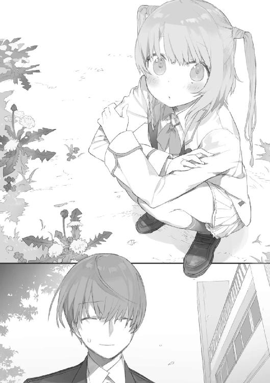
「あ、こ、こっち裏門なんですよ。トラックとか通れるよう大きくなってるから、よく間違われるんです。正面玄関はこの校舎をぐるっと右手に回れば見えてくると思います。ちょっと遠いですけど」
「そっか、うん、どうも、ありがとう」
彼がなんとなくいたたまれないような表情をしている理由は理解できる。
道を尋ねようと近寄った相手がタンポポに人生相談している最中だったら、自分だって同じような顔になるだろう。
「あ、あの......」
少し迷った後、花耶は口を開いた。
「......どのあたりから聞いてました？」
「あ？ あー、えっと『ダメな子ですよねえ、タンタンさん』のあたり」
「............」
「その、気にすることないと、思うよ？ えーっと、タンポポに『タンタンさん』ってネーミングするセンスは、なかなか可愛らしくていいんじゃないかな、と」
「......し、失礼しますっ！」
半泣きになりながら、花耶はその場から駆け去った。
＊ ＊ ＊
「......あの子の記章、祓魔科の中等部だね」
悠志朗は遠ざかる少女の背中を眺めながら、悪いことしたなあ、と呟いた。不可抗力なのだが、あまり見られたくない姿ではあっただろう。
「あ、転んだ」
おまけに運動神経のよい方ではなさそうだった。大丈夫だろうか。
天原学園は極めて特殊な教育施設だが、馴染めないもの、カリキュラムについていけないものが出るという点では、普通の学校と変わりない。
彼女の今後に幸あれと願いつつ、悠志朗は歩き出した。
天原市は巨大な浮遊式人工島をいくつも連結させた、その上に存在している。
魔禍魂そのもの、あるいはそれらへの対抗手段開発の拠点として建設された、学術研究都市だ。
天原学園は中高一貫制の私立学校である。祓魔技能士の養成を担う祓魔科、そして魔禍魂の生態や咒術の研究者を育成する解析科の二つのコースが存在している。
祓魔技能士資格はＤを最低としたランクの他に、甲乙二種の区分がある。甲種が咒禁師、乙種が常人だ。
咒禁師とは咒術と呼ばれる超常的な力を操る人間のことである。素質を持つ者は数百人に一人の割合で存在し、それぞれ固有の力――固有咒術を一種類持っている。
一方、特殊な力を持たない一般人を常人と呼ぶ。これは咒力計測器の波形が反応せず平らのままであることに由来する。
天原学園の祓魔科が特異なのは咒禁師、つまり甲種祓魔技能士の育成を専門にしている国内唯一の機関という点である。当然入学できるのも咒禁師のみ。解析科の方に特殊資格は必要ないが、そのレベルは極めて高い。下手な大学や研究所を凌ぐだろう。
同種の育成機関はいくつか存在するが、その中で天原学園が最高峰と目されている所以だった。祓魔技能士にしても研究者にしても、一流といわれている者の多くはここの出身なのである。
国内に一〇人といないと言われる神和の称号を得たかがりも卒業生の一人。現在は理事として学園の中枢に名を連ねている。
いかに実戦経験が豊富だとはいえ、咒術の使えない悠志朗が本来通えるはずのない学校なのだが――
（まあ、コネ入学ってことになるのかなあ）
『近くて引っ越す必要もないし、訓練に参加してれば勘も鈍らないし』というかがりの言い分に押し切られたわけだ。
研究棟や訓練場が複数あるので、学園の敷地には結構な面積が取られている。少女に教えられた通りにのんびり歩いていくと、正面玄関が見えてきた。
ちょうど昼休みなのだろう。弁当を広げたり、お喋りに興じたり、生徒たちが思い思いに過ごしている。
と、そのとき――校舎の壁際にたむろしてる男子生徒の一団が妙な雰囲気であることに気付いた。中心にいる、というか取り囲まれているのは一人の痩せた眼鏡の少年だ。長身の少年が彼の胸倉を掴んで何やら言い募っている。喧嘩だろうか。
止めるべきかな、と考えてるうちに、長身は痩せた方を突き放した。
「......後悔すんじゃねえぞ、てめえ」
捨て台詞を吐き、そして取り巻きを連れて去っていく。
残された少年は馬鹿にしたように鼻を鳴らすと、乱れた衣服を整えた。解析科の二年生のようだ。
目が合った。
「――何か用ですか？」
「いや、大丈夫かなと......」
割り込むタイミングを逃した間抜けさを覚えながら、悠志朗は答える。
「お気遣いなく。脳筋バカに絡まれてただけですよ。――当校のへお客様ですか？」
「うん、まあ。事務室ってどこにあるかな？」
「玄関を入って左手ですよ。わからなかったら近くに案内板がありますから」
素っ気なく言うと、彼は歩いていった。
まともに学校に通うのは小学校以来だが、どこにでもそこ特有の空気があるものだ。特に荒れているわけでもないと思うが、自分は上手く溶け込めるだろうか。
そんな不安を覚えつつ、校舎の中に入る。事務室はすぐに見つかった。
「すみません、本日から編入する日垣といいます。手続きをお願いしたいんですけど」
窓口から声を掛ける。
「編入生、ですか？」
中年の女性事務員は不審そうに眉をひそめた。
「そんな予定あったかしら？ こちらには連絡が来ていませんが......」
「え、そんなはずは――」
「本日からですよね？ 調べ直してみますから、少しお待ちくださいね」
学園側の承認は得られたと、かがりからは聞いていたのだが――うっかり何か重要な書類を提出し忘れたりしたのだろうか。
（あの人ならやらかしそうだしなあ。二日酔い状態のときは特に）
と、そのとき、端末を確認していた事務員が声を上げた。
「あら......これかしら？ お名前、日垣さん、でしたよね？」
「日垣悠志朗です。ありましたか？」
「ええ、本日からいらっしゃると。推薦の理事の方と、学園長と、人事担当者の電子印が押されてますから間違いないと思います。ただ――」
事務員は釈然としない顔で、モニターと悠志朗の顔を見比べた。
「どうかしましたか？」
「これによれば――あなた、生徒ではありませんよ？」
「..................はい？」
悠志朗はきょとんとした顔で、目を瞬かせた。
＊ ＊ ＊
「こ、降参です！」
声を上げると、相手は花耶を解放し呆れたように言った。
「諦めの早いこと」
「すみません......」
「あなた、中等部三年の千代森さんだったわね？ もっと鍛えなさい。何もかも足りないわ。模擬戦闘訓練とはいえ、ここまで差があっては意味がない」
「はい、鈴切先輩......」
花耶はうなだれた。
天原学園に在籍する祓魔技能士候補は、中等部高等部合わせて一七〇〇人超。それが三〇ほどのグループに分かれ、日々様々な訓練に励んでいる。
今、花耶の所属するグループがいるのは大きな屋内訓練場。対人相手の近接戦闘訓練が行われていた。
相手を務めているのは、鈴切フィオレンツァ。欧州の錬金術師の血を引くハーフで、高等部祓魔科二年生に在籍している。学園内でも指折りの実力者で、花耶にとっては雲の上の存在だ。
（もう、次元が違うよね......）
憧れ半分、諦め半分で花耶はそんなことを考える。
年上で、身長差も頭一つ以上ある。歯が立たないのも仕方ない。
「あなたも祓魔技能士を目指しているなら、小柄な体を自分への言い訳にしないようにね。魔禍魂は体格差なんて考慮してはくれないのだから」
「......はい」
見透かされたようだった。
一般教科の授業は普通の中学、高校と同じく各学年ごとに行われるが、訓練は中等部高等部合同である。グループ分けの際、年齢は斟酌されない。
魔禍魂への対処というのはフェアなルールの下で行われる競技ではなく、生命の危険を伴う戦闘だ。当然、訓練のカリキュラムも実際的な発想に基づいて組まれている。
「咒術は使わないの？」
フィオが尋ねた。
訓練中の咒術使用が認められるかどうかは、訓練の内容や個人の練度によってケースバイケースである。花耶は個別に許可を受けていた。
「えっと、使おうとはしているんですけど、発動がまだ、うまく......」
自分の専用咒杖である指輪にそっと指を這わせながら、目を伏せる。
花耶の固有咒術は能力強化型の《身体強化》とされている。自身に対して行使し、筋力、運動能力を向上させるというものだ。珍しくはないが、汎用性が高く使い勝手のいい能力である。
特に今やっているような近接戦闘では無類の効果を発揮する――はずなのだが、花耶の咒術は極めて不安定で、使いこなせているとは言いがたい段階にあった。
一方、フィオは元素操作型で、土を操る。中遠距離からの攻撃や足場の確保には有用な能力だが、格闘、近接戦闘のアドバンテージにはなりにくい。しかし、彼女はあえてこの種の訓練にも積極的に参加し、咒術なしでもほとんどの者を圧倒するだけの技量を身につけていた。
まだＤ級ではあるがすでにプロの祓魔技能士資格を取得しており、高等部二年生ながら学内序列三位に認定されている。在学中にＣ級は間違いなく、卒業して本格的に魔禍魂退治に専念すれば、すぐにでもその上へと駆け上がるだろうと噂される逸材だった。
「あなた、自分の入学以来の個人戦成績、覚えてる？ かなり負けが先行してたわね？」
唐突にフィオが問いかけた。
「え、えっと確か勝ちが八で、負けが一一〇ちょっと、です......」
花耶は消え入りそうな声で答えた。
祓魔科では週に数回、公式の個人戦が行われる。他にもチーム戦やミッションクリア型の試験があり、その成績が記録されることになっていた。そして総合的なポイントが学内序列としてランキング化されるという仕組みだ。
通常《身体強化》の使い手にとって個人戦は稼ぎどころなのだが、これは花耶に当て嵌まらない。さらに、咒術が不安定であることは広く知られており、今やチームを組んでくれる生徒もない状況である。学内序列は、当然最底辺。
「そろそろ別の道を考えた方がいいんじゃないかしら。このまま祓魔技能士を目指しても、誰のためにもならないわ」
「はい......」
フィオの声に蔑むような響きはまったく含まれていなかった。純然たる忠告なのだろう。だからこそ、こたえた。
実際、その通りだとは思う。自分で決断するまでもなく、このままでは学園から放り出されるだろう。辞めたくはないし、努力だってしているつもりだ。しかし、生まれ持った素質の壁はあまりにも高く、分厚かった。
「交代だ！」
監督教官である沢樹の声が響く。
訓練は一定時間毎に相手を変える。武道で言うところの乱取りや自由組み手と同じ形式だ。時間的におそらく次の一人で今日は終わりだろう。
気力を奮い起こして顔を上げ――そして花耶は表情を凍りつかせた。
「よろしくなあ、千代森」
背の高い高等部生がにいっと笑った。
学内序列五位、木竜藤悟。フィオと同じく学園のトップクラスに属する咒禁師。固有咒術は《身体強化》。もちろん花耶のような不完全なものではない。
実力よりもむしろその粗暴で苛烈な性格で知られており――そして悪いことに、花耶は彼から目の敵にされていた。
「――あいたっ！」
あっさりと床に転がされ、後ろ手に肘を極められる。
「い、痛......やめ、やめてくださ、折れ――」
「おら、どした？ そんなんで魔禍魂と戦えんのか？ てめえ、ほんと劣等生だよなあ」
「こ、降参しますっ！」
「ああ？ 何寝ぼけてんだよ、バーカ。魔禍魂が降参つったら許してくれるのか？ 甘いこと言ってねえで実戦を想定しろ、実戦をよぉ」
木竜はせせら笑いつつ、声を落とす。
「さっさと咒術使って振りほどけよ。本気で折んぞ」
「――――っ！」
死に物狂いで暴れるが、木竜の腕はまったく緩まない。
好きこのんで痛い思いをしたいわけではない。《身体強化》の発動は先ほどからずっと試みている。しかし、まったくうまくいかないのだ。
みしりと関節が軋んだ。目の端に涙がにじむ。
と、その瞬間――
「だめだよ、怪我させちゃ」
「――あ？」
不意に背中が軽くなる。なぜか、木竜が床に転がっていた。
「あくまで訓練なんだから、ほどほどにしないとね」
引き剥がしたのは、高等部生くらいに見える少年だった。
木竜は立ち上がって、彼を睨み付けた。
「......なんだてめえぇ。余計な真似すんなよ」
謎の少年も小柄ではないが、木竜はさらに背が高い。上から見下ろす形になる。
（あ――）
そこで花耶はその顔に見覚えがあることに気付いた。先刻、裏門で玄関への道を尋ねてきた人だ。
「俺はな、常に実戦を意識して厳しくやる主義なんだよ。――つーか、見ねえ面だな。編入生か？」
「あー、うん。まあ......新入りではあるね」
少年は少し困ったように笑った。
「なら、ここの序列上位の顔くらいは覚えておいたらどうだ？ 俺はな、五位の――」
そのとき突然、木竜の身体が――高く宙に舞った。
少年が投げ飛ばした......のだろうか？ 花耶には彼の動きがまったく見えなかった。
「――――っ！ このっ！」
木竜もさすがの反応を見せた。空中で見事に体勢を立て直す。
が、着地の瞬間、少年が足を払った。
さすがに今度は対応できなかったようだ。ぐあ、と声を上げ、木竜は無様に背中から落ちた。息もできない様子でうめき声を上げている。
「て、めえ......」
「ああ、ごめん。不意打ち気味だったよね」
少年は申し訳なさそうに頭を掻きつつ、言った。
「でも、魔禍魂は君の口上を黙って聞いていてはくれない。常に実戦を意識してるんだっけ？ なら、このくらいは凌げないとダメなんじゃないかな？」
「............っ！」
木竜の顔が真っ赤になる。
嫌味も皮肉も感じさせない、実直そうな表情で少年は続けた。
「それに実戦というなら、そもそも魔禍魂は大きさも形も人間とは違うしさ。こういう訓練は一戦一戦の勝敗よりも、回数をこなして体力の配分を覚えたり対応力をつけたりするのが重要なんだから、しっかり形式を守らないと効率が落ちるんだ。だからまあ、もう少し穏やかにやろうよ」
「言いてえことは――それだけかっ!?」
木竜は跳ね起きる。彼の手に両刃の大剣が現れた。
成り行きを見守っていた生徒たちから、どよめきが起きる。
（咒杖――）
花耶は顔から血の気が引くのを感じた。
咒禁師は皆、咒術を行使するのに不可欠となる触媒――咒杖と呼ばれる道具を持っている。それぞれ術者専用に調整された回路が組み込まれており、持ち主の意志で自由に隠形化、実体化が可能。
その形は様々。文字通り杖の形のものもあるし、花耶のは指輪の形である。
重要なのは持ち主にとって力が十全に発揮できる形状であることだ。取り回しが利く、扱いやすいという物理的な理由の他に、そのものに愛着を持っている、思い入れがあるといった精神的要素も強く影響を与える。
全てが自身の感覚にぴったりと適合していなければ、咒禁師は咒術を最大限に行使できない。『咒杖は咒禁師の半身』とも言われる所以である。
木竜は近接戦訓練において、咒術の使用を許可されていなかったはず。学園内でトップクラスの《身体強化》能力者である彼が力を使用すれば、怪我人が出かねないからだ。
大剣――咒杖を取り出したというのは、つまり彼がそんなことは無視して全力で戦うつもりであるということを意味していた。
「やめなさい、木竜藤悟！」
フィオが大声で言った。が――
「うるせえっ！」
木竜は怒鳴り返し、少年の方に血走った目を向けた。
「本気でやり合おうぜ。お前も出せよ、咒杖」
それはほとんど殺し合いをしようと言うに等しい。
花耶は肘の痛みも忘れて、おろおろと両者の顔を見比べた。
しかし、少年はのんびりと答えた。
「あ、僕はいいや」
「......はあ？ なめてんのか？」
「いいや、そうじゃなくて」
苦笑を浮かべる少年。
「僕、咒禁師じゃなくただの常人だから。咒杖は持ってないし、当然咒術も使えない」
「ああ......じゃあ何か？ てめえはか弱い常人の分際で咒禁師に喧嘩売ったってのか？」
木竜の顔が怒りに歪んだ。咒禁師は多かれ少なかれ、その力に自信と誇りを持っている。彼の中では、常人に逆らわれるなどあってはならないことだったのだろう。
「別に僕は喧嘩を売ったつもりは――」
「貴様ら、何をやっているっ！」
監督教官の沢樹がヒステリックな声を上げつつ、駆けつけてきた。ようやく騒ぎに気付いたようだ。
「......また貴様か、木竜」
苦々しい顔で言い、もう一人の当事者の方に視線を動かす。
「それで、お前は......？」
「日垣と申します。かがり姉さ――じゃなくて、えっと、朱鷺田祓魔技能士からお話が行ってるかと思うんですが......」
「ああ、朱鷺田君の言ってたのは君か」
沢樹は面倒そうにため息をついた。
「おい、邪魔すんな沢樹ぃ！ そいつとやらせろよ。ただの訓練だからよぉ！」
木竜が粘着質な視線を少年に向けながら言った。
「そうもいかん。こいつは教官だ」
「はあ？」
声を上げる木竜。
花耶も戸惑いを覚える。教官？ この、そう年の変わらなさそうな人が？
「日垣悠志朗、乙種Ｂ級祓魔技能士。一応祓魔科の教官ということになってます。けど年齢的には高校三年生、ほぼ同世代なんで、みんな、よろしく」
少年は生徒たちを見渡しにこやかに言ったが、訓練場には微妙な空気が広がっていた。
＊ ＊ ＊
（んー、やっぱ、溶け込むのに失敗してるよなあ......）
学園にやってきて二日目、昼休みの食堂。悠志朗は暗い気分でカレーを口に運んだ。
出だしから妙な壁ができてしまった。丸一日が経過した今も、生徒たちから遠巻きに観察されているような状態である。
いや、そもそも、教える側と教わる側には立場の違いがあって当然なのだ。
学生ではなく教官としてここに送り込まれていた時点で、自分の目的――平穏な学生生活を送ること――は破綻していたのだろう。
事務室で教官登録されていたことが判明した際、当然ながらかがりに対して断固とした抗議を行った。
「妙に協力的だと思ったら......やってくれましたね」
『あ、もうばれた？』
電話の向こうのかがりは呑気な声で言った。
『騙したわけじゃないよ、うん。学校に通ってもいいとは言ったけど、生徒として、なんてことは一言も言ってないわけだしー』
「そういう詭弁を弄するなら、今後一切ご飯作りませんから」
『あ、嘘、ごめん。反省してる。――ただその、私としても、できるだけゆう君の希望をかなえてあげたいと考慮した結果でありまして......』
「言い訳はいいです。で、どういう意図なんですか？」
『えっとね、頼みたいことがあるの。ゆう君にしか頼めないことで、しかも人助けになるというか――』
悠志朗はスプーンを持つ手を止め、ため息をつく。
結局、引き受けてしまった。どうも、自分はかがりに甘すぎるような気がするが......
「まあ、恩も義理もあるしなあ」
こちらに配慮したというかがりの言葉も、嘘ではなかった。登録こそ教官だが、祓魔科の訓練、一般教科含めたあらゆる授業に出席する権利を認められていたのだ。頼まれた『仕事』さえきっちりこなせば、学生のように過ごすことも可能というわけである。
（とはいえ......やっぱ、第一印象がまずかったなあ。みんな引いてたしなあ）
かがりとの電話を終え教職員たちに挨拶を済ませた際、ちょうど祓魔科の訓練時間中であることを聞いたのだ。ならば、と見学に向かったのだが――そこで明らかにやりすぎている生徒を目にした。
「別に乱入する予定はなかったんだけどな。でも、ほうっておくわけにもいかないし」
もう一度ため息をつく。と、そのとき――
「ここ、いいですか？」
日替わり定食をトレイに載せた男子生徒が傍らに立っていた。そして返事も聞かず、悠志朗の向かいに腰を下ろす。
戸惑う悠志朗に構わず、眼鏡をかけた少年は口を開いた。
「俺は円能寺要、高等部解析科二年。咒杖の研究、調整が専門。よろしく」
細身の身体と怜悧に整った顔。生意気そうな口調。
どこかで見た顔だと悠志朗は考え、そしてすぐに思い出した。
「ああ、昨日、玄関前で会ったね。僕は――」
「存じ上げてますよ、新任の日垣教官。あの朱鷺田かがりの推薦で学園にやってきて――しかも常人でありながら、木竜藤悟を叩きのめしたそうで」
要は視線を右に向けた。悠志朗もそれに倣う。
木竜が中央付近の席で取り巻きに囲まれつつ、豪快に飯を掻き込んでいる。どことなく不機嫌そうに見えるのは、昨日の一件がまだ尾を引いているのだろうか。
――と、目が合った。視線には、明らかに自分に対する殺意が込められている。
「あー、別に叩きのめしたわけじゃないんだけどね。彼、有名人なの？」
「ちょっとした権力者ではありますね。高等部二年、学園序列五位の暴君。俺もちょっかい出されて迷惑してたので、あなたには感謝してるんです。これで、少しおとなしくなってくれることを期待したいですけど」
「暴君とはおだやかじゃないね」
悠志朗が感想を漏らすと、要は小さく肩をすくめた。
「学園内には独自のパワーバランスがあるんです」
咒術というのはこの数十年で登場した新しい力だ。当然、上の世代でその技術を教えられる教官も数少ない。かがりをはじめ、咒禁師にして現役の祓魔技能士が教官として鍛えに来ることはあるものの、常駐しているわけではないという。
「学園から放校されたりすれば将来を閉ざされるわけですから、皆それなりに従ってはいますが......常勤の教官はほとんどが常人で、さほど権力を持っていませんね。訓練を見ていた沢樹教官も警官上がりで、格闘術の基本を教えるだけの常人です」
「ああ......」
悠志朗は神経質そうな中年の教官の顔を思い出した。あの後、いらぬ騒ぎを起こしたと散々嫌味を言われたのだ。
「そんなわけで、祓魔科の、特に優秀な生徒の力は強いんですよ。トップクラスの高等部三年はすでに学園を離れて現場で活動していますから、現在の中心は二年生。その二大派閥の一つが学内序列三位の女帝、鈴切フィオレンツァのグループ」
要はひとかたまりとなって昼食を取っている集団を視線で示した。
中でも中心にいる一人は、ひときわ華やかな雰囲気をまとっている。彼女が件の女帝さんなのだろう。悠志朗の目から見ても、リーダーとしての風格が感じられる。
「で、もう一つが――」
「木竜藤悟君のグループってことだね」
要は肯いた。
「優秀な祓魔技能士は優秀な手下を求める。手下にとってもトップクラスの咒禁師の周囲に入り込めれば、将来的にメリットが大きい。祓魔科の咒禁師、解析科の常人を問わずね。そんなわけで派閥ができる」
「円能寺君はそれに反発したわけだ」
要は小さく鼻を鳴らした。
「木竜の誘いを蹴ったから逆恨みを買っただけですよ。俺、極めて優秀な咒杖エンジニアなんですけど、偉そうな奴が嫌いなんで」
「なるほど」
君も結構偉そうだね、とは口に出さずにおいた。
まあ、事情は大体把握できた。木竜にとって悠志朗は、面子を潰し権威に傷をつけた敵であるわけだ。で、他の生徒から妙に敬遠されてるのは、関わって木竜に目をつけられるのを恐れているのだろう。
「迷惑な話だなあ......。そもそも僕、止めに入っただけだし」
「でも、勝ったんでしょう？ 見てた人間が皆そう言ってますけど」
「まあ、彼が咒術使う前に仲裁されたし......不意をついたのと、ちょっと武術の心得があるから、たまたまうまくいっただけだよ。まともに力比べしたら、常人の僕が能力強化型の咒禁師に勝てるはずがない」
「だからこそ敗北したままなのは屈辱なんでしょう」
こと魔禍魂退治の分野において、特殊能力の有無は歴然とした戦闘能力の差になって現れる。咒禁師である甲種祓魔技能士が、常人である乙種祓魔技能士に優越感を抱いていることも多い。悠志朗にも、現場で見下すような視線を向けられた経験があった。
そのプライドが意欲や結果に繋がるなら、別に悪いことでもないと思うのだが――
「私怨を向けられるのは、ちょっとなあ......」
「木竜には木竜の意見があるでしょうけどね。――ほら、後ろ」
悠志朗が振り向くと、木竜がゆっくりとこちらに歩み寄ってくるところだった。
「よお、新米教官」
敵意剥き出しの表情で木竜は笑った。
「......訓練中ならうっかり殺しても、罪には問われねえよなあ？ それとも、実戦を想定した不意打ちの方がお好みか？」
「いや、だから僕は――」
「絶対ぶっ殺してやる。覚えとけ。――円能寺、てめえもだ」
笑みを消して一睨みすると、木竜は去っていった。
「ほら、望もうが望むまいが、もう勢力図の変動に影響する因子なんですよ、あなたは」
どこか楽しそうに要は言った。
悠志朗はげんなりする。勘弁してくれ。
本来、平穏な生活を送るためにここへ来たのだ。成り行きで教官役をする羽目になったが、それは断じて木竜の権威を失墜させたり、彼に恨まれたりするためではない。
「で、君はどういう立場なのかな？ 僕を煽りたいだけ？」
「そもそもこういうバカバカしい勢力争いが嫌いで、平穏に研究を進めたいんですよ、俺は。だからあなたが奴をぐうの音も出ないくらいにへこましてくれるのを期待してます。必要なら、多少は手を貸しても構いませんよ」
「――機会があればお願いするよ」
悠志朗は今日何度目かのため息をつきながら、そう答えた。
授業に参加しようとしても妙な空気になるだけなのはわかっていたので、午後は結局祓魔科の訓練を見学するに留めておいた。
放課後になると悠志朗は教官室に向かった。木竜のことはさて置き、まずはかがりに頼まれた仕事を進めなければならない。
「失礼します。――ああ、沢樹さん、昨日お願いしていた件ですけど......」
「空き教室を一つ用意した。好きに使うといい」
沢樹は愛想のない口調で言い、そして不快そうに唇を歪めた。
「君が補習を行うという話は聞いている。学園の決定なら私がどうこういう権利はないが――本当に必要なのかね？ そんな試みが」
「朱鷺田さんはそう考えているようですよ。『落伍者を集め、退学にならないよう補習を行って欲しい』――僕は彼女からそう頼まれています」
「不出来なものは排除した方が誰にとっても都合が良いはずだ。ここは義務教育の場所ではない。落伍者を選別するのも仕事のうちだ」
「まあ、そうなんですけどね」
穏やかに悠志朗は応じる。
沢樹の言うことも真実の一面ではある。技量の足りない者を魔禍魂退治の現場に放り込むわけにはいかない。実際、挫折して他の中学校、高校に移り、ごくまっとうな人生を選択しなおす学生はこの学園にも存在する。
「ただ、排除する必要がないほどの成長を見せればそちらの方が望ましいですから、できるだけのことはやってみようという話です。もちろん、沢樹さんを始めとした常勤の皆さんに時間を割いてもらうわけにもいきませんから、僕が落第生たちの面倒を見る、と」
「......少々疑問を覚えただけで、別に反対しているわけではない。好きにしろ。依頼のあった該当生徒のデータは君の端末に送っておいた」
「ありがとうございます」
礼を言って悠志朗は教官室を退出した。
歩きながら携帯端末を取り出して、資料を確認。
かがりから受け持ちを頼まれた生徒は三人。中等部二年、中等部三年、高等部二年。いずれも祓魔科の女子だ。
「......まずは本人たちに会わないとな」
とりあえず、教官の立場で呼び出しのメールを送ろうとし――手を止めた。
目の前に立って、自分を見上げている小柄な女生徒の姿に気付いたのだ。
「あ、あ、あの――」
緊張した様子で彼女は口を開いた。
「姿を見かけたので......昨日はどうもありがとうございました」
木竜にいたぶられてた子だ。
「あ、そういえば......校舎裏でも会ったよね。こちらこそ、ありがとう。道を教えてもらえて助かった」
「い、いえ」
顔を赤くしてうつむく。
悠志朗は手元の端末に目を落とし、目の前の少女と見比べた。
「しかし、偶然だなあ。うん、ほんとに好都合」
「......はい？」
「ねえ、君、今時間あるかな」
「え、はい、帰るだけでしたから......」
悠志朗は戸惑う彼女に笑いかけた。
「じゃ、ちょっと付き合ってくれるかな？ 千代森花耶さん」
＊ ＊ ＊
（......えっと、ど、どういうことかな）
なぜか自己紹介もしてないのに名前を知られていたうえ、言葉を挟む隙もないまま空き教室の一つに連れ込まれ、花耶は大いに混乱していた。
一五年足らずの人生で、異性と二人きりになった経験などほとんどない。いや、相手は先生なのだが、年が近いせいで妙に意識してしまう。
「そこにかけて」
悠志朗は椅子を勧め、自分も折りたたみ椅子を持ってきて正面に腰を下ろした。
「さて、千代森さん」
穏やかな笑顔のまま、じっと見つめられる。緊張する。
「僕はね、君のことをもっと知りたいと思うんだ」
「は――ひゃいっ？」
声が裏返った。
「あ、あの、日垣先生？」
「うん？」
「そ、そそ、それは、その、どういう意味でしょうか？」
「ああ、説明を先にしておくべきだったね」
悠志朗は爽やかに続けた。
「実は特定の成績不良者を対象に、補習を行うことになって。僕が補助教官という立場で君たちを担当することになった」
「――そう、なのですか」
一気にテンションが下がった。悠志朗が気遣わしげな表情になる。
「大丈夫？」
「大丈夫です。不出来なのはわかってますし、ちょっと自分の空回りが恥ずかしくて死にたくなっただけですから、なんでもないです」
「そ、そう？」
「でも、あの――先生だったんですね。私、高等部への編入生だと思ってたので、びっくりしました」
「僕もだよ、まったく......」
「はい？」
「いや、こちらの話。――補習は朱鷺田かがりさんの発案だ。君を選んだのもそう。彼女のことは知ってるよね」
「え？ ええ、もちろんですけど――」
日本に一〇人といないといわれる神和、第三席〝炎帝〟。
祓魔技能士のランク最上級はＡ級だ。神和というのは例外的に設定されている、特殊な称号である。Ａ級でどれだけ実績を積んでも神和に認定されることはない。
その条件はただ一点、人間の範疇を逸脱した力を有しているかどうか。
表に出る者も、裏で活動する顔の知られていない者もいるが、いずれもまるで神をその身に宿しているかのような常識外れの力を振るうため、神和と呼ばれている。
朱鷺田かがりは表社会で活躍する神和である。名前はもちろん、この学園の理事であり、ときどき訓練にも顔を出すことは花耶も知っている。
もっとも言葉を交わした記憶はない。彼女の指導を受けられるのはフィオや木竜のようなトップクラスだけであり、自分などは話しかける資格もないと思っていたからだ。
「あの、私、退学になるんでしょうか」
「なんでそう思うの？」
「その......近々、ダメな生徒をクビにするんじゃないかって、噂があって。先生は、朱鷺田さんの部下なんですよね？ だったら朱鷺田さんが選別したダメ生徒を辞めさせるために送り込まれたのかなって」
「ああ、なるほど」
悠志朗は苦笑を浮かべた。
「まあ、半分くらい正解かな」
「や、やっぱり、私、退学......」
「ではなくて。成績下位を切り捨てて学園の質を高く保とうという意見は、常にあるってだけの話。実際、定期的に行われてもいるし。ただし、かがり姉――朱鷺田さんが君たちを選んだ意図は逆だよ。頑張り次第で挽回できる機会を与えようってこと」
「そう、なんですか？」
「まあ、どこかで線引きはしなきゃいけないんだけど、落伍者は少なければ少ないほどいいわけだし。――安心したかな？」
「少しだけ......。でも、成績が上がらないと、やっぱり退学なんですよね？」
「可能性は残るね。君の努力次第だ」
「う......」
やはりそこは変わらないのか。
「そ、それで、あの、補習って具体的にどんなことを？」
「うん、みんなが揃ってからそのあたりを話し合おうと思ってたんだけど......」
悠志朗は端末に目をやった。
「メッセージは送ったんだけど、まだ反応ないね。――とりあえず、君との個人面談から始めようか。色々聞かせて欲しい」
「えっと、そう言われても......何から話せばいいんでしょうか？」
「んー、じゃプロフィールの確認から。――千代森花耶、一四歳。天原学園中等部祓魔科三年生。咒力反応、陽性。固有咒術は能力強化型《身体強化》」
自分のデータが読み上げられるのを聞くのは、妙な気分だった。
「現在の学内序列、祓魔科一七二九人中、一七二八位。個人戦通算成績、八勝一一三敗」
「あう......」
「訓練は皆勤。志望も高等部祓魔科への進学、と。ふむ、意欲はあるんだね」
「............」
花耶はうつむく。消えたくなった。
「で、マイナス思考癖がある、と」
少しからかうような声で悠志朗は言った。
「......そんなことまで書いてあるんですか？」
「いや、これは僕の考察。外れた？」
「い、いえ......当たってるかと」
「露骨に表情が暗くなったからね。さっき、僕の言葉を『意欲〝だけ〟はあるんだね』というニュアンスで捉えて、落ち込んだでしょ？」
その通りだった。
「僕は褒めたつもりだよ？ 技術や知識は教えられるけど、やる気を教えるのは難しいんだ。だから、君はいい生徒になれる」
悠志朗は笑顔で言う。つられて花耶も小さく笑った。肯定的に評してもらえたのは、ずいぶんと久しぶりな気がする。
「ただ、結果が出ていないのも確かだね。自分の問題点はどこにあると思う？」
「えっと......固有咒術の発動が不確実なところだと思います。うまくいくこともあるんですけど......そういうときは、自分の体がよく動いて、相手の動きもしっかり見えて勝つことができてます」
本当に稀なことではあるが。
「発動に失敗する原因に心当たりは？」
「よく、わからないです。上がり症で緊張しやすいので、そのあたりが影響しているのかもしれません......」
「メンタル面だね。精神の状態が咒術に干渉するのは珍しくない。ならそのあたりを改善していこうか。僕は常人だけど、メンタルコントロールなら教えられる」
「は、はい」
いつの間にか、ずいぶんと気が楽になっていた。
「じゃ、これからよろしくね、千代森さん」
「こ、こちらこそ......ふ、ふつつかものですが、よろしくお願いしましゅっ！」
噛んだ。死にたくなった。
――ただ、こんな自分を気に掛けてくれる人がいるというのは、悪い気分ではない。
話が一段落すると、悠志朗はまた端末に目を落とした。
「......さて、残りの二人はまだ現れる様子がない、と。んー、無視されるというのは想定外だったな」
「あの......残りの二人って、どんな人なんですか？」
「ん、高等部が一人と中等部が一人。――ああ、千代森さん、この須能って子知ってる？ 君と同じ中等部で、二年生なんだけど」
「あ、はい、訓練のグループが一緒です。顔を知ってるくらいで、ほとんど喋ったことはないですけど。......まだ、教室の方に居るかもしれませんね」
「うん、なら出向いてみようか。悪いけど中等部の校舎、案内してくれる？」
＊ ＊ ＊
二人は並んで中等部校舎に向かった。
（ひとまずは問題児という感じじゃなくてよかったな）
悠志朗は隣を歩く花耶にちらりと視線を向ける。少し人見知りで消極的な印象はあるが、真面目ないい子っぽい。
「参考までに訊くけど、須能さんって、どんな子？ 千代森さんの知ってる範囲で」
「えっと、中等部では有名人です。運動も勉強もできて――特に固有咒術の扱いに関しては天才だと」
資料によれば、彼女の固有咒術は物質変化型。学内序列は一一四二位。
「でも序列で見ると真ん中より下、だね」
「ええ、授業態度がちょっと不真面目らしくて」
「というと？」
「えっと、個人戦での、私の数少ない白星の一つがその子なんですけど......開始の合図と同時に降参してしまって。――そもそも祓魔技能士関連の訓練には、あんまり出てこないんです」
なるほど。花耶と逆で、実力はあるけどやる気のないタイプか。確かに資料を見ても訓練の出席率が異様に悪い。落第候補になるはずだ。
中等部の校舎に入る。ここでも悠志朗は生徒たちから物珍しげな視線を浴びることになった。高等部生より幼い分、好奇心剥き出しで遠慮がない。
居心地の悪い思いをしながら花耶に案内されて、二年生の教室に到着。中を覗き込む。六、七人の女生徒が居残ってお喋りをしていた。
「あ、ちょっとごめん、須能さんっているかな？」
声を掛けると少女たちはぴたりと口を閉ざし、一斉にこちらを見た。
悠志朗がややたじろいでいると、はぁいと鈴を転がすような声とともに、一人の少女が小さく手を挙げた。
「子音に何か御用ですかー？」
一緒にいる女生徒たちのなかでも、飛び抜けて華やかな顔立ちをしている。花耶より一つ年下のはずだが、彼女より少し背が高く大人びた印象があった。
須能子音、中等部祓魔科二年生。
「ああ、僕は、えっと新任教官の日垣という。高等部校舎まで来て欲しいって連絡を送ったはずなんだけど......」
「あ、ごめんなさーい。そろそろ向かおうかと思ってたの。ということは、あなたが、死神先生なんですねー？」
「......死神？」
なんだそれは。
「え、えっと、噂です。不出来な生徒は浚われて処分されてしまう的な怪談が昔からあって、それに、その、日垣先生が目立つ登場の仕方をしたものだから、それを実行する『死神先生』に違いないって......」
隣でぼそぼそと花耶が解説してくれた。
「昨日の訓練では、逆らった高等部の先輩を殺しちゃったんでしょう？ こわーい」
「やってきてわずか二日でお化け扱い......。というか、尾ひれ付きすぎだよ。僕は死神じゃないし、もちろん殺してもいない。君は訓練に出てなかったの？」
「このところ、ちょーっと体調が悪かったものですからー」
子音は血色のいい顔で言った。
「病気には見えないけど」
「女の子の日でーす」
反応に窮した悠志朗を見、子音はくすくすと笑った。
「冗談です。慌てすぎですよー、先生。――あ、まさか、女の子とお付き合いしたことないの？ 童貞？」
「......想像に任せる」
ダメだ。この子は思い切り苦手なタイプ、まさに魔禍魂より理解不能な怪物だ。
――とはいえ、ここで逃げ出すわけにもいかない。
「とりあえず、正当な理由もなく訓練を休むのは感心しないな」
「だって、殴り合い、掴み合いって野蛮なんだものー。子音にがてー」
しれっとした顔で子音は言い切った。
「そのことについて話がある。今日はもういいから、明日の放課後は必ず指定された教室に来ること」
「ふーん......」
子音はひょいと悠志朗の背後を覗き込んだ。隠れるようにしていた花耶が身を縮める。
「そこにいるのは、三年の千代森センパイね。――ってことはー、子音もセンパイみたいな不出来な生徒として、死神先生に浚われちゃうわけー？」
距離を詰め、子音は下から悠志朗を見上げた。
「......ん、でもよく見ると、結構かっこいいかなー？ 浚われちゃってもいいかもー」
耳をそばだてていた女の子たちが、きゃーっとわざとらしい悲鳴を上げ、爆笑する。
やりにくい。非常にやりにくい。
悠志朗は一つため息をつくと、子音だけに聞こえるよう声を落とした。
「――欠席が多いのは確かだけど、一方で落第や退学にならないよううまく調節して点数稼いでるよね。ただ、今回問題視されてるのは、君のそういう姿勢そのものだ。このままだと君が望まない結果になるかもしれない」
「............」
少女の眉がかすかに動いた。どうやら無視できないところを突いたらしい。
「――あー、わかった。わかりました。子音、明日はお誘いに応じますー」
幾分投げやりな口調で、子音は約束した。
悠志朗はぐったりとした疲労を覚えつつ、中等部校舎を後にした。
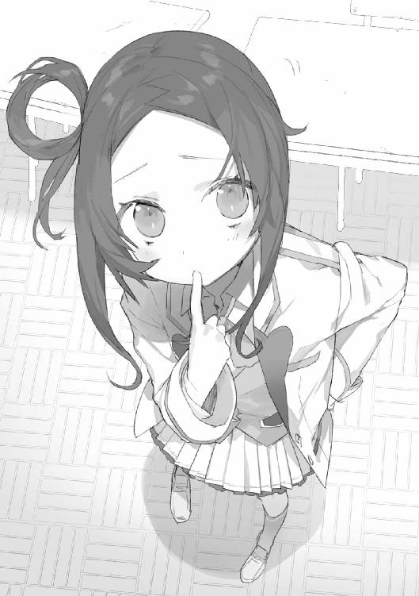
「さて、あと一人は高等部なんだけど......時間が遅いから、もう帰っちゃってるかな。寮の方に行ってみようと思う」
そのとき、花耶がどこか身の置き所のなさそうな顔をしていることに気付いた。
「――須能さんの言ってたこと、気にしてる？」
子音の口ぶりからして、花耶の成績の悪さは有名なのだろう。年下の子にその事実を突きつけられるのは、愉快ではないはずだ。
「い、いえ、気を遣わないでください。ダメ子なのは事実ですし、自覚してますし」
花耶は笑ったが、その表情を作るのには少々の努力を要したように見えた。
「あ、女子寮はこっちです」
花耶も寮暮らしであるらしい。天原学園は全寮制ではないが、祓魔科の生徒は希望すれば優先的に入寮できるのだそうだ。
「高等部寮と中等部寮があります。市内のアパートやマンションに住んでる子もいますけど、寮の方が安いし近いし、便利ですから。ただ、退学することになったら、寮も出ないといけないんですね。そうならないようにがんばらないと......」
「君には何か、どうしてもやめたくない理由がある？」
「――え？」
「僕は君の補習のためここに居るわけだけど――向いてないから進路変更って選択自体は、恥でも責められるべきことでもないと思ってる。でも君は、やめたくないんだよね？」
「......他に行き場がありませんから」
花耶は少し寂しげな微笑を浮かべた。
「祓魔技能士を目指していれば、高額な奨学金が出ます。プロになれれば、お金も稼げます。上手くいけば、施設の方に送金できるかもしれません。――あ、私、身寄りがないので養護施設育ちなんですよ」
彼女は三歳のとき『事故』で両親を失い、祖父母に引き取られている。その後、祖父母も相次いで亡くなり、八歳から施設に預けられたというのは資料で読んだ。
ただ表情を見ていると、もう少し深い事情がある気もする。今はまだ、踏み込むべきではないのだろうけど。
「なるほどね。じゃ、一緒に頑張ろうか」
そう言うと、花耶は少し驚いたように悠志朗を見た。
「どうかした？」
「いえ......あっさり納得されたので。もっと安全な道があるとか、無駄だからさっさと見切りつけろとか言われるものだと。他の先生も、みんなそうでしたし......」
「でも、君は諦めたくないんだろ？」
「はい......」
「その意志を否定するような真似は、あんまりしたくないんだよ。それに、君に諦められたら僕は失職してしまうしね」
悠志朗は肩をすくめた。花耶は困惑した様子でこちらを見たが、目が合うと慌てたように顔を伏せた。
程なく目的地が見えてきた。瀟洒なマンションといった趣の建物だが、これが天原学園高等部女子寮である。
悠志朗は端末で最後の一人の資料を確認した。
高等部祓魔科二年、真渕志津乃。固有咒術、感覚拡張型。学内序列一七二九人中、一七二九位、つまり最下位である。
成績の悪さは出席率の低さに由来する。ほとんど訓練にも顔を出していないようだ。にもかかわらずこれまで在籍を許されていたのは、持っている能力がかなり希少なタイプだかららしいのだが――
寮の玄関を入ったところで、一人の女生徒と顔を合わせた。
記憶にある。要に教えてもらった、二年生ながら序列三位の優等生。
「あ......鈴切先輩」
鈴切フィオレンツァはわずかに目を細めて、二人に視線を向けた。
花耶が少し怯えた様子で、悠志朗の陰に隠れる。どうやら彼女を苦手にしているようだ。
「千代森さんと日垣先生――でしたか。寮に何か御用ですか？」
「えっと、二年の真渕志津乃さんって寮生だよね？」
「志津乃？ ええ、私のルームメイトです」
「今、居るかな？ 少し話があるんだけど」
「居ることは居ます、が......」
フィオは複雑な表情を作って言葉を濁した。
何か問題が？ と問おうとしたとき、彼女はわずかに眉を上げて続けた。
「ちょうど来ましたわ。あの子です」
背の高い少女が、ゴミ袋を抱えて階段を下りてきた。
髪はぼさぼさ、よれよれのジャージ姿だったが、確かに写真で確認した顔に間違いない。
「志津乃、掃除は終わったのね。――お客様よ」
フィオの声に反応し、気だるげな視線がこちらを向いた。
「ああ、真渕志津乃さんだよね？」
悠志朗は声を掛けた。
「僕は新任教官の日垣。実は君の成績と補習のことでちょっと相談が......」
どさり、と袋が落ちる。
同時に志津乃の姿が煙のように揺れて、ふいと掻き消えた。
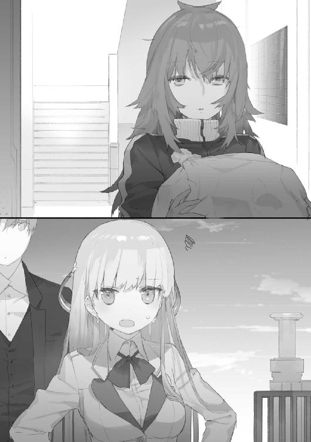
「え、ええ？ ゆ、ゆゆ、幽霊......？」
花耶が声を震わせた。
「そんなはずないでしょう。祓魔科の人間がこの程度でいちいち驚かないの。――すみません、あの子、筋金入りの人嫌いなので」
「彼女の固有咒術なんだね。確か、感覚拡張型の......《二重存在》か」
感覚拡張型というのは、視覚、聴覚などの及ぶ範囲を広げる咒術である。戦闘能力には直結しないが、チーム戦における索敵や補助に有用な系統の力だ。
《二重存在》というのはその中でも極め付けに珍しい能力で、五感を備えた完全な自分の分身を作り出すというものである。
「怠けるのに利用することばかり覚えてしまって」
フィオはため息をついた。
「いわゆる『引きこもり』というやつですわね。うるさく言って、どうにか部屋の掃除だけはやらせているのですけど」
「......消えたってことは、こっちの話を聞く気は毛頭ないってことだよねえ」
悠志朗はうーんと唸った。前途は多難そうだ。
「へえ......見事な設備ですね。これが『ソロモン』ですか」
思わず感嘆の声が漏れた。
天原学園内の中央モニタールームである。複数の大画面ディスプレイに様々な情報が表示されている。
「必要があれば個人端末から各情報を確認したり操作したりもできるがね。基本的にはここから見た方がわかりやすかろう」
沢樹が面白くもなさそうな顔でそう言った。
学園には、人工的に山や森、市街を再現した広大な野外訓練場が存在する。ここはその場内を一括で管理、監視するための部屋だ。
定点カメラ、個人のアイカメラ、プレイヤーの位置や咒術の使用状況等が一目で把握可能となっており、戦況が手に取るようにわかる。
この訓練フィールド全体を統括しているプログラムが『ソロモンシステム』。
咒禁師にとってはまさに国内随一の訓練環境と言えるだろう。
今日はここでチーム戦の訓練が行われる。悠志朗はそれを見学しに来たのだった。
レギュレーションは攻防戦。
攻撃チームと防御チームに分かれ、防御側の陣地に立てたフラッグを取り合うのだ。
基本的に攻撃側一〇人、防御側七人。人数的に有利な代わり、制限時間五分以内に相手を殲滅するかフラッグを奪取できなければ攻撃側の負けとなる。一戦終わるごとにソロモンの指示で人はどんどん入れ替わり、間断なく戦闘は続けられる。
生徒たちは通信機をつけており、同チーム内に限り交信が可能となっている。リーダー役の指示の適切さも、勝敗を分けるポイントになりそうだ。
悠志朗自身はずっとかがりと二人で活動してきたので、多人数での戦闘経験はそれほどない。なかなか興味深かった。
「咒術の使用は許可されてるんですよね。安全性は？」
「ソロモンが各自の咒杖を監視し、適切なリミッターを設定する。攻撃系咒術の威力は、危険のないレベルまで落ちるはずだ」
各自のコンディションは常時モニターされており、『実戦ならば重傷相当』のダメージを受けたとソロモンが判定すれば、戦闘不能で脱落扱いとなる――とのこと。
よくできているな、と悠志朗は感心した。
『どぉっけおらああああぁぁぁっ！』
スピーカーからひときわ大きな怒鳴り声が聞こえた。木竜藤悟だ。
このターン、彼は攻撃チームに所属している。大剣型の咒杖を振り回しながら、先頭を切って防御側の陣地に襲い掛かっていた。
無謀な突進――というわけではない。圧倒的な攻撃力に裏打ちされた戦術だ。防御側が二人がかりで迎え撃とうとしたが、一瞬で蹴散らされた。
（うん、無意味に態度がでかいだけじゃないなあ、彼）
このレベルでは確かに頭抜けている。
と、木竜の進撃が止まった。大きな土人形が彼の行く手を阻んだのだ。
強度はさほどでもないらしく、大剣の一撃で粉砕される。が、次から次へと地面から湧き出してくる新手に、前進を阻まれている。
『木竜君は引き受けるわ』
長杖型の咒杖をかざした鈴切フィオレンツァが、防御チームの仲間に指示を送っていた。
『二人一組で、彼以外を止めて。防衛線が綻びそうなら土人形を送るから、教えなさい』
木竜を無力化された攻撃チームは攻め手を欠き、時間切れとなる。
『防御チームの勝利と認めます』
ソロモンが告げた。ちなみに声は幼い女性のものである。ソロモンというのは男性名のはずだが――こういうのは制作者の趣味なのだろうか。
モニターには今の一戦で獲得したポイントが表示された。フィオが最上位だ。
「固有咒術《土人形使い》でしたか。彼女は大したもんですね。学生レベルじゃない」
悠志朗は素直に感心する。つぶてを飛ばしたり足元の地形を変化させたりするのが一般的だが、こういう土操作能力の使い方は初めて見た。
人を入れ替えて次のターンが始まった。今度も幾人か見知った顔がある。
攻撃チームにフィオ、花耶。そして防御チームには子音。
（今日は出てきたんだな）
昨日話したときの小悪魔のような笑顔とは違う表情を浮かべていた。真剣な、というよりはむしろどこか醒めたような印象があるのは気のせいだろうか。
攻撃チームは開始と同時に圧倒的な優位に立った。大量に生み出されたフィオの土人形が防御側の人員を無効化していくのだ。一体操るだけでも相当に難しいと思うのだが......やはり彼女の力量は飛び抜けている。
防御側で健闘しているのが子音だった。
軽やかに飛び回り、短剣型をした咒杖をかざす。すると、土人形の足が切断され、その体が崩れ落ちていく。
固有咒術の中で一番多いのは何か、例えば炎や土などを操作するタイプの能力である。対して、物質を操るのではなく『状態変化』を付与するという性質の能力も存在し、こちらは相当に希少なものだとされている。
さらに希少な咒術の中には無から何かを作り出したり、時の流れを操ったりするようなものまであると聞くが、さすがに悠志朗はお目にかかったことはない。
子音の固有咒術は物質変化型の《裂断》。どんな硬度の物質でも断ち切りバラバラにすることができるという力だ。有効距離はおよそ三から四メートル。
とはいえ土人形の数は多すぎた。子音は途中で諦めてさっさと戦線離脱。防御チームが土人形にてこずっている間に攻撃チームの咒禁師たちが前進し、見事フラッグの奪取に成功した。
今回もフィオが獲得ポイントトップ。子音もそこそこの成績を上げているが、花耶は最下位だった。またも咒術の発動に失敗したらしく、早々に防御チームに捕捉され、脱落していたのだ。
『とにかく精度が足りないわね。実戦ならあなた自身が死んでいるだけじゃなく、チームや一般市民にも犠牲が出ていたのかもしれないのよ』
花耶がフィオに叱られていた。一言もないようで、うつむいて聞いている。
「あの千代森というのは、朱鷺田君に指示されて君が面倒を見ることになっているうちの一人だったな」
「はあ」
「あとの二人は意欲に乏しい須能子音、訓練に出てきもしない真渕志津乃だったか。なあ、無能者、やる気のない者をわざわざ育てることに何の意味がある？」
沢樹が非好意的な視線をこちらに向けた。
「鈴切には間違いなく一流になれるだけの資質がある。しかし、ああいう質の低いのが混ざっていると、貴重な訓練時間が浪費されるのだ。全体の足手まといにしかならん。朱鷺田は何を考えているのだ？」
「さて、僕にはわかりかねます。神和にしか見えないものがあるんじゃないですか？」
「......は、腰巾着が」
常人の、咒禁師という存在に対する悪意の滲み出た口調だった。
悠志朗は小さく苦笑しつつ聞き流すことにした。かがりの傍にいればこの手の畏怖や嫉視にはよく遭遇する。仮に彼女がこの場にいてもいちいち気に留めたりはしないだろう。
人格はさて置くとして、この沢樹が訓練の担当官であることは間違いない。花耶を含む三人の評価を向上させるためには、彼に認めさせることが必須条件となるのだ。これは結構な難題である。
（まずは――何とかして三人を揃えないとなあ）
悠志朗は思案を巡らせた。
放課後。補習のために割り当てられた空き教室。
「えーと......」
悠志朗は目の前に整列した三人の少女を見渡した。
「千代森花耶さん、須能子音さん、そして真渕志津乃さん。――これで全員集合だね」
「せんせー」
子音が手を挙げた。
「一人無関係な人が居るみたいなんですけどー。この人何しに来てるんですかー？」
「あなたに言われるとは思わなかったわね、須能さん、だったかしら？」
一人脇に立って腕組みをしたフィオは、冷ややかな怒りを湛えた表情で言った。
「あんな真似をしでかしてくれたのだから、この補習とやらにそれだけの価値があるかどうか、見学くらいさせてもらっても構わないでしょう？」
「......見学は良いけど、仲良くね」
悠志朗はため息をついた。
ひとまず三人の顔合わせをするのが今日の目標だった。で、やってきた花耶と子音を伴って高等部女子寮に向かったのだが――
「じゃ、この部屋に引きこもってるセンパイを連れ出せば今日は帰っていいんですねー」
と、子音が固有咒術で寸断してしまったのである。志津乃とフィオの部屋の扉を、だ。
「......あー、とりあえず真渕さん、僕の補習クラスにようこそ。歓迎するよ」
悠志朗は椅子の上で長身を縮めている少女に言った。返事はなかった。
我ながら説得力皆無だと思う。部屋を破壊し半ば無理やり連れ出しておいて――実行したのは主に子音なのだが、志津乃にとっては同じことだろう――歓迎するもないものだ。
「君の退学を回避するため、是が非でも補習に参加してもらう必要があった。ただ、その......不幸な成り行きで、怖い思いをさせたことについては申し訳ない。謝罪する」
「えー、せんせーひっどーい。それじゃあまるで、子音が何か悪いことしたみたいじゃないですかー」
「あなた、あれで悪いことをしてないつもりだったの？」
フィオが険悪な声で言った。
「だってぇ、そのひっきーセンパイを連れ出さなきゃいけないって言われてたしー」
「だからってドアをバラバラにする必要があった？ 後先を考えなさい」
「あ、あの、喧嘩はやめましょうよぅ......」
「喧嘩じゃないですー。子音が怖いセンパイに苛められてるだけですよーう」
「喧嘩じゃないわ。正当な抗議と事情聴取よ」
「で、でも......」
「あれー、千代森センパイは、子音に味方してくれないんですかぁー？」
「千代森さんを巻き込むのはやめなさいな、卑怯だわ」
「あ、あぅ......」
花耶は無力だった。
悠志朗は頭痛を堪えつつどう仲裁したものか思考を巡らせ――そして諦めた。まあ掴み合いになったりはしないだろう、多分。
志津乃に向き直る。
「とりあえず、明日からも顔だけは出してくれないかな？ 僕はどうしても君に参加してほしい。でも、毎日部屋に押しかけてこんな騒ぎを起こすわけにもいかないし......」
脅してるのと変わらないよなあ、これ、と思いながら説得を続ける。
「放課後ここに来てくれるんだったら、補習時間外には干渉しない。穏やかな日々を約束する」
「............」
志津乃はしばらく悩んでいたが、どうやらそれが一番マシだろうという結論に達したらしく、小さく肯いた。
「......わかり、ました」
前向きな話をするような空気ではなく、また結構な時間が経過してもいたので、三人は帰らせた。今日のところは顔合わせができただけでもよしとしよう。
さて、と――
「一人だけ残ってもらって悪いね。ちょっと話があるんだ」
悠志朗は言った。フィオは不機嫌そうな顔をしている。
「それは別に構いません。ただ――寮の扉破壊については、改めて厳重に抗議させてもらいます。実行したのは日垣先生ではなく、須能さんですけど」
「ああ、うん。監督責任は僕だからね。それについては本当に申し訳ない。修繕の手配はやっておくよ。言い訳じゃないけど――正直、須能さんがあんな過激な性格だとは知らなかった」
「普段から猫みたいに気まぐれで奔放ではありますわね。ただ、根底に反抗精神があるというか......内面はかなり屈折してる子なのかもしれません」
「そうなんだ......。もっとよくみんなのことを知らないといけないなあ」
もっとも、それがフィオに残ってもらった理由の一つでもある。
「えっと、本題は真渕志津乃さんのことなんだ。本人があの通り無口だから、ちょっと周囲の人に彼女のことを訊いてみたくてね。――付き合いは長いの？」
「私が学園に来たのは高等部からですから、それ以降ですわね」
「前からあんな感じ？」
「訓練に積極的だったことは、私の知る限り一度も。本人はずっと学園やめたがっていましたから。ただ、能力があまりにも希少なので、学園側から切ることはなかったようです。――彼女の方も、もう少し自分の意志を明確にするべきだと思うのですけどね。続けるにせよ、やめるにせよ」
「意外に、というか......君、割と面倒見がいいんだね」
いつも怒ったような顔をしているが、一方で花耶や子音のこともよく観察していた。
「......集団としてのレベルが上がれば、自分のプラスにもなりますから」
少しフィオの視線が泳いだ。照れたのだろうか。
「なら鈴切さん、君はどう思う？ ――あの子たちのような落ちこぼれのことを、足手まといだと思っているかな？」
「沢樹教官にでも何か言われましたか？」
フィオは小さく肩をすくめた。
「学園の教官や理事の中には、今のような意見を仰る方がおられるのは確かですわ。私としては、概ね異論ありません。実力、意欲、ともに基準を満たしていないなら、祓魔技能士を目指す資格はないと考えています。目に余るほどレベルの低い者は切り捨てた方が、日々の訓練の効率もよくなるでしょうしね」
「あの三人も、切り捨てるべきだってことかな？」
「......その判断は私の仕事ではありません」
「君個人の感想でいいよ」
考えるように少し眉をひそめ、そして彼女は続けた。
「今すぐにではなくとも、切り捨てるべき存在になる可能性はあるかと」
「ならない可能性もある？」
「能力自体は優秀で有用性の高いものですから」
確かに、子音と志津乃の力は珍しいものだ。しかし――
「なら、千代森さんについては？ 《身体強化》って別に希少じゃないし、しかも彼女のはかなり不安定だよね？ なのに、君はあの子にも積極的にアドバイスしているように見えた」
「......日垣先生は、彼女の個人戦の成績をご存じですか？」
資料にあった数字を思い出す。
「えっと確か、八勝一一三敗」
「その八勝のうちの一つが、木竜藤悟です」
悠志朗は思わず目を見張った。あの、校内有数の戦闘屋に勝った？
「公式の個人戦ではハンデが付きません。お互い咒術ありの一対一。私も見ていましたが、一、二秒で圧倒していました。彼に勝てたのはその一度きりでしたけどね」
初日のことを思い出す。木竜が花耶の腕をねじ上げていた。
なるほど、あれは花耶の全力を引き出すために、いたぶるような真似をしていたわけだ。木竜は能力を発動させた上で、雪辱する機会を求め続けているのだろう。
「ついでに言えば、私もチーム戦で一度脱落に追い込まれたことがあります。土人形の生成が間に合わない速さで踏み込まれて。いずれも咒術が上手く発動したのでしょう。潜在的な能力はあると思います。ただ――安定して使えないなら、何の意味もない」
フィオは冷静に言った。
「そろそろ彼女は自分に見切りをつけた方がよいのではないかと」
「手厳しいね」
悠志朗は苦笑した。
「もしよかったら、補習の協力を頼もうかなと思ってたんだけど」
「申し訳ありませんけど......私は適性のない者の選別は厳しく行われるべきだという立場ですので」
「そっか、残念。たかだか学生の訓練だし、もう少し受け皿は広くていいんじゃないかと、僕は思うんだけどなあ」
その瞬間――失言だったか、と悠志朗は思う。すうっとフィオの表情が消えたからだ。
「......その『たかだか学生』のうちに力をつけるか、諦めて進路を変えるかしない限り、高い確率で命を落とすことになります。私たちが選んだのはそういう道です。日垣先生はすでにプロの祓魔技能士として実績を挙げていると伺いましたが――ずいぶんと人の生死を軽くお考えなのですね」
何かが、逆鱗に触れてしまったようだった。
「そういうつもりはなかったけど......もしかして、誰かを亡くした経験があるの？」
フィオの顔が一瞬強ばる。そして、失礼します、と言い残し彼女は教室を出て行った。
花耶の勝ち試合の映像は、ソロモンから検索して落としてくることができた。モニタールームの大画面で確認する。
「ふーん......」
咒術の発動に成功したときは、確かに普段の彼女とはまったく別人の動きになる。持続時間はごく短いようだが、対戦者である木竜の対応を遥かに上回る速度で踏み込み、一撃で倒していた。
ただ――なんだろう、わずかな違和感を覚える。
「強化した力を腕力には割かず、運動能力に全振りしたらこういう動きになるかな？ まあ実戦でも武器で破壊力が補えるなら、そう悪い選択じゃない、か」
とすると、やはりこれの確実性を増す方向で育てていくべきだろう。
残りの二人はどうするか。何とか意欲を引き出せればいいのだが。
「《身体強化》、《裂断》、《二重存在》、か」
悠志朗が呟いたとき、携帯が鳴った。
『やっほー、ゆう君、調子はどうかな？ 学生生活をエンジョイしてる？ 女の子に囲まれて天国ですかー？』
「......それどころじゃないです、かがり姉さん」
ため息が漏れた。
『苦労してるの？ ゆう君ならモテモテでしょー？』
「そんなわけないでしょ。――女の子ってほんと難しいですよ。なんか別の生き物みたいで。今まで身近にいませんでしたからねえ」
『え？ 私は？』
「あ、あー......」
忘れていたというか、完全に意識の外にあった。そもそも彼女は年齢的に『女の子』と言っていいのか疑問であるが――それを口にするとこじれそうな予感がしたので、話題を変えることにする。
「まあ、補習の方は何とかしますよ。ちょっと考えてることもありますし。――それよりかがり姉さん、鈴切フィオレンツァって子、知ってますか？ 土人形を操る......」
『あーはいはい、高等部の有望株だね。何？ 惚れたの？』
「惚れてません。――彼女、魔禍魂絡みで身内か友人を亡くしたことありませんか？ 何か知ってます？」
『あー、そうね......確か、私が卒業してすぐだったから、五年くらい前かなあ。天原学園の高等部に居たお兄さんが、事故で亡くなってるはず。資料探して送っておこうか？』
「お願いします」
『あと補習についてだけど、やっぱり、最近、生徒数を絞るべきという意見が強くなってるみたい。近いうちに、はっきりとした成果を見せる必要がありそうだから、心してね』
「覚えておきますよ」
『......で、もう一つのお仕事は？』
少しかがりの声が真剣な色を帯びた。
「今のところ、手がかりありません。こちらは何かわかったらすぐ連絡します」
『向こうも知恵つけてきてるからね。気をつけて』
そう言って電話は切れた。
フィオの兄が亡くなったという事故については、すぐに端末に資料が送られてきた。
確認する。天原学園近くにはぐれ魔禍魂が現れたというケースだった。
ごく稀に、奈落から離れた地点で魔禍魂が確認されることがある。
このときは、たまたま訓練中だった学生たちが命を賭けて食い止める羽目になった。魔禍魂は退治されたが、数人の犠牲者が出、その中にフィオの兄の名があった。
「......なるほどね、『たかだか学生の訓練』呼ばわりが気に食わなかったわけだ」
彼女は普段から死を強く意識しているのだろう。悠志朗は小さく息を吐いた。
補習開始から四日目。
千代森花耶は上機嫌で廊下を歩いていた。
これまでは不甲斐ない自分に落ち込み、未来に怯え、それでも先の見えない努力を続けていくしかなかった。今は違う。ちゃんと方向を示してくれる人がいるのだ。
まあ、同時に退学への道が具体化したということでもあるのだが......それはそれで覚悟が決まるというものだろう。
補習用の教室に入る。どうやら自分が一番乗りのようだった。
「......先生はまだかあ」
少しだけがっかりする。諸々の事情はさて置き、花耶は悠志朗の顔を見るだけで幸せな気分になれるのだ。補習を楽しみにしている所以である。
まあ――問題もなくはないのだが。
「真渕先輩、こんにちは」
「............」
教室に入ってきた志津乃は無言のまま、わずかに視線を上下に動かした。これが彼女なりの挨拶なのだと理解できるようになってきた。
そして時間ギリギリに、最後の一人が現れる。
「あ、須能さん」
「......どーもー」
子音はどこか投げやりに挨拶を返してきた。
花耶とは対照的に、彼女の機嫌は日々悪化しているようだった。友人たちといるときの不自然なハイテンションより、こちらが地に近いのだろうが。
志津乃は無口で常にぼーっとしている。子音はヤマアラシのごとく棘を逆立てて、馴れ合いを拒否している。つまり、会話がない。
何とかこの間の空気を良くできないかな、と花耶は色々試みたのだが――今のところ全て空振りに終わっていた。
「や、ごめん、遅くなった。ちょっと教官会議に顔を出してから」
時間を少し過ぎたくらいに悠志朗が姿を現した。
おや、と花耶は思う。今日は彼の他にもう一人眼鏡をかけた男子生徒が居た。見覚えのない顔だ。高等部の解析科、だろうか。
「えーっと、一昨日三人勢揃いして、昨日は改めてみんなに面談を行ったね。で、今日から身体を動かす訓練に入ろうと思うんだけど、その前にお知らせ。――補習の成果を試す実技試験の実施が、正式に決まった」
悠志朗は一同を見渡した。
「一月ほど先、夏休み前だ。ここで君たちの運命も決まることになるから、頑張って臨んでね。休日、学校に人が居ない日を選んで、野外訓練場を丸ごと使う。――試験内容はまだ本決まりじゃないけど、僕としては三人チームでのフラッグ戦を提案しようと考えてる」
「三人って......この三人ですか？」
花耶は思わず尋ねた。
「もちろんそうだよ。ああ、対戦相手も祓魔科の生徒ね」
「まさかとは思いますけど......一蓮托生ってことですかー？ この人たちとー？」
子音が声を上げる。
「うん、その通り。チーム戦ってのは、お互いの足りないところを補い合える。チームワーク次第でいくらでもトータルの戦力を伸ばせるのが利点だね。――で、今日から協力者に来てもらった。咒杖調整や、相互通信、訓練フィールド設定のサポートを頼む」
「高等部解析科二年、円能寺要。咒杖システムの研究者なんだけど、今回頼まれて手を貸すことにした。落第生を俺の力で勝ちに導くってのは楽しそうだったしね」
眼鏡の先輩は愛想のない口調で自己紹介した。
「最初に簡単な予備知識を仕入れてもらう。お前たちはどれくらい咒杖について知ってる？ ――ま、俺の知る限り、咒禁師って連中は使い方は知っていても仕組みに関してはまるで無知ってのがほとんどだし、その前提で話を進めさせてもらうけど」
うわ、感じわる、と子音が呟いた。
あんまり口のよろしくない人だなあ、と花耶も思ったが、おとなしく話を聞く。
「咒杖について一言で言えば、『異界との接続器である』ということだ。――現状、咒術って力は不明な点だらけ。結果として起こる現象自体はともかく、それを引き起こす力に関しては観察手段が乏しいため、多角的なデータが取れない。だから、理論の多くはまだまだ仮説の域を出ない」
咒禁師や咒術の存在が確認されたのは、およそ三〇から四〇年ほど前。魔禍魂出現とほぼ同じころである。
その少し後、咒術の制御装置として咒杖システムが確立する。
ネット上に発表された在野の学者の論文が基礎になっているとされるが、この人物は匿名であり、現在に至るまで特定されていない。咒禁師の出現直後というあり得ないタイミングだったため、神授の英知などと大真面目に主張する者もいる。
技術としては定着しているものの、仕組みについてはまだまだ謎も多いわけだ。
「――とはいえ、有力な説は存在する。バカにもわかる表現をすれば『咒術を発現させる力は別の次元からやってくる』というのがそれだ。力の出入りする『門』があると仮定する。咒杖がそこに繋がる通路、術者がフィルターだと思えばいい。概念的には、咒杖を通して異世界から呼び出された汎用的な『力』が、術者の持つフィルター機能によって様々な形に加工され、その形に応じて一定範囲の物理法則を改変する、と表現できる。あくまで仮説だが、今のところこれで大体の説明が付けられるな。わかりやすいだろう？」
まったくわかりやすくなかったが、何とか理解できた――と思う。
「さて、咒禁師の訓練においては、安全性が確保されなければならない。この学園では咒杖を通過する『力』の量を制限することで、咒術の小規模化を実現している。いわゆるリミッターだな。ソロモンシステムが各咒杖を監視、制御してるんだ」
ソロモンシステムの名前は花耶も知っている。とはいえ、色々管理してるなんだかすごいコンピューターらしい、という程度の認識だが。
「さて、国が定めた『育成機関における咒禁師の訓練、模擬戦闘ガイドライン』というやつがある。咒術の制限基準も規定されており、試験の際もこれを適用することになるわけだが――チーム戦の場合、チーム内で使える総咒力量の上限を定めるという形式になる。例えば三人チームでチーム当たりの咒力総量が三〇だとする。一般的な設定であれば、咒杖一つにつき出力一〇の門が一つ割り当てられる。各自が独立して一〇の範囲で好きに咒術を使うことができるわけだ。しかし今回、お前たちのチームに関しては少しセッティングを変える。出力三〇の門に三人が同時にアクセスできるよう設定するつもりだ。――するとどうなる？ そこのちっこいの」
「え、あ、はい？ 私？」
要がこちらを指した。花耶は慌てて頭の中で話を整理する。
「えっと、力を臨機応変に一〇：一〇：一〇にもに〇：〇：三〇にも振り分けられるわけで......使い方に幅が出る、ですか」
デフォルトのセッティングなら、チームの全員が威力一〇の咒術をいつでも使うことができる。ただし最大値は一〇のまま。
要の言う特殊なセッティングなら、威力の最大値は三〇になる。ただし、チームの残り二人は、その間咒術を使えない。
「そういうことだな。もちろん、深刻な事故が発生すると判断されれば、制限値内でもソロモンがストップをかけるだろうが、基本的に咒術の威力を向上させることが可能になる。――こんなところですか、日垣さん」
「はい、ありがとう。独特な固有咒術持ってる子が多いから、何とか生かせないかと思ってこういう作戦を立ててみた。もちろん連携は難しくなる。普段の学園での訓練はどんどん組む相手を変えていくから、この設定は使われない。――でも、僕らにはチームワークを磨く時間があるよね」
悠志朗は言った。
「この三人なら、真渕さんが索敵、千代森さんと須能さんがアタッカーかな。三人同時に咒術使う機会はそんなに多くないから、リソースを上手く配分すれば優位に立てる。というわけで、連携パターンを確立させる訓練を進めたい」
「あのー、試験って個人戦×３じゃダメなんですかー？」
無邪気な口調で子音は言った。
「子音、ソロなら受かる自信ありますけど、チーム戦だと、センパイたちがミスしたら、子音も落ちるってことですよね？ それ納得できないんですけどー」
「君がミスしたら全員が落ちるってことでもあるけどね。僕は三人がきっちり結果を出せるようベストの方法を選んだつもりだけど......ま、言い分は理解できなくもない。納得できないまま訓練しても、集中できないだろうし」
「なら――」
「ただし、君の方にも僕を納得させるだけの実力を見せる義務があるね」
穏やかに、しかしきっぱりと悠志朗は言った。
「今日の訓練でそれに見合う実力を見せられたら、須能さんの願いを聞き届けよう。――じゃ、みんな、野外訓練場に出て。使用許可はもらってあるから」
訓練メニューとして提示されたのは、簡単な模擬戦闘だった。
魔禍魂役の悠志朗が数分先にスタートし付近をうろついているので、発見して撃滅せよ、というものだ。要がリミッターを設定してくれたので、咒術も自由に使えとのこと。
さて――
「............」
「............」
「お見合いしててどうするんですー。作戦とか話し合わなくていいんですかー？」
子音が呆れたような顔で言った。
「えっと、作戦......」
花耶は困惑した。こういう形式は経験が無いし、彼女たちとチームを組んで行動するのも初めてだ。まず、どうすればいいのだろう。
スマートフォン型携帯端末――彼女の専用咒杖である――を弄んでいた最年長の志津乃に視線を向けてみる。
「............」
わたしもよくわからない、という顔をされた。
「ほんっと、頼りにならないセンパイたち」
子音はため息をつき、にっこりと明るい笑顔を浮かべた。
「じゃーあ、とりあえず子音が指揮官役をやりますねー。指示するんで、センパイたちは従ってくださーい」
「う、うん」
「............」
志津乃もこくんと肯いた。
「といってもー、先生の言った通り、真渕センパイに索敵、子音たちがアタッカーという役割分担する以外の選択肢はないんですけどね。――シンプルにいきましょうか。索敵はみんなで。ただし、真渕先輩は能力をフルに使ってください」
少し考え、子音はつけ加える。
「見つけたら、まず子音が仕掛けて足を止めます。で、その隙に千代森センパイが能力全開で襲い掛かって、心行くまで存分に肉体で語り合ってください。――はい、顔を赤らめない。『肉体』に反応したんですかー？」
「............」
志津乃まで、何を想像したの？ という視線を向けてきて、花耶はさらに赤面した。
「ま、センパイが失敗したら、子音が一人でなんとかします。急造チームじゃ、あんまり複雑なことは無理ですし、せめて思い切りよくいってください。先生とはいえ所詮は常人ですから、咒術をしっかり駆使すれば勝てるはず。いいですねー？」
子音も今日のところはチーム戦の訓練に同意している。この形式でも問題なくこなせることを示して能力をアピールし、個人戦での試験を願い出ることにしたようだ。
『そろそろ作戦は決まったかな？』
山中のどこかにいる悠志朗から通信が入った。
『最初だから気楽にやろう。――ああ、そうそう、須能さんだけじゃ不公平だから、千代森さんと真渕さんも何かお願いを出していいよ。聞いてあげる。まあ、見事僕に勝てれば、の話だけどね』
「それは、ちょっと気合が入りますね」
花耶は小さく笑う。緊張がほぐれた。
『それじゃ、開始。頑張ってね』
「はーい。――じゃ、そろそろ動きましょーか」
「......う、うん、わかったよ、〝子音〟」
花耶が言うと、子音は軽く眉を上げた。
訓練に当たって、悠志朗から一つ指示が出ていた。
曰く――『訓練中はお互い、敬語、敬称を使わないこと』。
意思疎通の時間をわずかでも短縮しようということだ。確かに一瞬を争う実戦では、言葉遣いなどにこだわっていられない。
「あー、そういえばそうでしたねー。なーんか馴れ合うみたいで気持ち悪いんですけど、まあ訓練の間だけなら仕方ないか。――じゃあ動くよ、花耶、志津乃」
力をちゃんと発動させて、悠志朗に褒めてもらう。それが当面の目標だ。
花耶は一つ深呼吸をし、二人とともに足を踏み出した。
数十分後――三人は揃って地面にへたり込んでいた。
「ああ、限界かな？ じゃあ少し休もうか」
「......し、信じ、らんない......。常人が、なんで、こんなに、強いのよ......！」
息も絶え絶えになりながら言う子音。一方の悠志朗は呼吸も乱していなかった。
実際、彼と三人との間には、天地の実力差があった。
追いかけても捕まらず、包囲してもすり抜けられる。訓練にならないので、足を止めてもらって三対一の格闘戦に移行したが、これもまるで勝負にならない。
「どうかな、須能さん？ 『自分一人ならもっとやれた。センパイたちがミスしたから負けた』と思う？」
「............思わ、ない」
子音が悔しそうに言うと、悠志朗は微笑んだ。
「じゃあ、このままチーム継続だね。ああ『一つ願いを聞く』約束は今後も有効だから、僕に勝てたら好きなこと要求してくれていいよ。さて、総評だけど――」
そう言って教官は三人を見渡した。
「大雑把に包囲時の行動順を決めてたのはいいと思う。順に動けば攻撃が途切れなくなるし、同士討ちもないし、チームとしての隙も少なくなるから。見た感じ、須能さんの発案かな？ ただ、どうしても単調になりがちだね。もう少し柔軟に連携が取れるようにしていこうか。――次は個人アドバイス。まず、真渕さん」
「......は、い」
志津乃は顔を上げた。
「こう言っちゃ失礼だけど、思ったより動けてるね。もともと運動神経はかなりいい方なんじゃないかな。ただ、運動不足の状態でそれなんだから、もっと伸ばせるはずだ。訓練を積めば君は今よりずっとすごくなれるよ」
言われた方は驚いたように目を瞬かせている。肯定的な評価がもらえるとは思っていなかったようだ。
「須能さんも普段の訓練よりずっと動きが鋭かった。というか、やっぱりいつもは手を抜いてたんだね」
「......そーんなこと、ないですよぉー。子音は常に、全力、でーす」
呼吸は整わないまでも、ペースを取り戻しつつあるようだった。
「手を抜いてる、だなんて、それじゃ、まるで子音が、不真面目な子みたいじゃ、ないですかー」
「なるほど。ということは、今日の出来は単なるまぐれだったってことか。ちょっと感心してたんだけど、見込み違いだったかな？」
と、にこやかに悠志朗。子音の眉がぴくりと動いた。
「普段のあの程度のが、君の実力なんだ」
「な――、んなわけ、ないでしょ！」
「じゃあ、普段からもう少し頑張れるね？」
う、と子音は言葉に詰まる。挑発に乗せられたことに気付いたのだ。
「不真面目が常に悪いとは思わない。でも、力を出し惜しむのって癖になるんだよ。訓練は乗り切れても、実戦の、全力を絞り出さなきゃならないギリギリの場面で頑張れなくなる。それを許容するわけにはいかないからね」
そして悠志朗は花耶に視線を移した。
「千代森さん、気迫はよかったよ。ただ、能力の発動確率は上げていきたいところだね」
「......はい」
簡潔だった。実際、問題点はそれに尽きる。結局今日は一度も《身体強化》を発動できなかった。自分が情けない。もう少し、もう少しうまくやれれば――
「さて、じゃあ、一〇分間の休憩後に――」
「あ、あああ、あの！ 日垣先生！」
立ち上がり、思わず声を掛けていた。
「どうしたの？ 千代森さん」
「きゅ、休憩中に申し訳ありませんけど、あ、あと一回だけ、私と一対一で、勝負してもらえませんでしょうかっ!?」
実は休憩前の最後の一度、何か掴めそうな感覚があったのだ。
悠志朗は少し意外そうな表情を見せたが、ゆっくりと肯いた。
「いいよ。じゃあ、追加で個人レッスン。いつでもおいで」
「は、はい」
花耶は訓練用のナイフを構えた。
対して悠志朗はただ無防備に突っ立っているだけだ。しかしその実、隙などまったく存在しない。下手に攻め込めばあっさりと返り討ちなのは、先ほどまでの経験で身に染みている。
ただ、それは通常時の話。《身体強化》の咒術が発動したときは、フィオや木竜の反応すら上回る速度で動くことができた。もしかしたら――悠志朗相手にも一本取れるかもしれない。
「......行きます」
意識を保つのも難しいほどの疲労。しかし、おかげで普段の気負いや緊張からは解放されている。勝とうと思わず、ただ無心で、自然に――
（あ――）
来た。周囲の全てがゆっくりに見える。自分だけが自在に動けるという感覚。
花耶は地面を蹴る。驚いたように悠志朗の目が見開かれる。その喉元にナイフを突きつけようとして――
景色が一回転した。
「......え？ あれ？」
気付いたときには悠志朗の腕で横抱きにされていた。
投げ飛ばされ、地面に激突する前に抱き留められたのだろう......多分。
「驚いた。すごいね」
悠志朗の顔には素直な賞賛の色があった。
「......そうか、これが君の力か。危なく怪我させるところだった」
「先生の方が、すごい、です」
ほう、とため息をつく。
今までこの感覚が降りてきたときは負けたことがなかったのに、あっさりと対応された。
（ほんとうに、すごい人なんだ......）
彼に認められたい。改めて心からそう思った。もっともっと努力して――
「わー、お姫様抱っこだー」
そのとき、子音のどこか醒めた声が聞こえた。視線を横に向けると、二人がなんとも言えない表情でこちらを見ている。
花耶は自分の体勢を思い出した。
「あ、あの......先生」
「うん？」
「お、下ろしてもらえませんか？ は、恥ずかしい、です」
「ああ、失礼」
ゆっくりと地面に下ろされる。
「あ、ありがとう、ござい、ます......」
解放されたことで、先ほどまで密着していたという事実が改めて意識された。細身ながらも鍛えられた身体の感触が蘇り、頬が熱を帯びる。視線を合わせられない。
悠志朗はきょとんとした顔でそんな教え子の様子を眺めていたが、
「あ、大丈夫だよ。ぜんぜん重くなかったから」
などと的外れなことを口走り、花耶をさらに赤面させた。
＊ ＊ ＊
補習を始めてから一〇日ほどが経過した。
「......どんな感じかな？」
悠志朗は要に尋ねた。
補習を終え、拠点として借りている教室に戻ってきたのだ。今日もいい訓練ができた。教え子たちは疲労の限界に達した体を引きずって家路を辿っていることだろう。
「データ見る限り、こなれてきたんじゃないかと」
要は自前の端末のキーボードを叩きながら答えた。
ソロモンシステムに接続し、ここから咒杖や各々のコンディション等、訓練中の環境を管理しているのだ。腕を自由に振るえて機嫌よさそうである。
「リミッター影響下での咒力占有率をざっくりと図示すると――」
グラフが画面に呼び出される。
「索敵中は真渕、戦闘中は須能のパーセンテージが高いですね。咒術ベースで見ると、あまり千代森は貢献してないということになります」
「でも、あの子の《身体強化》はすごいね。潜在能力は結構なものだと思うよ」
発動に成功したのはわずか数度。しかし、いきなり動きが切り替わるので、悠志朗もその度に冷や汗をかかされるのだ。彼女たちは悠志朗の確保にまだ成功していないが、もしかしたら、補習が終わるまでに一度くらいは一本取られるかもしれない。
「確実さがあればいいんですけどね。発動は訓練後半、疲労のピーク時に集中してます」
「余分な力が抜けてる方が成功しやすいのかな？ 気負いすぎてると失敗するとか」
「かもですね。――でもまあ、全体的にはチームワーク向上してきてるんじゃないですかね。須能あたりは最初かなり嫌がってましたけど、少なくとも口に出しては文句言わなくなりましたし。最初っから勝算があったんですか？」
「チーム戦ならお互いの不得意な部分を補い合って安定するかな、とは思ってた。あとは仲間の存在がプラスに働けばいいな――くらいかなあ」
その点は期待以上に大きな効果を挙げているようだ。
子音は一人なら投げ出してしまうような場面でも、仲間がいると意外に踏ん張る。当初は他の二人を見下していた手前、無様を晒してたまるかという意識が働くのだろう。
志津乃は前線から一歩引いた位置を確保できさえすれば、驚くほどの冷静さと観察力を見せる。もっとも危機に直面すると真っ先にパニックを起こすのだが。
一番問題なのは――やはり能力が不安定な花耶か。
「そういや試験の対戦相手が決まったんですよね。もう彼女たちには伝えたんですか？」
「あー......まだだね。機を見て言うよ」
もう少しシステムを見直すという要を置いて、悠志朗は教室を出た。
校舎から校門へ向かおうとしたとき、人影があるのに気付いた。
「......千代森さん？」
声を掛けると、花耶はぱっと顔を上げた。
「あ、先生、ぐ、偶然ですね！ 今帰りですか？」
「うん。千代森さんは、どうしたの？」
「あ、いえ、シャワー浴びたりしてたら、遅くなってしまって......」
かすかに石鹸の匂いがする。確かに年頃の女の子にとって汗は気になるだろう。
「寮だったよね。途中まで一緒に帰る？」
「は、はい！」
花耶はこくこくと肯いた。
外は薄暗くなっているが、まだあちこちに電気が点いている。居残ってトレーニングに励む学生が多いのだろう。
序列上位に入れば、優先的に学内の施設を借りることができるのだそうだ。優秀な生徒とその仲間は優遇される。一方で優秀さを証明し続ける責任も生じるわけだが。
「訓練の手応えはどう？ 他の二人ともうまくやれてる？」
「はい。喋ってみると、面白いですよ、真渕先輩も須能さんも。ただ――」
少し言い淀み、そして続ける。
「だからこそ、足を引っ張るのが怖い、です。発動確率、相変わらず低いままですから」
「そうだね。現状のままだとちょっと苦しいかもね」
悠志朗はあえて言葉を濁さずはっきりと伝えた。これは彼女を信用してのことである。
ここしばらく見ていてわかったのだが、この少女は意外に打たれ強い。
一見したところ、主張の弱い内気な性格に見える。実際、さほど社交的ではないし、よく落ち込んだりもしている。
しかし――心が折れないのだ。自身の弱さを見据え、再び立ち上がる意志の力がある。
「でも、まだ本番は先だ。ヒントは見えているから、改善の見込みは十分にあるよ」
「元気なときほど失敗して、ふらふらのときほど成功するというの、ですよね？ でも試験にふらふらで臨むわけにもいかないですし......」
「まあ、そりゃそうだね」
悠志朗は苦笑する。
「要は脳のコンディション、精神状態をそういう状態に持っていけばいいと思うんだ。全力を出そう、絶対に成功しよう、という気負った感じじゃなく、欲のない無心で静かな状態。そのあたりに鍵があるんじゃないかな。過去の訓練でも何度か発動に成功したことがあるんだよね？ そのときはどうだった？」
「そう、ですね......」
花耶はしばらく考えてから答えた。
「鈴切先輩や木竜先輩相手のときは、どうせ負けるんだから早く終わらないかなあ、というような、諦め半分な感じだったと思います。逆に絶対に成功させなきゃ、というときにはうまく行ったためしがありません」
「となるとやっぱり、やる気、気負いというものが逆に障害になってるっぽいね。なら、メンタルトレーニングで......」
――と、そのとき。
室内訓練場の一つから、血塗れの男子生徒が転がり出てきた。すぐに数人の少年が追いすがり、彼を取り押さえる。
「何逃げてんだオラァ！」
「――も、もう、勘弁してくださ......アギャッ！」
脇腹に蹴りが入った。
隣の花耶が、小さく声を上げて身を縮める。
「このヘタレが！」
「根性が足りねえんだよ！」
袋叩きにされた男子生徒は、声にならない悲鳴を上げている。
さすがに悠志朗は仲裁に入ることにした。
「......あー、ちょっと、君たち、そのくらいにしとこう」
少年たちの視線がこちらを向いた。
「んだよ、てめえは」
「一介の臨時教官だよ。――おや」
少年たちの後方――親玉ポジションに見覚えのある顔を見つけた。
「木竜君」
「......またてめえか、日垣」
長身の少年は唇を歪めた。
「厳しいトレーニングは結構だけど、ちょっとやりすぎじゃないかな。誰もが君のように強靱なわけじゃないんだし」
「あ？ じゃあ、お前が付き合ってくれよ。俺だって好きこのんで弱い奴と訓練してるわけじゃねえし。強い練習相手が居れば、それに越したことはないんだからなあ」
そして木竜は悠志朗の背後に目をやった。
「そこのチビでもいいぜ。俺を負かしたことあるだろ？ なーあ、千代森花耶」
「あ......あれは、その、ただの、まぐれですから......」
花耶は力のない声で言った。
「身の程をわきまえてるじゃねえか」
木竜はせせら笑い、取り巻きたちも追従するかのごとくそれに倣った。
意外に支持者は多いようだ。圧倒的な強さ――暴力には、人を惹きつける一面が確かにあるということなのだろう。
「まあ、今やらなくても、少し先にやり合うことになるんだがなあ」
え？ と花耶が悠志朗にもの問いたげな視線を向ける。
「......試験の相手に決まったんだよ。正確に言うと木竜君を含む三人のチームが、千代森さんたちの相手になる」
おそらく無意識にだろう、花耶が悠志朗の服を掴んだ。小刻みな震えが伝わってくる。
彼女はこの男に苦手意識を持っている。もう少しタイミングを見計らって伝えたかったのだけど。
「そういや、円能寺要も引き入れたそうだな？ せっかく俺が目をかけてやったのに、あいつもバカな奴だ」
「えっと、何ならそっちのチームも手伝うように言っておこうか？」
「いらねえよ。あいつは俺の顔に泥を塗った。この際だから徹底的にそのチビどもを負かして、選択が誤りだったことを思い知らせてやる」
そしてにやにやと笑いながら、木竜は再び花耶に目を向けた。
「どうだ、今から前哨戦といくか？ ああ？」
「......い、いえ」
悠志朗は怯える彼女を見、少しだけ考えると口を開いた。
「うん、じゃあ、僕が相手をしよう」
「先生!?」
「僕は試験に参加しないから前哨戦にはならないけど、問題ないよね？ さっき、君もやりたがってたことだし」
あっさりと受けるのは予想外だったのか、木竜は一瞬言葉を失った。
「やっぱり、やめておく？」
「......ざけんな。中でやんぞ。ついて来い」
二人は室内訓練場で向き合った。
木竜の取り巻きと花耶の他に、騒ぎを聞きつけて野次馬が集まり始めている。
「咒術なしの素手。どちらかが降参するか戦闘不能になるまでだ。異論はあるか？」
「僕はいいけど......咒術なしなの？ 全力でやらないと訓練にならないんじゃない？」
「同じ土俵の上じゃないと、力の差がわかんねえだろうが」
「僕の役目は戦い方を教えることで、戦って優劣をつけることじゃないんだけど......まあ、君が希望するなら。生徒の声に耳を貸すのも職務のうちだろうしね」
「......ああ？ んだよ、そりゃ。余裕のつもりか？」
「いや？ 僕は常に全力のつもりだけど」
そもそも教官なんて初めての役目なのだ。余裕を見せるどころではなく、常にいっぱいいっぱいである。
「さて、じゃあ、始めよう――っと」
悠志朗がその言葉を発すると同時に、木竜は襲い掛かってきた。
前蹴りから、距離を詰めての正拳。ベースになっているのは空手だろうか。突きは鋭く、蹴りは力強い。普段から修練を積んでいることがうかがえる。
しかし悠志朗の目から見ると、まだまだ無駄が多く技の連携が荒い。適度にいなしながら、隙ができるのを待つ。
「よっと」
上段蹴りを交わして軸足を払うと、木竜は背中から床に落ちた。
小さくうめき声を上げたものの、すぐに跳ね起きて距離を取る。
「繋ぎの部分がちょっとぎこちないかな。一つ一つの威力は申し分ないけど、攻撃し終えた手足の戻り際は隙になるから、注意してね」
「――の野郎、上から目線で言ってんじゃねえっ！」
怒鳴り声とともに猛攻が再開される。しかし、やはり悠志朗にはかすりもしなかった。
「俺は勝負がしてえんだよ！ ちょろちょろ逃げ回らねえで、本気でやれ！」
「余力を残しているのは君も一緒だろう？」
「何――」
「咒禁師なんだから、やっぱり咒禁師の本気でやった方がいいと思うよ。このままじゃ、実のある訓練にはならないしね」
「............」
木竜はぎりっと奥歯を鳴らした。その目に怒りの炎が燃える。
「死にてえらしいな。この――常人風情がッ！」
大剣――彼専用の咒杖がその手に現れた。
「だ、だめです！ 許可のない咒術の使用は禁じられています！」
「いいよ、僕が許可する。――あ、千代森さんはもう何歩か下がってて」
悠志朗は花耶に微笑みかけておいて、目下の教え子に向き直った。
「じゃ、続けようか」
「......地獄で後悔しろや」
木竜はゆらりと剣を構える。
肌がちりちりするほどの緊張が伝わってきた。気迫も先ほどまでの比ではない。
空気が張り詰め――
「ハァッ！」
静から動への移行は一瞬。一歩で間合いを詰め、木竜は横薙ぎに大剣を振った。
悠志朗は飛び退って逃れる。
しかしそれでは終わらなかった。普通の人間には視認すらできない速度で、途切れることのない嵐のような連撃が襲い掛かってくる。《身体強化》は動き、剣速、破壊力全てに恩恵をもたらすのだ。
大したもんだ、とお世辞抜きの感想を抱く。
発動の確実性はもちろん、持続時間も長い。このレベルの咒禁師は、プロにもそうそういない。使い方を間違えなければいい祓魔技能士になれるはずだ。
花耶の能力もこのくらい安定していればいいのだけど。
「どうした！ 手も足も出ねえかよっ！」
顔のすぐ傍を、唸りを上げて大剣が通過する。当たればただでは済まないだろう。
ただし――当たれば、だ。
悠志朗は剣をかいくぐって懐に入り込んだ。
「このっ！」
剣を振るうには近すぎる。木竜は片手を離し、至近距離から裏拳。
悠志朗は受け止めず、手で軽く軌道を逸らせた。
生まれた隙をついて、顔面に小さく振り抜いた拳。パシンと乾いた音が鳴る。
「――――っ！」
打たれた鼻を押さえて、木竜は後退した。指の間から鼻血が染み出す。
「うん、咒術はさすがだけど、その効果を破壊力に注ぎ込みすぎかな。巨大な魔禍魂単体が相手ならそれでいいけど、数が多かったり、僕みたいな小回りの利く敵とやり合ってるときは不利になりかねない――おっと」
木竜は踏み込んで、上段から剣を振り下ろす。しかし悠志朗を捉えることはできず、床に大きな陥没を作るに止まった。
「《身体強化》は一〇の破壊力を一〇〇に上げてくれる。確かにそれも一つの使い方だ。でも、小さな相手を潰すのに一〇〇の威力は必要ないよね？」
横に払われた一撃を、悠志朗はかわす。
「身体能力が高まってるってことは、相手をギリギリまで見てから動いても間に合うってことなんだよ。当たらない威力一〇〇より、例えば、確実に当たる威力一〇の攻撃を三回重ねる、とかね。小さく、鋭く、速くの方が有効なこともある。強化された力は破壊力だけじゃなく、速度や時間にもアドバンテージをもたらしてくれる」
「うるせえ！」
右から、と見せかけて左からの一閃。フェイントを織り交ぜるようになったのは進歩といえるだろう。ただ――
「緻密さに欠けるね。これは大振りの弊害」
体を開いてかわし、踏む込む。同時に肘を鳩尾へ。
「ご――は......」
木竜の長身がくの字に折れた。
《身体強化》は衝撃に耐える筋力を与えてくれるが、痛みやダメージを完全に無効化できるわけではない。
「人間には筋肉が弛緩する瞬間というのがあってね。うまく呼吸を計れば、防御力の落ちた状態に攻撃を入れられる。――今のケースで言えば、君は僕を近づけちゃダメなんだよ。大剣の間合いは広いけど、こうして内側に入り込まれると対応が難しいだろう？」
「て、てめぇ......」
「さて、君の『本気』はこれで全部かな？」
見下すのでもなく揶揄するでもなく、ただ確認のために悠志朗はそう口にした。
木竜は唇を歪め歯軋りすると、剣を構え直した。
（うん、今度は悪くないね）
先ほどまでの力任せに叩き潰す体勢ではなかった。余分な力が抜けていて、鋭く臨機応変に動ける重心の取り方をしている。
悠志朗はわずかに左腕を下げ、肩口に小さな隙を作った。その瞬間――
「死にやがれっ！」
振るわれた一撃は小さく、しかし鋭かった。見えた隙を確実に捉えるための攻撃だ。
（よし、正解）
思ったより素直で吸収力に富む教え子である。いや、単に強さに対して貪欲なのか。
悠志朗は目の前の相手の成長に小さな満足を覚えた。成果が見えると嬉しいものだ。
さて――ここからは、自分の目的に切り替えよう。
左右の手を交差し体を防御。同時に後ろに跳んで、ダメージを吸収しようと試みる。
命中精度重視とはいえ、咒術で強化された筋力による巨大な剣の一撃はダンプカーの衝突に匹敵する。
両腕の骨が砕ける感触。衝撃がさらに胴へと抜け、あばらの折れたのがわかった。
そのまま吹き飛ばされ、床に転がる。
花耶の悲鳴、そして木竜の取り巻きたちの歓声が聞こえた。
「............」
木竜は荒い息をつきながら、悠志朗を見下ろしている。その顔には驚きの表情が浮かんでいた。
「や、これは一本取られたね。今のはなかなか良かったよ」
「......なんで、よけなかった」
呟くように言う。
「――ああ、ちゃんと気付いたんだ。やっぱり、優秀だね」
悠志朗は半身を起こし、彼だけに聞こえる程度の声で言った。
「上手くできたときはちゃんと手応えを与えないと、上手くできたってのがわかりにくいだろう？ これは訓練なんだし。――よっと」
立ち上がる。野次馬たちがどよめいた。
「......お前、ダメージは......ねえのか？」
震える声で木竜は言った。何を言ってるんだろう、と悠志朗は思った。
「いやいや、強化能力者にこんな重い大剣でぶん殴られて、ダメージが無いわけないだろ。自分の技の威力くらいは把握してないとだめだよ。えーっと、腕と肩、あとあばらが数本といったところかな。吐血はないから、内臓が傷つくところまではいっていないと思う。――さて、どうしよう。もう一本やろうか？」
「――――っ！ な、なんで、その、傷で――」
「おかしなこと言うんだね」
悠志朗は首を傾げた。
「訓練は実戦を意識しなければならないって、君、言ってただろう？ 実戦なら痛いから戦うの止めますなんて通用するはずないじゃないか」
「............」
木竜はおびえたように半歩下がった。と、そのとき――
「二人とも、そこまでです！」
鋭い声が響いた。
「これ以上続けるようなら、私闘として学園に報告しますよ！」
フィオが腕組みをしてこちらを睨んでいた。
「だ、だだ、だ、大丈夫ですか？ 先生」
ベッドの脇では、花耶が真っ青な顔をしていた。
「大丈夫だよ」
「で、でもあんなすごい攻撃もらって......」
「ちゃんと咒術の処置受けたから、ほんとに大丈夫だって」
花耶の慌てっぷりが少しおかしくて、悠志朗は苦笑を浮かべた。
学園の医務室には治療術専門の咒禁師が常駐している。
体組織を活性化させ治癒能力を高める《再生》という咒術があるのだ。完治までの期間を数分の一に短縮できるのだが、それでも一週間はかかると言われた。
「神和クラスの使い手になると、千切れた手足ですら一瞬で元通りになるらしいけどね。――それより、一度彼に勝ってるんだから、君にだってあのくらいの実力はあるはずなんだ。大げさに驚いてないで、もっと自信持たなきゃ」
「は、はい、い、いえ、そんな......」
「骨折が七箇所だそうです。大げさでもなんでもないと思いますが」
フィオが冷ややかに口を挟んだ。
「怪我の程度は確認するまでもなくわかるよ。自分の体だもの。そもそも木竜君のような戦闘系咒禁師が常人の骨一つ折れないんじゃ、そっちの方が人類の先行きは暗いって。魔禍魂相手に戦おうってんだから、このくらいはやってもらわないとね」
「い、いい、痛くは、ないのですか？」
「普通に痛いよ、当然」
骨を折られて痛みを感じない人間がいたら見てみたいものだ。
「我慢できないほどじゃないってだけ」
「だとしたら、異常な我慢強さですわね。これだけの傷を負って。――私が止めなかったら、本気でまだ続けるつもりだったのですか？」
「木竜君が望めばね。引き受けた以上、こっちの都合でやめるのは申し訳ないだろう？」
「――木竜君の最後の一撃ですけど」
フィオは少しためらいがちに続けた。
「やろうと思えば、回避も受け流しもできましたわよね？」
「へえ、外野からの観戦でよくわかったね。――あ、千代森さんは気にする必要なし。気付かないのが普通だから」
目を見張っている花耶に一言入れて、視線を戻す。
「本人には言ったけど、教え子が正しい選択をしたときは、正しい結果を返してあげたかったんだよ。下手な攻撃はかわされる、上手い攻撃もかわされるじゃ、何が正しいのか実感できないだろ？」
「あくまで『訓練』なんだから、成功体験を積ませたかった、と」
「そう。さりげなくやったつもりだったんだけどなあ」
悠志朗は頭を掻き、そして再び口を開いた。
「......正直に言えば、理由はあと二つほどあるけどね。彼は試験で千代森さんたちの相手になるから、能力を正確に知っておきたかったというのが一つ。特に破壊力は直接自分の身に受けるのが一番わかりやすいし。で、もう一つ。彼の感情に区切りをつけたかった」
「区切り？」
「僕も千代森さんも、以前彼とやり合った経験から目の敵にされたり絡まれたりすることが多くてね。僕はともかく彼女は試験も近いし、これ以上動揺させたくない」
「だから、一回当てさせてあげれば気が済んで、少しはおとなしくなるだろうと？」
「まあ、そうだね」
フィオはため息をついた。
「......悪手ですわね。彼は傷ついたでしょう」
「木竜君が？」
「先生は、逆に圧倒的な力で叩きのめすべきでした。その方がまだ彼は納得できたはずです。未熟者なりの矜持、強さへの渇望――そういうものが理解できていないのでないかと思います」
「そう、かな。――素行は置くとして、木竜君が強くなりたがってるのはすごく伝わってくるし、そういう部分は決して嫌いじゃないんだけど」
さらに呆れた表情を浮かべ、フィオは言った。
「私は彼に好感を持っていませんが、それでも少し同情しますわね。例えるなら――大切な玩具を壊して悲しんでいる貧しい子に、お金持ちの子が『そんなの僕がいくらでもあげるよ。いっぱい持ってるから』と言うような」
「......それ、僕がかなりひどい人間になってないかな？」
「悪意が無くとも、持てる者は持たざる者を無意識に傷つけるという話です。立ち位置も見ているものも違いすぎる」
「僕、常人なんだけどなあ......」
持てる者というなら、それはむしろ彼女たち咒禁師の方ではないのだろうか。
「――ほら、現に彼女の心にも負担をかけてますよ」
見ると、花耶が涙目になっていた。
「わ、私のために、私が、弱いせいで、そ、そ、そんな大怪我を......」
「あ、ああ、ごめん、千代森さんは気にしないで」
悠志朗はうろたえた。
「本当に大した怪我じゃないよ、死んでないんだから。治れば元通り動けるって意味では、かすり傷も骨の一〇本二〇本も大差ない。それに、僕に関して言えば――戦うことより痛がることを優先するというような、そんな贅沢が許される世界には生きてなかったから、この程度は慣れっこなんだ」
それは決意や覚悟といった悲壮なものではなく、悠志朗にとってごくごく当たり前の感覚にすぎなかった。だから、花耶とフィオが揃って絶句したことに驚いた。
「......えっと、何か変なこと言ったかな？」
「変なこと、というか......プロの祓魔技能士というのは皆こうなのですか？」
「僕の師匠は朱鷺田さんだし、割り引いて考える必要はあるかもね。あの人、結構無茶苦茶だから」
「そう、なのです？ ときどき学園にもいらっしゃるので、何度か教えていただいたことがありますが......尊敬できる人格者という印象でしたけど」
「本性隠すからなあ」
悠志朗は苦笑した。
「やはり、どこか、あるいは何かが壊れているような、欠落してるような感じも......」
「朱鷺田さんが？」
「いえ、あなたが。――私はしょせん学生ですし、単に認識が甘いだけなのかもしれませんが、まあ、私たちとは次元が違うというのはよくわかりました」
悠志朗にはよくわからなかったが、フィオが何か納得できたのなら、自分がどうこう言うことではないのだろう。
「それに、この結果に関しては、私にも責任がありますし。――私、日垣先生に一つ謝罪しなければならないことがあります」
「うん？」
「実は、他生徒からの報告を受けてあの場に駆けつけたのは、もう少し早かったのです。しばらく木竜君との戦いを見ていたので、止めるのが遅くなりました。すぐに制止していれば、その怪我もなかったと思います。――申し訳ありませんでした」
「いや、僕の怪我は僕のせいなんだから、君が気にすることじゃないよ。......それより、すぐに止めなかったのは、どうして？」
「見てみたかったからです。現職の祓魔技能士がどういう戦いをされるのか。何か、自分にも参考になることがあるかもしれないと」
「参考になった？」
「ええ、まあ」
「それはよかった。――僕の方も謝らなきゃいけないことがあってね。鈴切さん、この学園でお兄さんが亡くなってるんだよね」
フィオは少し眉を動かした後、ええ、と小さく肯いた。
「劣等生に厳しかったり、訓練にものすごく真剣だったりするのは、そのせいだったんだ。先日のはちょっと無神経だったかもね。悪かった」
「兄は決して才能に恵まれた咒禁師ではありませんでしたから......祓魔技能士を目指したこと自体が愚かだったというだけの話です。未熟さゆえに命を落とすくらいなら、別の道を選べばよかったのですよ」
少し遠くを見る目で続ける。
「私のご先祖は欧州で魔術や錬金術の研究をしていたそうです。そのせいか一族には咒術の力を発現させるものが多くて、各国でそれなりに重用されています。兄にも野心、あるいは義務感みたいなものがあったのかもしれませんわね。でも――危険に晒される者は少なければ少ないほどいいはずです。一般人でも祓魔技能士でも、遺された者の悲しみは変わらないのですから」
「............」
「祓魔技能士は少数精鋭で。それで手が足りなくなるのなら、できる者が二倍三倍働けばいい。私はそう思っています。――私の方こそ感情的になってすみませんでした」
そしてフィオは花耶に向き直った。
「口うるさい、嫌な先輩に見えていたでしょうね。でも、私は考えを変えない。――あなたの力なら、このまま中途半端に学園に残るより去った方が良いと思うわ」
花耶はしばらく沈黙し、そしてかすかに笑った。
「嫌な先輩だとは思いません。――でも、私も、諦めたくはないので」
「そう......」
「ああ、そのことなんだけど――」
悠志朗は小さく手を挙げて割り込んだ。
「実は僕も親が亡くなっててね。目の前で魔禍魂に殺されたんだ」
花耶とフィオの二人とも、愕然と目を見張って悠志朗を見た。
その反応の激しさに驚きつつ――悠志朗はようやく気付いて苦笑した。
「あー......そうか、確かに、普通の人とはちょっとずれてるのかもね」
戦って大怪我を負うことも魔禍魂による死に触れることも、自分にとってはもはや日常の一部である。いちいち動揺していては、役目が果たせないのだ。
そのせいで――不幸に対する感受性が、いつの間にか摩耗してしまったのかもしれない。
「僕の中ではもう整理がついたことだ。ちゃんと立ち直れている。――で、それを踏まえて、えっと、変な同情とか抜きで聞いて欲しいんだけど......」
過去を思い出しながら続ける。
「魔禍魂に襲われて家族で逃げてるとき、僕が途中で転んじゃってね。母さんがまず戻ってきて僕を庇って、父さんが二人を庇って、で......二人が魔禍魂に喰われたところで、僕は救助された。――当時八、九歳だったかな。さすがに精神的なダメージが大きくて、生きた屍みたいになってたよ。衝撃がでかすぎると感情が死ぬんだよね。泣く気力すらないっていうか。ご飯も食べられなかったから、すっきり痩せてさ。あ、昔はふくよかでぽっちゃり系の少年だったんだよ？ 僕」
冗談めかしてみたが、二人とも笑わなかった。――話を続ける。
「ある程度時間が経ってものを考える気力が戻ってきて、最初に思ったのは......『僕が強ければ両親は死なずに済んだのかもしれない』ということだった。だから僕は何とかその後悔を打ち消そうとした。自分を必死に鍛えて。咒禁師の才能はなかったけど、それでも祓魔技能士以外の道は考えられなかった。魔禍魂を殺せるようにならなきゃ、この後悔は絶対に消えないと思ったから」
二人は黙って聞いている。
「人それぞれ悲しみの表れ方が違うのは承知のうえで言うけど......鈴切さんならこういう気持ち、わかるんじゃないかな。君の技術は、並大抵の努力で手に入るものじゃない。それこそ、自分の中にある痛みが消えなくて許せなくて、何かに憑かれたように修練を積んだような人じゃないとね。エリートだ天才だって言われてるけど、ものすごく努力してるだろ？ その努力は理想を追うためだけじゃなくて......悲しくて、壊れてしまいそうな自分を保つためにも、必要だった。違う？」
返答はなかったが、フィオの瞳がわずかに揺れた気がした。
「僕も自分を鍛えた。それこそ周りから頭がおかしいといわれるレベルで自分の体を痛めつけた。でも、そうやって力を求め修練に打ち込むことで、ずいぶん楽になった。――あー、つまりね、『これをやりたい』って気持ちがあるなら、他人からどう見えてようと、あるいは明確な理由を自覚していないとしても、それは当人にとっては必要なことなんだろうと思うんだ。だから、どういう姿勢で学園に居るのであれ、時間の許すうちは長い目で見ようってのが僕の基本スタンスなんだよ」
「......それは、理解できました」
「――で、こういう話の後に多少卑怯かなと思わなくもないんだけど」
悠志朗はフィオに微笑みかける。
「千代森さんたちの訓練を、手伝ってくれないかな？ 僕はこんな状態だし――それに、さっきこの怪我に責任を感じてるって言ってたよね？」
「............」
フィオはしばらく沈黙し、やがて小さく息を吐いた。
「ほんと、ずるい人ですね。そういう言い方をされると、受けざるを得ないではないですか。――わかりました。明日から彼女たちを鍛えるお手伝いをします」
＊ ＊ ＊
『――逃げて！ 花耶、逃げてぇっ！』
町内会のバス旅行の際、高速道路での多重衝突事故に巻き込まれた。
両親の死因についてはそう聞いている。花耶は潰れた車体の隙間に入り込み、奇跡的に助かったのだそうだ。
当時三歳。事故当時のはっきりした記憶は無い。両親の顔も写真でしか知らない。
ただ、怖いものから早く逃げなきゃという強烈な焦燥、『逃げて、逃げて！』と必死に叫んでいた母親の声、そして何か巨大な生物が足を踏み下ろしたような轟音とともにそれが途絶えたことだけは、記憶に残っている。
事故後は祖父母に引き取られたが、程なく彼らも亡くなり、以降は施設で過ごした。
（――『逃げて』、かあ）
疑問を覚える。事故にあったとき、果たしてそんな言葉が出てくるものなのだろうか。
祖父母は事故について不自然なほど何も語らなかった。幼い花耶のことを慮っていたのか、あるいはどこかから口止めされていたのか、それはわからない。
ただ、テレビで魔禍魂のニュースを見て、一度だけ『お父さんとお母さんは、このお化けに殺されたんじゃないの？』と尋ねたことがある。そのときはぎょっとしたような顔と、何とも言えない沈黙が返ってきた。それで花耶はこの話題が禁忌なのだと理解したのだ。
親を亡くしているとはいっても、まだ物心つく前のことだ。同じように身内を亡くしている悠志朗やフィオとは、負った傷の種類は異なると思う。
でも、知りたかった。あの日、本当は何があったのか。
祓魔技能士として魔禍魂に深く関われば、それがわかるかもしれないと思った。
学園を追い出されると行き場が無い。せっかく咒禁師の才能を見出されたのだから、それを生かして施設に送金できる程度の稼ぎは得たい。
――かつて悠志朗に語ったことは、嘘ではない。
ただ、祓魔技能士に固執するのは、真実を知りたいからなのだと思う。
所詮は個人的な欲求だ。これが学園の訓練生として正しい心のありようなのか、花耶は知らない。
――でも、悠志朗が自分のことを肯定してくれたのは、嬉しかった。
（頑張らなきゃ。先生のためにも）
自分の咒杖――右手の中指に嵌めた指輪を眺め、思う。
......まあ、咒術の発動率は相変わらず低いのだけど。
「くっそ......あんの、年増......」
子音の毒づく声で現実に引き戻された。
『聞こえてるわ、須能さん』
「あ、ごめんな、さーい、鈴切センパイ。通信機の、スイッチ、切り忘れて、ましたー」
どう見てもわざとだ。ぜいぜい言いながらもささやかな反抗を試みるあたり、この子もいい性格している。志津乃も傍で座り込んでいるが、いつもの通り寡黙なので消耗の程はわからなかった。喋ることに気力を割くよりは、休もうということなのかもしれない。どちらかというと花耶もそういう気分だ。
悠志朗の怪我に伴って、フィオが臨時コーチを務めているのだが――これが悠志朗を遥かに上回るスパルタ主義だったのである。
先ほどまで行っていたのは、彼女の土人形を魔禍魂に見立てて撃退する訓練。
倒しても倒しても現れる無数の敵に、三人は体力を絞り尽くす羽目になった。先ほどようやく休憩がもらえたところである。
「見て、なさい。絶対に、吠え面かかせて、やるんだから......」
子音はまだぶつぶつ呟いている。
怒りを戦意に換えるタイプなのだろうな、と思いつつ――
「......少し、前進を控えたらどうかな」
そう口にすると、子音は不機嫌そうな視線を花耶に向けた。
「どうして、ですかー？」
「えっとね、突出すると、フォローに走る距離が長くなって、チームとしての体力の消耗が激しくなると思うの。一人でどうにかできる数じゃないし」
「でも、一番多くあの泥人形倒してるの、子音なんですけどー？」
「うん、それはすごいと思う。でも、それだけじゃ鈴切先輩、満足しないよね。多分チームとして結果が出せるまで、この形式を何度も繰り返させると思うんだ。須能さ――子音も、それは困るでしょ？ だからさ、私にもう少しフォローさせてくれないかな？」
説得、折衝の類は苦手だが、これに関してはおそらく自分の方が正しいと思う。
「............」
「............」
子音と、そして志津乃も少し驚いたような顔で花耶を見ていた。
「......あなた、少し......変わった？」
口を開いたのは志津乃だった。
「そう、ですか？」
目を瞬かせる。自覚はなかった。
「だってぇ、センパイ、これまで子音に意見することなんて、なかったでしょー？ そりゃ珍しいと思いますよー。でも――」
子音は少し口の端を吊り上げた。普段の彼女とは異なる表情だった。
「そっちの方がイラつかないかも。あとね、間違っても『須能さん』はやめて」
「え？」
「あたし、自分の苗字大嫌いなの。あの男の名前だから」
そのとき、耳の通信機からフィオの声で指示が聞こえてきた。
『休憩終了。二分以内に指定の位置に移動しなさい』
子音は笑った。
「突出は控えるのね。了解。――さて、あの女を叩きのめしに行きましょーか」
＊ ＊ ＊
「情け容赦ないな、鈴切は」
モニターを眺めながら要は言った。
「俺、解析科でよかったですよ。こんなサディスティックなしごきには耐えられそうにないですからね」
「うん、確かに厳しいねえ」
悠志朗は素直に肯いた。
怪我が治るまで安静を命じられている。なので野外訓練場入口近くの訓練棟内から、モニター越しに監督しているのだ。
いくら腕利きの祓魔技能士だとはいえ、悠志朗の体は一つしかない。攻勢でも守勢でも、三人の方には交代で一息入れるタイミングが存在する。
しかし、フィオの土人形相手となるとそうはいかない。文字通り無限に湧いてくるため、体力の限界を迎えても手を抜くことは許されない。
「とはいえ、みんなよくついていってると思うよ。特に連携はさっきより格段に良くなってるね。――っと、さすがに力尽きたか」
モニターには土人形に拘束される三人の姿が映っていた。
『もう体力切れ？ だらしないわね。――はい、次。拠点の防衛訓練。私が敵役をやるから、上手く凌いでみなさい』
『り、了解、です！』
『............りょう、かい』
『お、鬼！ 自分は、泥人形を、走り回らせてる、だけのくせに！』
『口答えを許した覚えはないわ。土人形五〇体相手の殲滅戦を一本追加』
『ぐ......。日垣せんせー、鈴切センパイが横暴です！ 子音たちをいじめまーす！』
「あーうん、大変そうだね。でも訓練は鈴切さんに一任してるから。頑張ってね」
子音が何かお行儀のよろしくない台詞を吐いたが、聞き流しておくことにする。これだけ罵れるなら、まだ多少の余力はあるのだろう。花耶と志津乃はかなりへばっているようだが、こちらもまだ目が生きている。
――と、三人に指示を出し終えたフィオから、ベースへと通信が来た。
『......止めないんですのね、日垣先生』
「まあ、任せたのは僕だからね」
『その辺でやめておこう、とか言って、あの子たちを甘やかすタイプの人じゃないかと思ってました。――私が彼女たちを嫌っていびっているとは思わないのですか？』
「嫌いじゃない、って昨日言ってただろ」
悠志朗は苦笑した。
「確かに内心まで見通せるわけじゃないけど......仮に嫌いだったとしても、君はそれを訓練に持ち込んだりはしないよ。そう確信できるから任せてる」
『............』
「や、本当にやりすぎてたら止めるけど......ただ、こういう訓練は必要だと思ってたから。体力を限界まで使い切ると、思考能力や集中力も一気に鈍る。彼女たちはその状況に慣れておかないといけないんだ。これは多分、試験にもその後にも役に立つ経験になるよ」
力尽きたとき、それが訓練ならは倒れてしまえばいい。しかし、実戦では、命を投げ捨てるに等しい行為となる。
だからフィオは、限界まで力を吐き出してそれでもまだ敵と戦わなければならないという状況を設定した。花耶たちは、まずその苦しさを体で知り、そして対処法を学ばなければいけない。
――祓魔技能士はどんな状況でも生を諦めてはいけない。彼女はそれを知っている。
『見透かされてる気分です。さすがに......プロですわね』
「咒術の使えない常人だけど、経験だけは人一倍積んでるからね」
小さく笑う。何せ、学校にすらろくに行かず、魔禍魂を殺しまくってきたのだ。あの朱鷺田かがりの下で。
「だから、君が他人にも、そしてそれ以上に自分に厳しい子だってのもわかる。それは、長所だ。少なくとも僕は好きだよ」
『......あ、ありがとう、ございます』
フィオは普段より少し上ずった声で言った。
「あ、訓練の後、こっそり迎えに行こうか？ 君だって歩くのも大変な状態になるだろ？ まさか、あの子たちに連れて帰ってくれとも言えないだろうし。まだ骨は完全じゃないけど、君を抱いて山を下りるくらいはできるから」
子音は『人形を走り回らせてるだけ』と言っていたが、この固有咒術は恐ろしく精神力を削るはずだ。過剰使用は気絶や行動不能を招きかねない。
『だ、抱いてって......。い、いえ、平気です。彼女たちに追い込まれるほど、未熟ではありませんから』
では、と言い残して通信は切れる。
ふーん、と要が鼻を鳴らした。
「意外にストレートな好意に弱いんですね、彼女。――それとも計算ずくですか？」
「計算って、何が？」
「......ああ、無意識にフラグ立てる系でしたか。や、まあ、どうでもいいですけど」
悠志朗は首を傾げた。フラグとは何だろう。
「まあ厳しさにも色々あるけど、あの子のはちゃんと愛情のある厳しさだと思うよ。面倒見のいいお姉さんというところかな」
「あれがですか？」
要はあまり納得していなさそうだった。
「円能寺君には兄弟はいないの？」
「......妹が一人」
「面倒見る側なんだ。じゃあ、成長を促したいときは、一定の厳しさが必要だと感じたりはしないかな？」
「どうでしょうね。もう結構な期間、妹とは没交渉なもんで。――それより、これ、見てもらえますか？」
言いながら要は画面に図表を呼び出した。
「ちょっとデータまとめてみたんで、報告しときます。――まずこれ、咒杖の使用ログです。真渕、須能の咒術は安定。それぞれタイミングを計って、リソースをやり繰りするのもスムーズになってきました。ただ問題は......」
「千代森さん？」
「ええ、そうです」
発動確率自体には向上が見られる。失敗しても冷静さを失うことは減り、再度集中して慎重、確実な発動を試みるようになった。とはいえ――
「持続時間が短いんだよね。一秒ない？」
「正確には平均〇・五秒です」
使いどころがないわけではない。懐にもぐり込む際、あるいは止めの一撃を与える際などに瞬間的な運動能力アップを行えば、敵は対応できないだろう。
しかしこの場合、時間をかけて集中しなければ発動確率が極端に下がるという欠点がネックになる。一瞬の攻防に効果を発揮する能力なのに、一瞬で発動させることができないのだ。
「改善のヒントもなくはないですが......」
「聞きたい」
「その前に、日垣さん、咒術や咒杖に対する専門知識は？」
「基礎的なことだけだね。僕、常人だし」
「じゃ、簡単に解説します。――以前、咒禁師が咒術を使う際、個人によって咒力が固有のパターンを示し、その形によって現れる効果に違いが出るという話はしましたね？」
悠志朗は肯いた。
「固有咒術には風や炎の操作というさほど珍しくないものから、時間支配みたいな伝説級に希少なものまで、数多くの種類があるわけですが――鍵と錠前に例えるのがわかりやすいですかね。咒禁師は鍵を一本だけ持っていて、それに対応する錠前一種類だけを開くことができます」
鍵がその人間固有の咒力パターン、錠前が固有咒術というわけか。
「で、元素操作型とか、能力強化型とか、メジャーな咒術ってのは、旧式の錠前だと思ってください。ギザギザの鍵をぐりっと回して開けるやつです。これ、鍵の方には大して精巧さは要求されません。多少鍵山が磨り減ってたり、欠けてたりしても開けることができますよね？」
「つまり、固有パターンの許容範囲が広い？」
「そう。例えば《身体強化》を使う咒禁師Ａと咒禁師Ｂがいたとする。二人の固有咒力パターンは似て非なるわけですが、それでも二人とも《身体強化》の咒術を使うことができる。元素操作や能力強化はこの許される誤差の幅が広いんです。だから、使える人間も多くなる。一方、須能の《裂断》、真渕の《二重存在》みたいなレア能力は、固有咒力パターンが特定の『形』と相当な精度で一致していなければならない。精密な電子ロックみたいなもんです」
「ゆえに、使える者は少なく、貴重である、と」
「はい。で、問題の千代森ですけど......」
要は新たな波形と、動画を画面上に呼び出した。
「咒術発動成功時のスロー映像と、咒力波形の動きをシンクロさせてみました。――ここで身体強化の咒術が発動」
波形が大きな山を描いた。同時に一瞬で加速した花耶が土人形に向かって踏み込み、ナイフで一撃を与える。
「――ここで効果消失」
波形が一瞬大きく乱れ、急激に小さくなる。それとともに、花耶の動きも元に戻った。
「咒術効果の切れる瞬間なんですが、波形のピークが不自然に潰れてるのわかります？ ソロモンシステムが閾値を越えたと判断し、咒力にリミッターをかけてるんです」
「出力を抑えることによって威力の上限値を設定する、だっけ？」
学園を統括するソロモンシステムは、学生の咒杖も管理下に置いている。咒禁師同士の訓練時、事故の起こる可能性を低めるため、咒術の威力に制限をかけているのだ。
ちなみに、これはあくまで咒禁師対咒禁師を想定した措置である。常人に対してはそもそも咒術の行使自体が禁止だ。先日の対戦時、特例許可を出したと悠志朗が庇わなければ、木竜も処分を受けていただろう。
「ただ、通常は咒術が消えるほどの干渉は行わないんですけどね......。ここからは俺の推測です。千代森は《身体強化》の咒術を持っているとされています。しかし、生まれ持った固有咒力パターンは、許容範囲の端っこに辛うじて引っかかるものだったんじゃないでしょうか。だから、リミッターの影響で波形にわずかでも変化が出ると、咒術の効果自体が消失してしまう」
「なるほど。逆に言えば、リミッターがなければ咒術の安定度が上がる可能性があるわけだね。......でもまあ、それを考えるのは現実的じゃないか」
「少なくとも学生の試験でリミッター解除は認められないでしょう。大体、この程度の制限で力をなくしてしまうギリギリな咒禁師に、学園が配慮してくれるとも思えない。次善の対策としては、リミッターに引っかからないレベルの低出力で咒術を使えるよう訓練するとかですかね」
低出力を維持するのもそれはそれで難しい、とかがりから聞いたことがある。レーシングカーを亀の速さで走らせろ、と言われているようなものなのだそうだ。もっとも彼女は手加減というものが特に苦手な人ではあるのだが。
「まあ、その方向で考えるしかないか」
花耶と一度話し合ってみよう。
「そうですか......」
帰り道、花耶と並んで歩きながら、要の見解を伝えた。
彼女とは帰り道でよく一緒になる。中等部女子寮と悠志朗のマンションは途中まで方角が同じであり、そして不思議と帰るタイミングも揃うことが多いのだ。
「うーむ、私、本当に落第スレスレの咒禁師だったんですねえ」
「ショックはないの？」
「だって、自分の出来の悪さは最初からわかってましたし。それにリミッターの無い環境なら、もう少し上手く咒術が使えるかもしれないんですよね？ だったらプロの祓魔技能士になる道が断たれたわけでもなし、逆に希望が湧いてきますよ。――ああでも、その前段階が問題なんですけどね。まずは木竜先輩相手の試験で結果を出さないと」
フィオにしごかれた疲労は当然あるのだろうが、何か吹っ切れたのかその口調は明るかった。悲壮感や、少し前まで見られていた卑屈な自虐の気配はない。
「前向きだね。いい顔をしてる。――うん、すごくいいな」
「え――せ、先生のおかげでもありますよ。そもそも、自分を諦めかけてた私に、まだできることがあるって教えてくれたのは先生なんですから」
恥ずかしそうに赤面しながら、彼女は言った。
「......やっぱり、どうしても祓魔技能士目指したい？」
「え？」
「あ、いや、無理だとか、止めろとかいう意味じゃないよ。ただ、君を見てると『素質を見出されたから頑張ってみよう』というようなあいまいなものじゃなくて、前に言ってたように『行き場がない』とか『お金が欲しい』とかいう理由でもなくて、こう、もっと確かな意志を感じるから――何かあるのかな、って」
花耶は二、三度目を瞬かせ、そしてためらいがちに口を開いた。
「あの、えっと......イタい子だって、笑いません？」
「笑わないよ」
「その......両親の死の真相を解き明かしたいんです」
そして彼女は悠志朗の返事を待たず、言い募る。
「も、妄想っぽいというのは自分でもわかってるんですけど。でも、ちょっと引っかかるというか、もう昔からずっと引っかかってるというか......」
花耶は一二年前のことについて話し始めた。
とある地方都市の高速道路で、大規模な多重衝突事故が起きた。死者は三〇人超。当時マスコミでも大きく報道された。
「ああ......僕もその事故のことは知ってる」
「私、その場に居て......犠牲者の中に、私の両親も含まれていました。あ、私の咒杖、元はお母さんの形見の指輪なんですよ。思い入れのあるものがいいと聞いたので、サイズを合わせて、咒杖として調整してもらったんです」
花耶は少し笑って右手を掲げてみせた。しかし、すぐにその表情が曇る。
「私は本当に小さかったので、事故のことはほとんど覚えていないんですけど――お母さんが、ずっと『逃げて』って叫んでたんです。交通事故なのに、何から逃げなきゃいけなかったのかな、と思って......」
「うーん......火災とか？」
「そう、ですね。確かに、車が何台か炎上していたような......。でも、何かもっと恐ろしいものがそこに居たという、ぼんやりした記憶もあるんです。祓魔技能士になれば、当時のことを調べられるのかな――って」
「......調べて、そしてどうするの？ もし魔禍魂の仕業だったら、敵を取りたい？」
「いえ、そういう感情ではない、と思います。単に魔禍魂が嫌いだとか、排除しなければいけないみたいな使命感があるとか、そういうのとは、少し違います。......何か、納得がいかないんです」
考えながら花耶は続ける。
「この魔禍魂という種類の災害は、すごく不透明な感じがします。確かに存在しているのに、わからないことが多すぎる。それに、多分、隠されていることも」
「............」
「魔禍魂そのものじゃなく、周りを取り巻く空気、状況、事情を知ってるであろう偉い人の思惑、そういうものに、何ともいえない不安を覚えるんです。まるで霧のかかった遥か上空から、得体の知れない『怪物』が覗き込んでいるような――人の幸せや不幸せなんか歯牙にもかけず、自分の都合で踏み潰すことをためらわない、そんな存在に監視されているような......」
伝わっただろうか、変に思われていないだろうか、と気がかりな様子で、花耶は悠志朗を見上げた。
「うん、続けて」
「そういうのに苦しめられるのって、何か理不尽な気がするんです。だから、やっつけてしまいたいというか。――えっと、結局訊くことはできなかったんですけど......生前の祖父と祖母も、魔禍魂の仕業を疑っていた節がありました。だから、つまりは確かめたいんだと思います。両親の死や、祖父母の苦しみに、どんな意味があったのかを。――そんな『怪物』なんていない、私の妄想だったというのがわかれば、それはそれでいい。そしたら、素直に世の中のため人々のため魔禍魂を倒してやろうって気になれると思います」
あ、もちろん、その前に魔禍魂退治できるくらいに腕前を上げなければいけないですけど、と彼女は笑う。
「そう――だね。知りたいって気持ちは自然なものだと思う。実際、魔禍魂とその周辺に関しては明かされてないことも多いし......」
と、そのとき、横合いから声が掛けられた。
「あれ、ゆう君？」
「かが――朱鷺田さん」
校舎の方からやってきたかがりは、悠志朗に手を振り近づいてくる。
「今帰り？ ――おや、こちらは？」
「僕の受け持ちの子ですよ」
「あ、そっか、私がリストアップした。確か......千代田さん？」
惜しい、と悠志朗は内心で思った。彼女は人の名前を覚えるのを苦手にしている。
「ち、千代森、千代森花耶です。あの、朱鷺田かがりさんですよね？ 神和の」
「ええ。何度か訓練にお邪魔したことがありますね」
かがりは即座に猫かぶりモードに切り替え、大人の笑みを浮かべた。
「どう？ 悠志朗君はちゃんと先生をしているかな？」
「は、はい、いい先生です！ すごく、お世話になって、勇気づけてもらって......」
「そう、それはよかった。私も紹介した甲斐があったわね」
目の前で褒められるというのは、なんとも面映い。
「で、かがりさんはどうして学校に？」
「んー、新任の......えっと、名前なんだっけ？ とにかく、市長さんが張り切っててね。学園のスポンサー企業や政治家の偉い人招いての視察会を企画したの。私が案内役で、今日は学園側と打ち合わせ」
かがりは天原学園のいわば看板だ。対外的な仕事は、当然多くなる。
「おつかれさまです。いつごろですか？」
「えーっと......」
かがりの告げた日付に聞き覚えがあった。
「あ、試験の日ですね、彼女たちの」
「じゃあ、それなのかな。ちょうど当日に野外訓練場で学生同士の模擬戦が予定されてるから、見てもらうとか言ってたけど。優秀な生徒が出るって」
悠志朗は花耶と顔を見合わせた。
「多分、私たちの試験のことですけど......『優秀な生徒』は木竜先輩ですね」
花耶は微妙に自虐的な笑顔を浮かべた。
「学園側の認識はそうなのかもね」
そして悠志朗は続ける。
「でも卑屈になる必要はないよ。僕は君たちを噛ませ犬にするつもりはないんだから」
「え――は、はい。私は、先生を信じて、どこまでもついていきますからっ！」
花耶は目を輝かせてそう応えた。いい表情だ。
ふと見ると、かがりが驚いたように目を丸くしていた。
「......へえ、本当にちゃんと先生してるのね」
「あなたが任せたんでしょうに。信じてなかったんですか？」
「そうじゃないけど――あの泣き虫ゆう君が頼りがいのある先生になってるって、何だか不思議な感じがして」
「また大昔の話を......泣き虫だったのは、小さな子供のころのことでしょう」
悠志朗は渋面を作る。古くからの知り合いが居ると、どうにもやりにくい。
「あ、あの......」
そのとき、花耶がおずおずと口を挟んだ。
「お二人はどういうご関係なんですか？ ずいぶん、仲がよさそうというか、親しげな感じが......」
「仕事の上司で師匠でもあるけど、一言で言えば......何でしょう、幼馴染？」
「まあ、そうね。――私、ゆう君のお父さんがやってた古武術の道場に通ってたの。ゆう君のことも生まれたころから知ってるし、おしめ換えてあげたこともあるね」
「......そうでしたっけ？ まあ、今は僕がお世話する立場ですけど」
「主夫だものねー」
「そういや最近忙しくて行けてないですけど、かがり姉さん、ちゃんと掃除してます？ 食事の栄養バランスも考えてますか？ いつまでも僕頼りじゃなく、私生活も自立してもらわないと。ほら、目を逸らさない。――ん？ どうしたの、千代森さん？」
そう尋ねたのは、彼女がなぜかＫＯ寸前のボクサーのような表情をしていたからだ。
「――な、なな、なんでもないです！」
花耶は強がるような笑みを浮かべた。
「り、寮はこっちなので......失礼しますね。日垣先生、朱鷺田さん」
「あ、ああ。また明日」
悠志朗は少々困惑しながら、駆けていく教え子の背を見送った。
「......なーんだ、苦労してる苦労してる言う割には、がっちりハートを掴んでるじゃない。こっちにはぜんぜん構ってくれなくなっちゃったし。あー、寂しいわー、やっぱり男は若い女の方がいいんだわー」
かがりはわざとらしくため息をついた。
「仕方ないでしょう、本当に余裕がなかったんですから。彼女たちのために骨折ってるんですよ、文字通り」
木竜にやられた傷はまだ疼く。
「しかし――お偉いさんたちの視察か。面倒だな。あの子たちに余計なプレッシャーがかからないといいけど」
「おや、自分の教え子のことが信じられないの？」
「信じてますよ。でも、現実的な算段は必要ですからね」
やはりポイントとなるのは花耶か。能力自体は低くないのだ。咒術が発動してしまえば十分に計算ができる。となれば、発動確率をどの程度高められるかで――
「......そういえば、かがり姉さん」
「ん？」
「あの三人、選んだの姉さんなんですよね？ どういう基準で、援助の手を差し伸べたんです？ あ、うち二人に関してはわかります。能力が貴重ですから」
「うん。《裂断》も《二重存在》も珍しい固有咒術だね。でも千代原さんのは――」
「千代森。そう、彼女の能力《身体強化》は、ありふれたものです。もちろん彼女がまだまだ学園で学びたいというのであれば力になりたいと思いますし、そのことに文句はありません。ただ、どうして彼女は選ばれたんですか？」
「んー、ゆう君は、あの子がただの《身体強化》能力者だと思う？」
「常人の僕に訊かれても。そうですね、潜在能力はあるのかな、と思いますが......」
悠志朗は花耶の訓練での動きを思い出す。
「あと、しいて言えば、能力発動のとき、微妙な違和感があるんですよね。理由はちょっとわかりませんけど」
「ああ、ゆう君も感じるんだ、実は私も一度目にして、ちょっと引っかかってね」
「かがり姉さんも？ 原因に見当はついてるんですか？」
「推測でしかないけど、一応はね。でもまだ言わない。先入観を与えたくないから。ゆう君もわかったら教えてね」
「はあ。......ああ、そういえば、千代森さん、一二年前の『事故』の現場に居たらしいですよ。小さかったから、記憶は定かではないようですけど。――だから選んだ、というわけではないんですか？」
かがりは目を瞬かせた。
「それは本当に知らなかった。偶然ね。......そう、あの場所に。私と同じなんだ」
花耶が両親を亡くした一二年前の事故――かがりが家族を亡くしたのもそのときだった。
家族の乗っていた乗用車が横転、炎上したのだ。両親と幼い弟、妹は焼死し、たまたま車外に投げ出された彼女だけが難を逃れた。
花耶が疑念を抱いていたように、この事故は一体の魔禍魂によって引き起こされたものだった。死傷者が多く、国民がパニックになることを懸念した政府が隠蔽を決定し、結果、交通事故として処理されたのだ。
――元凶の魔禍魂を始末したのは、そのとき炎を操る咒術に覚醒したかがりだった。
その後、彼女は国家機関に保護され、一時的に悠志朗の前から姿を消す。再会は数年後。魔禍魂に襲われ殺されかけた悠志朗を、助けたときだ。
強い精神的ショックが引き金で、そのトラウマに関連する咒術が覚醒、咒禁師になるというケースがある。
炎に家族を奪われたかがりは炎を操る力に目覚め、母親の『早く逃げて』という声がきっかけで、花耶は身体能力強化の咒術に目覚めたのではないだろうか。だとすると、二人の境遇は本当によく似ている。
「千代森さんはあまり当時をはっきりと覚えていないようでしたけど、やはり引っかかりはあるみたいですね」
悠志朗はかがりを通じて事故の真相を知っているが、同時に祓魔技能士として守秘義務を課せられてもいる。少なくとも今は、花耶に真実を教えてやることができないのだ。
「しかし、政府の隠蔽体質は今も基本的に変わらないな......」
「隠さなきゃならないケースも間違いなくあるんだけどね。例えば、ゆう君に頼んだもう一つのお仕事のこととか。......そういえば、そっちについて進展は？」
「気になる点は、いくつか」
悠志朗は声を落として報告を続けた。
＊ ＊ ＊
「はい、そこまで。おつかれさま」
悠志朗がそう言うと、三人は揃って大きく息を吐いた。本日は屋内訓練場での連携訓練である。
傷が完治すると、悠志朗は再び訓練の指揮をとるようになった。
本番が近づくとコンディション調整が重要課題となり、全開で体に負荷をかけるわけにはいかなくなる。結果的に一番厳しい部分をフィオに担当してもらったことになるわけで、少々申し訳なく思った。
そのフィオは『またお手伝いできることがありましたら、お呼びください』とあながち社交辞令でもなさそうな様子で言い残し、自分の訓練に戻っていった。
「どうですか？ 手応えの方は」
訓練場の隅でデータを確認していた要が、顔を上げた。
「ぼちぼち、かな」
悠志朗はあいまいに答えた。
攻撃の連携パターンは成熟しつつある。花耶の能力も少しずつ安定してきた。進歩はしているし、大きな問題があるわけでもない。
ただ、相手は木竜である。現状ではまだまだ勝ち目が薄いのは間違いなかった。
「微妙な差だけど、あの子たちの咒術発動が少しスムーズになってたね。咒杖の設定、少し変えた？」
「ええ、咒力配分の可変システムが一区切りついたので、咒力の呼び出しシステムを少々いじりました。デフォルトのままだと非効率的ですし。多分あと二割は力のロスを減らせるかなと」
さらっと要は言うが、咒杖というのは国内でも一級の研究者、技術者たちが製作、調整に携わっているアイテムである。そのシステムを改良できるというのは、彼らと同等以上の能力を要が持っているということだ。
「木竜君が引き入れたがるわけだな......」
「何か言いましたか？」
「いや、それだけできてどうしてどこのチームにも属してなかったのかな、と思って」
優秀な咒禁師は仲間を集めチームを作る。周囲はその一員に加わりたいと熱望する。木竜やフィオの周りに人が集まるのもそのためだ。咒杖に精通した技術者は引く手あまたであるし、要もそういう集団に属した方が将来的にも有利なはずなのだが。
「僕は咒禁師のお付きで満足したくありませんので。むしろ、もっと早く、もっと高みまで駆け上がりたい。だから、学園トップクラス程度ではかえって足かせになります」
「落ちこぼれ組のサポートならいいの？」
「自由度がありますからね。木竜のチームに入ったら、あいつの意志に従うことのみが役目になってたでしょうし。それに......あなたはあの神和、朱鷺田かがりに連なる者でもある。恩を売っておいて損はありません。ああ、神和の咒杖の調整なら喜んでやりますよ。仕事があれば紹介してください、ぜひ」
「ドライだね」
悠志朗は苦笑する。ここまではっきりしてると、いっそ清々しい。
「単なるギブアンドテイクです。俺を利用しても構いませんから、俺にもあなたたちを利用させてくださいってことですね」
そのとき、失礼しますという声とともに、フィオが一人で訓練場に入ってきた。
床にへたっていた子音が、げ、と声を上げる。
「何かお呼びじゃない人が来た......」
「今日はあなたたちの指導に来たわけじゃないから安心しなさい。――日垣先生、少しだけお時間よろしいですか？」
「いいよ。何か用？」
「急な話なのですが......来週の試験、私も学園から参加を指示されました。木竜君とともに、あなた方の対戦相手を務めよということです」
悠志朗を含めた全員が、言葉を失った。
「やはりご存知なかったですか。おそらく、後ほど通達が行くと思いますが」
「うん、知らなかった、いや......」
予想はしておくべきだったかもしれない。当日はお偉い方々の視察があると聞いている。であれば、木竜のさらに上を行く彼女をデモンストレーションに使わない理由がない。
「縁あって、私はこの子たちの訓練を手伝いました。それが一定以上の成果を挙げてくれればいいとも思っています。しかし――」
「ああ、うん、わかってる。手は抜かないって言うんだろ？」
「......ええ」
フィオは肯いた。
「先生を含め皆がこの試験に賭けていることは理解していますが、それでも私は――」
「『それでも』じゃない。そこは『だからこそ』でいいんだ」
悠志朗は笑った。
「僕たちは、君がそういう性格であることを知っている。気にせず、全力で来るといい」
「......はい」
フィオはほっとしたのかわずかに口元を緩めた。
「えっと、木竜君のチームに君が加わるの？」
「いいえ、それぞれが三人一組でチームを作り、三チームでの争いとなります。乱戦想定の形式ですわね」
つまり、花耶たちは、フィオのチームと木竜のチームを同時に相手取らなければならないわけだ。これは難易度の高いミッションである。
「ともあれ、試験が終わるまで敵同士ということになりますので、そのつもりでお願いします。――あなたたちもね」
「......フィオ」
踵を返そうとする彼女を、細い声が呼び止めた。
「志津乃？」
「......負けない、から」
フィオは一瞬意外そうな顔を見せ、そして何も言葉を返さないまま帰っていった。最後の表情は――あれは、小さく笑っていたのだろうか。
「わざわざ宣戦布告しに来たのかなー、感じわるーい」
子音がむすっとした顔で言った。
「違う、よ。.........多分」
「そうだね、僕もそう思う」
彼女は『手加減を期待するな』と釘を刺しに来たのではない。そう宣言することで、自分の情に区切りをつけたかったのだろう。
「どっちにしても、めんどくさいことになったのは違いないですけどねー」
「でも――考えようによっては、少し楽になったんじゃない、かな」
そう言ったのは意外にも花耶だった。
悠志朗は軽く目を見張った。今、自分がそれを彼女たちに伝えるつもりだったのだ。
「千代森さん、どうしてそう思う？」
尋ねてみる。
「えっと......二チームの対戦なら、気をつけるのは相手だけでいいわけです。でも、三チームなら、例えば、木竜先輩は私たちと鈴切先輩の二チームに注意を払わなければいけない。そして、どっちをより警戒するかというと、鈴切先輩の方でしょう？ これは、木竜先輩が私たちだけを倒そうと集中してるより、ずっとマシな状況です」
「うん、いいところに目をつけた。鈴切さんの方も同様だね。小細工なしで正面からぶつかれば難しいけど、鈴切チームも木竜チームへの注意を怠ることはできない。まあ状況は複雑になるけど、その分、付け入る隙が生まれる」
単純な二チームの対戦より、戦術の幅は広がるわけだ。
「で、明日からいくつか作戦パターンを追加するよ。ハードになるけど、頑張ってね」
「あの......」
そのとき花耶がおずおずと手を挙げた。
「それ、概要だけでも今日中に教えてもらえませんか？ もうあまり日がありませんし、時間が惜しいので」
「僕はいいけど......」
残りの二人に目をやる。彼女たちにも異論はないようだった。
＊ ＊ ＊
必死に訓練をこなしていると、あっという間に日々は過ぎていった。試験はもう明日に迫っている。
本日分のメニューもすでに終了していたが、花耶は一人残り、屋内訓練場で咒術発動のトレーニングを行っていた。今さら頑張っても大した上積みにはならないのはわかっている。しかし、何かしていないと不安でたまらなくなるのだった。
花耶の場合、リミッターに引っかかると咒術の効果自体が消えてしまうという。なのでこのところは、出力を小さくかつ安定させる練習を続けていた。
現在の発動成功率は二回に一回。最初のころに比べれば長足の進歩だが、まだ不足だ。何せ、木竜に加えて、あのフィオも敵に回るのである。
（気負わず、心を静かに保って――）
花耶は構えを取ったまま静かに息を吐き――そして全身の力を抜いた。
根を詰めすぎてもよくない。小休止を入れよう。
自身の咒杖たる指輪を外し、天井の照明にかざす。銀色の環が鈍く光る。
――明日の結果次第では、これももう必要なくなるかもしれない。いや、今回の試験を生き残ったとしても、祓魔技能士を目指すならこの重圧は今後ずっとつきまとうのだ。
「......相手以前に自分に負けちゃだめだよね。先生にがっかりされちゃう」
ここ一ヶ月自分たちを鍛えてくれた臨時教官の顔を心に描く。元気が出た。
――と同時に、仲睦まじくじゃれ合うような会話を交わしていた彼と朱鷺田かがりの様子が思い出され、複雑な心境になった。
割り込めない関係というのは、ああいうのを言うのだろうなと思う。
自分と悠志朗が特別な仲になれると思っていたわけではない。ただ、手が届かない、望みがないと思い知らされるのは、やはり少々辛かった。
「や、だから落ち込んでちゃダメなんだって。集中集中」
彼との日々の集大成が明日なのだ。恥ずかしい姿を見せるわけにはいかない。
咒杖を嵌め直し、訓練を再開しようとする。と、そのとき――
「おい、お前！ 何をやっている！」
怒鳴り声が轟いた。花耶は思わず指輪を取り落とす。
沢樹が苛立ちもあらわな様子で出入口からこちらを見ていた。
「申請された訓練場の使用時間はもう過ぎてるぞ！ いつまで居残ってるつもりだ！」
「す、すみません、すぐに片付けて帰ります」
「ったく......これだから落ちこぼれは」
馬鹿にしたように鼻を鳴らす。
「試験なんてやるだけ無駄なんだ。今さら悪あがきして、何の意味があるんだか」
「............」
怒りと悔しさで涙が溢れそうになったが、反論はしなかった。指輪を拾って帰り支度をしようと身をかがめる。
と、横からすっと手が伸びてきた。花耶より先に床の指輪を摘まみ上げる。
「や、どうもすみません。僕がちょっと居残りを指示したもんで」
いつの間にやってきたのか、悠志朗が傍に立っていた。
「後片付けは僕がやっておきますから、沢樹さんは安心してお帰りください」
何か言いたげに彼を一瞥したが、結局沢樹は舌打ちを残し無言のまま立ち去った。
「すみません......。先生もまだ残ってたんですね」
「円能寺君とシステム周りの最終チェックをね。帰ろうとしたらこっちの電気が点いてたから、見に来たんだ。――やっぱり不安？」
「は、はい......自分でも情けないんですけど......」
「なら――試験諦めて、辞退する？」
「いいえ！」
自分でも驚くほど大きな声が出た。
「うん、その気持ちのあるうちは、大丈夫。さすがは僕の教え子だ」
悠志朗は微笑んだ。
「不安に揺らぐことは誰にだってある。僕にもね。でもムキになって打ち消そうとするより、その感情も自分の一部なんだと認めてしまおう。その方が緊張しないから。――さて、手を出して」
右手を優しく取ると、悠志朗は花耶の指に咒杖を嵌め直した。少し頬が熱くなるのを自覚する。
「じゃあ、最後に一回だけお相手しようか？」
「え？ もう使用時間が過ぎて......」
「数分くらい延びても問題ないよ」
「――では、お願いします」
「一撃でも入れられれば君の勝ちでいいからね」
花耶は肯いて、訓練用のナイフを軽く構える。そして、ふと思いついて口を開いた。
「......あの」
「ん？」
「前に仰ってた、先生に勝てたら何でもお願いを一つ聞いてくれるっていうの、まだ有効ですか？」
「ああ、有効でいいよ。頑張って」
悠志朗は優しく笑った。
願うことはもう決めている。『これからもずっと先生でいてください』だ。
彼は臨時教官でしかない。試験もどう転ぶかわからない。しかし、花耶はもっともっと彼に教わりたかった。
――もちろん、先立って自分の成長を見せ、それに値する生徒であることを証明しなければならないのだけど。
「......行きます」
全力を――絞り出す。
花耶の特性は速さだ。ただし、咒術の持続時間が極端に短いため、緩急の差を利用して相手の読みを外さなければならない。
ゆっくりと間合いを詰め――咒術を発動。
（よし！）
うまく行った。周囲の空気が重くなったような感覚。
一気に距離を縮める。ナイフを持つ腕を伸ばす。――たやすくかわされた。
しかし、ここまでは計算通り。
（――成功、して！）
効果が切れる瞬間に、咒術の重ねがけ。時間差のない二撃目。
今度は当たる――と、見えた瞬間、手首を掴まれた。
「あ――」
空中に放り投げられると同時に、咒術が解ける。花耶はそのまま背中から床に落ちた。
「――――っ！」
息が詰まって、声も出せない。
「......大丈夫？」
上から心配そうな悠志朗の顔が覗いた。
「上達したね。......ごめん、今回は受け止める余裕がなかった」
平気です、と花耶は肯いた。
届かなかったけど――そうか、ちゃんと訓練の成果は上がってたんだ。
「不安や緊張は解けた？」
「......はい」
よかった、と微笑むと悠志朗は手を貸し、花耶を立たせた。
「うん、これで万全の気持ちで試験に臨めると思います。ありがとうございました」
頭を下げる。
結局『願い事』は口にできないまま終わってしまった。それは残念だけど――でも、彼との日々は自分にとって大きな意味があったと言えるだろう。別に今後絶対に会うことができないというわけでもないのだし。
あとは、結果を出して恩返しをするだけだ。
＊ ＊ ＊
「いよいよ明日かあ......」
花耶を寮まで送り、悠志朗は家路を辿っていた。
教官としてもなかなかに落ち着かない気分である。花耶は吹っ切れたいい表情を見せていたから、むしろ今は悠志朗の方が緊張しているかもしれない。
できるだけのことはしたと思うし、もうほとんど自分の役目は終わりだ。後は彼女たちが全力を出せるよう祈るだけなのだが――
――と、そこで悠志朗は足を止め、眉を寄せた。
嫌な、しかし馴染みのある気配だ。知性も計算も介在しない、原始的な殺意。
「............」
細く長く息を吐き――そして悠志朗は拳銃を抜きざまに連射した。
飛び掛かろうとしていた影が、名状しがたい声を上げて地面に落ちた。
痙攣が止まり、完全に動かなくなるのを待って確認する。悠志朗の放った銃弾は、三発全て頭部に命中していた。
「......魔禍魂、だよなあ」
せいぜい中型犬くらいの大きさだろうか。もっとも足が六本で体毛は無く、しかも頭頂部に目がついていたりするので犬とは似ても似つかない。
魔禍魂は常に進化を続けているが、これはごくノーマルな下等種だろう。危険度はそれこそ野犬と同程度か。
（にしても......なぜこんなときにこんな場所で？）
魔禍魂は『奈落』と呼ばれる次元の裂け目から現れる。しかし現在、このあたりに奈落は確認されていないはず。
天原市内で奈落からの魔禍魂出現が確認されたのは確か――直近で一月ほど前か。その生き残り？ いや、さすがに今日まで目撃報告が入っていないのは不自然だ。
「......放置するわけにも行かないか」
警察と連携して、周囲に新しい奈落が発生していないか確認しておこう。
悠志朗はため息をつきつつ、携帯端末を取り出した。
雲一つない青空。いい天気だなあ、とかがりは思った。
しかも、世間的には休日である。ピクニック日和とでも言うのだろうか。
――もっとも、試験を受ける学生たちにとっては、快晴を喜ぶ余裕はあるまい。
気温が上がれば体力の消耗は激しくなる。太陽の位置、影の位置にも常に注意を払わなければならない。天候というのは戦況を大きく左右する条件なのだ。
学生たちと悠志朗に心の中でエールを送り、客人たちに向き直る。今日は自分にも仕事があるのだ。天原市市長、市議、出資企業の重役、代議士など一〇人ばかりを前に、にこやかな笑みを浮かべた。
「ようこそ、いらっしゃいました。私、天原学園の理事を務めますＡ級祓魔技能士、朱鷺田かがりと申します。本日は当学園の施設をご案内したのち、学生たちの模擬戦闘試験をご覧いただくことになっております」
「うむ、よろしく頼むよ、朱鷺田君」
名前もよく知らない市長が尊大な態度で肯いてみせた。
この男、自分の影響力を拡大したいという強烈な野心が透けて見え、どうにも好感が持てないのだが――まあ、それはそれ、仕事は仕事だ。
「では、こちらへ。――まずは学生たちの学ぶ教室をお見せしましょう」
かがりは先頭に立って歩き出した。
＊ ＊ ＊
「あの......目が赤いですよ？」
悠志朗が野外訓練場入口に着くと、花耶が心配そうに顔を覗き込んできた。
「いや、ちょっと徹夜してて。警察署に行ってたもんだから」
「え、捕まったんですかー？ 罪状は？」
子音が身を乗り出してきた。なぜ生き生きしてるのだろう、この子は。
「捕まってない。仕事」
「......魔禍魂？」
志津乃がぼそりと言う。
「......ニュースで、やってた。小さく」
「あ、うんそう。昨日魔禍魂が出たんで、警察と協力して付近の安全確認とか。もう退治されてるし奈落も見つからなかったから、問題は無いよ」
「え、先生、警察にコネあるんだー。子音、びっくり」
「......一応、向こうから頼んでくるくらいには実績のある祓魔技能士なんだけどね、僕」
魔禍魂を倒した後、事後処理を頼もうと警察に連絡を取ったら、協力を要請されたのだ。万一新手が出現したら人手が足りないかもしれないので、ということだった。結局待機していただけで何事もなかったのだが、睡眠時間は大幅に削られてしまった。
悠志朗やかがりはフリーの祓魔技能士であるが、公的機関と協力体制を取ることは多い。その方が効率がいいし、報奨金申請の際も面倒がないからだ。まあ、同業の中には好き勝手に行動し戦果の独占をもくろむ、ならず者まがいの連中もいることはいるが。
「というか、日垣さんが魔禍魂退治するのはプロだから当然の話であって」
要が端末から目を離さずに口を開いた。三人の咒杖の最終調整を行っているところだ。
「今から君たちはその道に進めるかどうか試されることになるんだけどね。も少し自覚したら？」
「うわ、円能寺先輩ったら、嫌味ー」
「き、聞こえるよ、子音」
「聞こえるように言ってんの。――でもぉ、円城寺先輩はぁ、この程度のことを気にする、器の小さな人じゃないですよねー？」
「......気にはしないが、偶然手元が狂って須能の咒杖の調整をミスってしまうことはあるかもしれないな」
まあ、普段通りだな、と皆の会話を聞きながら悠志朗は思った。
緊張していないわけではないだろうが、気負いすぎてはいない。勝負前のメンタルコンディションとしては、上々だ。
他の二チームも、すでに野外訓練場の入口に集合していた。
フィオのチームは彼女と男子生徒一人、女子生徒一人。顔を合わせたときに短く挨拶を交わしたが、以降はこちらに視線を向けることもなく、黙々と準備を整えている。
木竜のチームは彼と二人の男子生徒。ピリピリとした殺気を放っている。
「どちらにも調整担当は同行していませんね」
「ってことは、リミッターに対してはこちらのような可変式ではなく、標準の均等式セッティング？」
「間違いなく」
要は肯いた。
公平性と安全性確保のため、各チームに割り当てられる咒力量は一定とされている。
リソースを共有することにより一人当たりの最大出力は上がるが、各自の咒術行使の自由度が下がり連携が重要となる可変式。リソースを最初から各自に振り分けるため、咒術はそれぞれ望んだときに使えるものの、最大出力が下がる均等式。
花耶たちは前者で、フィオと木竜のチームは後者を採用しているわけだ。
学園の訓練では均等式しか採用しないため、対応経験はないはず。この時点でアドバンテージを手に入れたと言える。
あとは彼女たちの修練を信じるのみ。
――と、そのとき、悠志朗の端末にメールが届いた。かがりからだ。今は客人たちを案内して、中央モニタールームでこの試験の様子を見学しているはずである。
『こっちつまんにゃーい。そっちと代わりたーい』
お偉方相手の接待仕事に退屈しているようだった。
まあ、こっちに来ても生徒たちを応援しつつ眺めてるだけなんだけどな、などと思いながら、続きを見ると――
『実戦形式の実技試験に挑みたーい。おねーさん、熱く燃えちゃうよー？』
そっちか。というか、あなた生徒じゃないし、そもそもあなたが本気で熱く燃えたら周囲一帯が灰燼となるじゃないですか。
内心でメールに突っ込んでいると、声が聞こえた。
「皆、揃ってるな」
本日の監督役――沢樹は面倒くさそうにそう言った。
「これより実技試験を始める。レギュレーションは事前の通達通り。まさか記憶してない奴はいないだろうな。質問はあるか？ ――ないなら咒杖の最終チェックを待って、開始地点に移動」
投げやりな感じで説明が終わった。
一応試験なので、全員の咒杖に不正はないかソロモンがチェックし、立ち会いである沢樹の承認を得ることになっている。これが済めばいよいよ開始だ。
形式は三人組三チームによるフラッグ戦。
一五分を一ピリオドとして、三ピリオド実施。インターバルは各ピリオド間五分。
各チームの拠点は、各ピリオドの頭にソロモンの指示によりランダムに変更。
フラッグ二本を奪取し自陣に持ち帰る、もしくは他二チームの殲滅が最優先目標であり、達成できれば一〇〇ポイント。敗れたチームも戦果に応じて加点。制限時間内に決着がつかない場合は、終了時点でソロモンシステムが各チームの戦果を採点する。なお、ひたすら戦闘回避、降伏と見せかけての騙し討ち等、訓練の趣旨にそぐわない戦術は減点。
咒杖の出力は絞ってあり、咒術を使っても大怪我はしない。負傷、退場の判定はソロモンが行う。ダメージの他に降伏させたり、また動きを封じて止めを刺すと宣言すれば、相手を脱落扱いにできる。このあたりは普段の訓練と同じだ。
個別の特殊処理。
子音の《裂断》は対物においてはその効果を発揮し、対人においては単純な衝撃に置換される。言うまでもなく、訓練で人体を両断させるわけにはいかないからだ。とはいえ、一撃当てればソロモンは戦闘不能の判定を下すだろう。
フィオの土人形によるフラッグ奪取と運搬は無効。これはその能力の使い勝手がよすぎて、認めると訓練にならないためである。一方、志津乃の《二重存在》による分体がフラッグを扱うのは有効。分体を出せるのは一体だけで、運動能力も本人と同等程度ということから、著しくバランスを崩すものではないと判断された。
なお、チーム間の休戦交渉、同盟は禁止。
実戦において、敵――魔禍魂が一集団だけとは限らない。不測の事態を念頭に置いた訓練形式なのである。
チームはリーダーの学内序列順で以下の通り。
チームＡ、鈴切フィオレンツァ以下二名。
チームＢ、木竜藤悟以下二名。
チームＣ、真渕志津乃以下二名。
「......あの、わたし、リーダー？」
少し困ったような顔で志津乃が言った。
「うん、そう決めさせてもらった。リーダーは得点配分が高いから、なるべく前線に出ない役目の人にやってもらいたい」
もっともアタッカー二人がやられたら彼女一人でフラッグを護るのは不可能だろうから、作戦としては気休め程度のものではあるが。
「――ソロモンシステムによる咒杖の最終チェック、終わりましたよ。各チーム、異常なし、不正なし」
要が報告した。
「さて、それじゃ――」
口を開きかけ、悠志朗は皆の視線が自分に集まっていることに気付いた。
「......えーっと、そう注目されても、気の利いたことは言えないんだけどね」
小さく苦笑する。
「この一月、僕は君たちと一緒にやれて楽しかったよ。どうせなら、楽しいまま終わりたいね。顔を見てる限り、君たちは実力を十全に発揮できるコンディションだと思う。だからまあ、余計なことを考えず、全力をぶつけておいで」
三人はそれぞれの表情で肯き、開始地点に向かった。
通常、この種の訓練をする際は中央モニタールームを利用するのだが、今日は多数のお偉いさんが視察のためそこに陣取っている。なので責任者の沢樹と悠志朗たちは野外訓練場入口近くの小さな訓練棟内にベースを作り、ここから監督することになった。
「では、第一ピリオド開始」
沢樹の声が通信機を通して全員に伝えられた。
設備は中央モニタールームに劣るが、いくつかのモニターや各自の端末にデータは転送されているため情報量は同等である。それぞれの位置、視点、バイタルデータなども把握できるようになっている。
「始まったね」
こうなってしまうと、もう悠志朗と要にできることはない。当然ながら指示やアドバイスも禁止だ。
「......勝ち目があると思いますか？ 正直なところ」
「多くはないけど、無くはないって感じかな。総合力はともかく、彼女たちはそれぞれに優秀な面を持っている。それが上手く噛み合えばね」
「そうなるといいですけどね。――ああ、早くもあいつら、接敵しますね」
要がモニターを見ながら言った。
戦闘が始まり――そしてすぐに終わった。
＊ ＊ ＊
『それまで』
沢樹が第一ピリオド終了を宣言する。
花耶たち三人は、地面に座り込んでその報を聞いていた。
「......ああああああああ、悔しい！ すっげー悔しい！」
子音が地面をバンバンと叩く。
「なにあの泥人形！ 訓練のときよりぜんぜん強いじゃないの！ 出し惜しみしてやがったのね、あの年増！」
「というより、訓練では私たちに合わせて、手加減してくれてたんだと思うけど......。あの、とりあえず落ち着こう？ 子音」
花耶は宥めた。
フィオの土人形が想定より強力だったのは確かだ。第一ピリオド開始早々に、花耶たちのチームＣはフィオの率いるチームＡに仕掛けられ、一方的な敗北を喫した。
不運なことに両者のスタート地点が極めて近く、開始直後に偶発的な形で戦闘が起こってしまったのである。いくつか作戦は考えていたものの、それを披露する余裕は与えてもらえなかった。
チームＡはその勢いのまま一気にチームＢに襲い掛かり、フラッグを奪取。第一ピリオドはチームＡの完全勝利に終わっていた。
「......この負けは仕方ない。......忘れる」
「う、うん、そうだね。志津乃さんの言う通り。出会い頭の不意打ちみたいなもんだし。切り替えて、今度こそしっかりやろうよ」
花耶が志津乃の意見に賛成すると、わかってる、と不機嫌そうな様子ながらも、子音は肯いた。
ソロモンから第二ピリオド開始地点への移動指示が来たので、一行は腰を上げる。
無論、他のチームの開始地点はわからないし、移動中にお互いを目撃することのないよう、ソロモンがうまく誘導している。
花耶は足を進めながら、敵チームの構成を頭の中でおさらいした。
チームＡ、汎用性の高い土人形使いのフィオを筆頭に、オールラウンダーで揃えている。
チームＢ、木竜がアタッカー。残り二人は補助役。エースを支援しての直接攻撃に特化したスタイル。
逃げ回ってＡＢの潰し合いを待てば生き残る可能性は上がるだろうが――それではあまり意味がない。試験監督の沢樹やソロモンの評価には繋がらないからだ。
三チーム戦は乱戦になりがちであり、どこかに不測の事態が生じる。それをしっかり利用し、かつ実力をアピールしておきたい。
チームとしての直接戦闘能力では他に劣るだろう。志津乃の能力は戦闘向きではなく、花耶は不安定。子音の咒術は強力ではあるが、本人の格闘能力はフィオや木竜には及ばない。
守勢に回るのがまずい以上、奇襲狙いが基本路線となる。それには相手の位置を知るのが重要だ。
「まず、最初に索敵だよね......」
「......まかせて」
志津乃が言った。
《二重存在》は使い勝手のいい能力だ。本人と同等の知覚能力を持ち、自在に出現させたり消したりできる。そのうえ仮に発見、攻撃されても、それが分体の方ならば負傷退場にはならない。もっとも、ダメージを受けると本体にもそれなりの痛みがあるそうだが。
敵を発見したら、花耶と子音が組んで攻撃を仕掛ける。
フィオの土人形操作は、本当に見事なものだ。木竜の強さも怖さも身に染みている。
（でも、乗り越えないと、ね）
誰の気持ちも挫けてはいない。これは三本制。挽回のチャンスはきっとある。
そう、自分たちは悠志朗やフィオに教えてもらったことを、まだ何一つ発揮していないのだ。
＊ ＊ ＊
「一瞬でボロ負けでしたね。何のために俺が力を貸したんだか」
要が鼻を鳴らす。
「んー......」
悠志朗は髪を掻き上げた。
「まあ、運も無かったよ、今のは。次、頑張ってもらおう」
そのとき、またかがりからメールが届いた。不満そうな顔文字がタイトルになっていた。中は見ないことにする。きっとろくでもないことが書いてある。
「......さっきから五分に一回ほどの割合でメールが着てますね」
「朱鷺田さんも見てるからね、これ。暇なんだろう。――さて、そろそろ第二ピリオド開始だね」
＊ ＊ ＊
面倒くせぇことになった、と木竜藤悟は考える。
当初の予定通り、二チームの対抗戦なら話は簡単だった。待ち構えて叩き潰せばそれで終わり。自分たちに負ける要素はない。
しかしフィオのチームが加わっての乱戦となれば事情が変わるのだ。
先ほどの一本目、まず花耶たちのチームＣを狙おうと索敵していたら側面から土人形の急襲を受け、敗北を味合わされることになった。次も同じ轍を踏むわけにはいかない。
「......どうするんですか？」
仲間の一人が尋ねてきた。
「方針は変えねえ。まずＣを狙う」
弱いものから潰すのはセオリーだ。
そもそも正面から渡り合えば、フィオたちチームＡにも十分対抗できるという自信はある。先ほどは奇襲に近い形で攻撃されたため、押し切られただけの話だ。
だから、まず邪魔者を潰して、強敵に集中する。
フィオの土人形は術者の視界外で独立行動が可能。しかし、その場合は単純な命令しかこなせず、また知覚を彼女と共有しているわけでもない。おそらく今は『敵を見つけたら攻撃しろ』という命令が与えられているはず。
「Ａとの接触は避けろ。相手するのはＣのカスどもを叩いてからだ」
花耶には個人的な借りがある。少なくともちゃんと力を発揮した状態の彼女を倒さなければ気が済まない。
そしてもう一つ。
（......大恥かかせてやる）
悠志朗の顔を思い浮かべると、腹の底から苛立ちが込み上げてきた。
近接戦闘に関してはプライドがあった。プロの祓魔技能士にだって、力では負けないと思っていた。それが手加減され、上から目線で講釈され、あまつさえ攻撃をわざと受けられるなど――許せるものではなかった。『戦う価値すらない』と宣言されたも同然だったからだ。
実力差が理解できないわけではない。確かに自分は敗北感を覚えた。それは認めてもいいだろう。だが――相手にされなかったという屈辱は許容できない。
だから奴の教え子たちを叩きのめして、意地でも視線をこちらに向けてやるのだ。
「......出ました！ Ｃっす！」
もう一人の仲間が鋭く声を上げた。
山道の向こうに、背の高い女の姿が見えた。真渕志津乃だ。
彼女もこちらに気付き、慌てたように身を翻した。
「追わなくていい。囮だ」
彼女の固有咒術《二重存在》については調べてある。分体の方で、こちらを誘っているのだろう。
問題はこの囮をどう利用してくるかだ。追いかけていれば道の左右から花耶と子音が挟撃。追わなかった場合は背後から回り込んで――
「木竜さん、後ろ！」
やはりな、と浅知恵を笑いつつ振り返り――木竜は目を見開く。
その視界に映ったのは、フィオの土人形の群が突進してくる光景だった。
「――くそっ！」
それでも一瞬で驚愕から立ち直り、固有咒術を発動。大剣で迎撃する。
数は多いが、その動きは単調だ。とにかく数を減らすべく、木竜は狙いをつける手間を省略し風車のように武器を振り回した。周囲の土人形がまとめて両断される。
しかし、異変が起こったのは次の瞬間だった。
突然、目の前の土人形が真っ二つになり、その背後の死角から小柄な影が飛び出してきたのだ。
「な――」
大振りの隙をつかれた。敵の速度は木竜を上回り――喉元にナイフが襲い掛かる。
「て、てめえ、千代森ッ!?」
我に返ったとき、花耶はすでに距離を取って離脱していた。
『木竜藤悟、頸部への致命傷により、戦闘不能と判定』
ソロモンの無情な機械音声が通信機から聞こえてくる。
そして木竜という壁をなくした仲間二人は、なす術なく土人形の波に呑み込まれた。
――チームＢは壊滅した。
＊ ＊ ＊
「やった......！」
花耶は駆けながら小さく拳を握った。作戦が見事に嵌まった。
志津乃の分体がチームＡの土人形をなるべく多く誘導する。そして志津乃の本体がチームＢの注意を引きつけ、その隙にＢの背後から土人形の群をぶつける。
子音と花耶は土人形に紛れて接近。子音が土人形を切って突入コースを作り、花耶が飛び込んで木竜を倒す。
――悠志朗が立案し、繰り返し訓練してきた策の一つだった。
先に離脱していた子音と合流する。
「浮かれないでよ。まだあの厄介な年増が残ってんだから」
釘を刺された。彼女は続ける。
「でも......見事というか、綺麗だった。おつかれ」
「う、うん、ありがとう」
花耶は微笑む。この学園に入って、初めてチームの役に立てた気がした。
この後は一度志津乃とも合流して、態勢を整え直す。そして、改めてチームＡとの決戦に臨む手はずになっている。散発的に遭遇する土人形は子音の力で簡単に排除できる。二人は合流地点を目指して足を急がせた。
と、そのとき――
「うわ!?」
「ひゃあ!?」
花耶と子音は同時に声を上げ、ものの見事に転倒した。
突然何かに足を払われたのだ。起き上がる間もなく、地面からぬるっと這い出てきた土人形に押さえ込まれた。花耶は動きを封じられ、子音は短剣型の咒杖を取り上げられる。
「......勝負あり、ということでいいかしら？」
木陰からフィオが姿を現した。
「志津乃と落ち合うつもりだったんでしょうけど、見通しが甘かったわね。ああ、木竜君たちを倒してくれたことには感謝するわ。ご苦労様」
「ど、どうして、私たちの位置が？」
花耶は尋ねた。そう考えても、完全に待ち伏せされていた。
「この土人形、オートモードでは細かい動きは指定できないし、私と視覚が繋がってるわけでもないんだけど......壊されたのならさすがにわかるわよ。接続が切れて、反応が途絶えるから。あとは壊された土人形の位置を線で結べば、動きが大体読める。私に捕捉されたくなかったら、なるべく見つからず戦わず壊さずに移動することね」
もっともそうさせないように数を出してるんだけど、とフィオは肩をすくめた。
「で、でも、まだ負けたわけじゃないから！ 志津乃センパイが――っ！」
子音が顔を上げて言いかけた瞬間、志津乃から通信が入った。
『......ごめん』
続けてソロモンにより彼女の脱落が宣言される。
「私がほうっておくわけないでしょ？ 残りの二人は志津乃の方に向かわせたの」
再びチームＣはチームＡに完敗を喫したのだった。
＊ ＊ ＊
「......やはりだめでしたか」
要が舌打ちする。
「惜しかったよ。Ｂには勝ったんだし、特に千代森さんの動きは想像以上だった」
「でも結局は負けです。せめて最後くらいは一矢報いて欲しいところですね。ま、劣等生集団に期待しても無駄かもしれませんが」
要の言葉は冷淡だった。
しかしその割にフィオにやられたときは本気で悔しそうだったし、木竜を倒したときはよし、と小さく呟いていた気がする。指摘はしないが。
悠志朗は端末に目を遣る。――ここ一〇分ほどはかがりからメールが来ていない。
モニターの映像に視線を戻す。
「......ん？」
「日垣さん、どうかしました？」
「いや、この映像、何か変な感じしないかな？」
九人分の視点が映されている。どのチームも山中を移動し、第三ピリオド開始地点に到着しようかというところだ。
「変な感じ？」
「どこがどうとは言えないんだけど、何となく違和感というか」
「そうですか？ 俺にはわかりませんけど......」
要がそう言ったとき、沢樹が最後の三本目の開幕を宣言した。
＊ ＊ ＊
「くそ、くそくそくそくそくそ、くそったれっ――！」
木竜は声を上げながら、手近な木の幹を何度も蹴りつけた。仲間二人は怯えたように身を縮めているが、気遣ってやるような余裕はない。
屈辱だった。これまでに経験したことがないほどの屈辱だったのだ。
自分は強い。強かったはずだ。なのに、悠志朗ならともかく――なぜあんな中等部の小娘に負ける？ あいつの能力は同系統の《身体強化》のはず。自分はあのガキより下だというのか？
何が――いったい、何が間違っていた？
訓練の手を抜いたことはない。強さのみを求めてきた。強いことが全て。そう思ってきた。それだけでは不足だったのか？
『第三ピリオド、開始』
沢樹の億劫そうな声により、最終ピリオドが開始された。
「あ、あの......次は、どうすれば......？」
ようやく罪のない樹木への八つ当たりをやめ、息を荒らげている木竜に、仲間がおそるおそる声を掛ける。
どうにか最低限の冷静さは取り戻した。怒りに我を失っていては、勝てるものも勝てない。
しかし、木竜は迷っていた。
積極的に攻めるか？ それとも様子を見るか？ 花耶は、フィオはどう出てくる？
「......とりあえず、索敵しとけ」
ひとまずそう指示を出す。
言われた相手は少しほっとしたように木竜から距離を取り、前に出た。彼の固有咒術は感覚拡張型、《聴力拡張》。音によって周囲の気配を探るのが役目である。
仲間の背中を眺めながら、木竜は深呼吸を繰り返した。
――焦りがあるのは自覚せざるをえなかった。
木竜の思考はシンプルだ。目の前に立つものを叩き潰すという、ただそれだけ。しかし、その拠り所となっている自身の力への絶対的な信頼が、今は揺らいでいた。
ほんの一瞬だったが、花耶は運動能力ではっきりと木竜を上回った。あのとき、確かに自分はあの中等部生に劣っていた。
次にやり合って、必ず勝つと言い切れるだろうか？
「......あれ？」
と、そのとき、索敵をしていた仲間が声を上げた。
「んだよ？ 敵が居たか？」
「いえ......咒杖の調子がなんだか、おか」
言葉が途切れる。彼の頭部は異形の怪物の口中にあった。
バシャ、という湿った音とともに頭蓋が噛み砕かれ、血飛沫がはじけた。
＊ ＊ ＊
（――あの子たち、なかなか頑張るわね）
フィオは土人形を作り出しながら、我知らず笑みを浮かべる。
先ほどの第二ピリオドはなかなか楽しかった。花耶たちが木竜たちのチームにかかずらっていたため多少の余裕が生まれたが、先にこちらと衝突してたらどうなったか。
彼女たちは想像以上の向上を見せている。結局、落ちこぼれを切り捨てなかった悠志朗が正しかったということなのかもしれない。
実のところ、これまでの二本はかなり運に恵まれていたと思う。この第三ピリオドはどうだろう。もちろん、どんな条件で誰と当たったとしても、負けるつもりは無いが。
現在、フィオは単独で動いている。チームＡの残り二人は、拠点に立てたフラッグの防衛だ。
先刻、花耶と子音に告げた『土人形が壊されるのを察知できる』というのは嘘ではない。多数を広範囲に展開すれば、破壊の軌跡を追うことでレーダーのように機能させることができるのだ。一度に使える咒力量には限界があるが、強度、性能などを落とすことで土人形の数はほぼ無限に増やせる。それがフィオの強みだった。
チームＢの木竜なら、土人形を正面から殲滅しようとする。彼の性格と特性――直接戦闘能力が高いことを考えれば、隠れ忍ぶよりむしろ自分の位置を知らせ、フィオを誘い出すことを選択するはずだ。
チームＣはどうだろうか。三人の能力、性格を考慮すると、受身になるより奇襲に賭ける可能性が高いと思う。
とはいえ、花耶が能力を維持できるのは極めて短時間。子音の能力は土人形に対して圧倒的に有利だが、それでも対象に取れるのは単体で、多数の破壊には向かない。加えて先ほどの一戦で懲りたなら、破壊は最小限に留め、なるべく見つからないように移動するはず。
であれば――土人形の密度に差をつけて配置することで、彼女たちの行動ルートをある程度コントロールできる。『壊さないこと』を選択するなら、土人形の群を避けて動くだろうからだ。
フィオは岩陰に潜んで意識を集中させる。
今のところ、破壊された土人形はごくわずか。極力目立たないように移動している気配は二つというところ。となるとチームＣか。
花耶か子音、それとも捕捉されてもすぐに逃れられる志津乃の分体か――いずれにしても、お互いフォローに入れる距離を保ったまま、索敵の輪を広げようとしているようだ。もちろん、拠点が襲われればフラッグを守るため二人は取って返さなければならないわけだから――
（逆算すれば、チームＣ拠点のおおよその位置がわかるわね）
少し考え、フィオは仲間に通信を入れた。
「こちら鈴切。ちょっとＣの拠点を探ってみる。できそうならそのまま奇襲に移行するわ。二人はそのまま拠点の防衛をお願い」
了解の返事を聞き、移動を開始する。
――程なく、フラッグとその傍らに退屈そうな様子で立っている少女の姿を見つけた。
「志津乃」
声を掛けると、彼女はびくっと身を震わせこちらを見た。驚いているようだ。
「フィオ......？」
「一応、降伏を勧めておくわ。あなたに攻撃系の能力はないし、抵抗するのは痛い目見るだけ損だと思うけど」
少し強力な土人形を出せば、簡単に制圧できるだろう。あとは身を護りつつフラッグを拠点まで持ち帰れば、残りの二人も含めてＣは脱落する。
志津乃は目を二、三度瞬かせると、ため息をついた。そして、微笑を浮かべる。
「......それじゃ、二人に悪い、から。......ちょっとだけでも、時間、稼ぐよ」
「ふうん、そういう台詞が言えるようになったの。入学以来一度もやる気を出さなかったあなたがね」
フィオは眉をひそめた。なんとなく面白くない。
志津乃の能力は極めて希少だ。かなり強引に学園に連れてこられたと聞いている。だからなのか、彼女はずっと祓魔技能士の訓練に背を向けていた。フィオがいくら心を砕いて説得しても変わらなかったというのに。
「......臆病、だから、わたし。......戦うの、嫌いだし。......あと......フィオは、口うるさくて、怖かったし」
「そう」
かちんときた。人の気も知らないで。
しかし、フィオが言い返す前に志津乃は続けた。
「でも......一方で、ずっと、羨ましかった、よ。フィオの、強さが」
「......羨むだけじゃなく、手に入れようと努力すればよかったのに。――ああ、そうする勇気が出たから、今、そこに立っているのね」
「......違う、よ。勇気なんか、ない。わたし、今も、人嫌い。コミュ障上等」
でも、と志津乃は続けた。
「この一か月で、ちょっとだけ......思い出した。人付き合いって、面倒くさくて、大変だけど......それだけじゃないって感覚」
「少しは前向きになれたんだ」
「ん......斜め前向き、くらい？ だから、勇気じゃない。これは、ただの......願い」
「願い？」
「強くなる勇気は、まだ、ない。でも、わたしは、人嫌いのコミュ障を見捨てずにいてくれた、友だちに、フィオに......認められたい。だから......無駄でも、抵抗するよ」
しばらく無言だったが、やがてフィオは小さく呟いた。
「――ほんと、人間って成長するものなのね」
「え？」
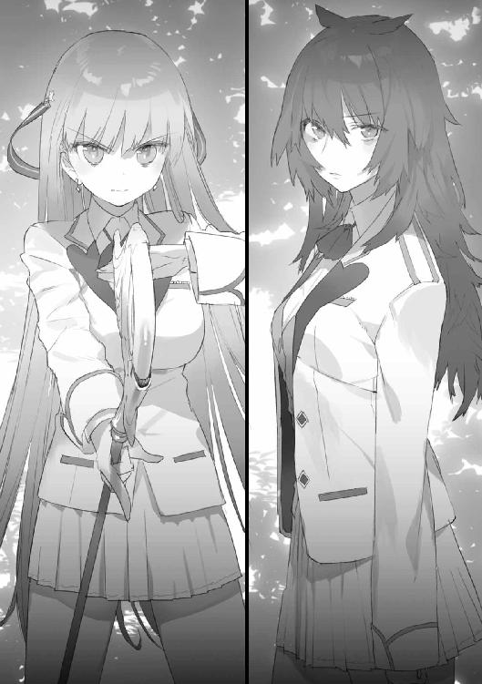
「何でもない。――時間かけるとあの二人が戻ってくるわね。始めましょうか」
「......あの子たち、強いよ？ フィオでも......簡単に勝てると、思わないでね」
フィオは一瞬眉を上げ、そして苦笑しつつため息をついた。
「思えるわけないじゃない。私のような凡才が」
やっぱり彼女は何もわかっていない。
咒禁師としての自分には、凡庸極まりない資質しかない。花耶のように木竜を正面から倒す能力も、子音のように土人形を真っ二つにする能力も持っていない。
それでも、魔禍魂に殺された兄の敵を討ちたかった。だから必死に努力しなければならなかったのだ。
「さっき、私が羨ましかったって言ったわね？ ――私はずっと、志津乃の特別な素質が羨ましかった。いいえ、今も羨ましくて、気が狂いそうになるほど嫉妬してる」
え、と心から意外そうに志津乃が目を見張る。その顔を見て、ちょっと溜飲が下がった。
「お喋りはここまで。――五秒で降参させるから、覚悟しなさい」
「............」
志津乃が全身を緊張させる。
フィオは新たに土人形を作り出そうとし――そして、動きを止めた。
「何......？」
レーダー代わりに展開していた土人形が壊されたのだ。それも数体まとめて。
花耶や子音ではない。方向が違うし、彼女たちの固有咒術はこんなに暴力的ではない。
木竜のチームＢか？ いや、それも変だ。あのチームのアタッカーは木竜一人だったはず。これはどう考えても複数の暴威によって土人形たちが破壊されている。
しかもこの位置は......チームＡの拠点付近？
「こちら鈴切！ 聞こえたら応答して！」
仲間たちに呼びかける。しかし耳に届くのはかすかなホワイトノイズのみ。
――何があった？
と、そのとき――フィオは強い違和感を覚えた。咒杖がおかしい。
固有咒術が、発動できない？ いや、これはむしろ、別種の咒術が強制的に割り込んできているような――
反射的にフィオは咒杖を手放し、大きく飛び退った。
結果としてその行動が紙一重で彼女の命を救った。突如咒杖から出現した太い腕が、フィオの頭を叩き潰そうとして空を切ったのだ。
「な――なに、これ？」
地面に落ちた咒杖から、腕の持ち主がゆっくりと出現する。
人のように二足歩行する巨大な生物。しかし、人ではありえない。肩から、脇腹から大小合わせて十数本の触手が生えていた。
「魔禍魂......？ なん、で......？」
志津乃が茫然と呟く。
我に返ったのはフィオの方が早かった。
「だめ！ 志津乃、逃げ――」
だが、警告は間に合わない。志津乃の頭部に対して、触手の一本が視認できないほどの勢いで振り下ろされ――直撃した。
＊ ＊ ＊
「――あれ？」
花耶は首を捻った。
子音と志津乃に連絡を試みたのだが、応答が返ってこなかったのだ。通信機の故障、それとも電波障害か何かだろうか。いつからおかしくなっていたのだろう？
少し迷って、花耶はベースに連絡を試みた。
「あの、日垣先生、沢樹先生、聞こえますか？ チームＣの千代森です。通信機の調子が悪いみたいなんですけど......」
やはり応答はない。
「困ったな......」
こういう場合、試験はどうなるのだろう。
そのとき、右手の茂みがガサガサと音を立てた。
通信機に気を取られていたため、反応が遅れた。身構える間もなく、影が飛び出してくる。
「あ――」
花耶は声を上げた。姿を現したのは――見知った後輩だった。
「び、びっくりした。脅かさないでよ、子音。――子音？」
様子がおかしい。普段は陽気でお喋りな彼女が、真っ青な顔をして言葉を失っている。
「どうしたの？ 何かあったの？」
「ひ――人が......人が倒れてて......」
ようやく喘ぐように言葉を絞り出した。
「こっちだね」
すぐに花耶は子音がやってきた方へと足を向けた。
誰であるにせよ、倒れているというのなら状態を確認し、助けなければならないだろう。試験は後回しだ。
方角には迷わなかった。進むにしたがって特徴的な臭気が強くなっていったからだ。
――生臭い、鉄の臭い。
嫌な予感を覚えつつ、茂みを突っ切って数十メートル。そこには――
「う......」
花耶は足を止め、口元を押さえた。
血塗れの肉塊が二つ、転がっていた。いずれもほとんど原形を留めていない。手当ての必要がないことは一目でわかった。
どちらも制服は男子のものだ。咒杖の形にも見覚えがある。
「チームＢの、先輩たち......？」
吐き気を堪えつつ、さらに周囲を見回す。少し離れたところに大剣型の咒杖が落ちているのに気付いた。持ち主の姿はない。
変だ、と花耶は思った。
何か不測の事態が起こったのは確かだ。だが、そんな状況で咒禁師が――あの木竜が、咒杖を手放すはずがない。
「何事なのよ、これ......」
背後からの声に振り返ると、子音が歩いてきていた。
「動いて大丈夫なの？」
「だ、大丈夫じゃないけど、一人にされても困るってば。通信機も通じないしさ」
「あ、やっぱり、子音もなんだ......」
花耶は少し考え、言った。
「試験どころじゃないよね、これ。歩いて、先生たちに知らせ――」
そのとき――足元の大剣が淡い光を放った。
二人は揃って目を瞬かせる。持ち主の手を離れた咒杖が勝手に起動することなど、通常はありえない。
しかし――真の驚愕がやってきたのは、その後だった。
ずるり、ぬちゃり、という湿った音とともに、咒杖から名状しがたい怪物が姿を現したのだ。
「――危ない！」
とっさに花耶は咒術を発動、子音に飛びついた。
すぐ背後でガチンと顎の閉じる音。
二人で地面に転がりながら、全身から冷や汗が噴出すのを感じていた。上手く発動してくれたからよかったものの、失敗していたら頭を齧り取られていただろう。
体高約二メートル。四つ足の上に人の上半身を載せたような形。目は胸の真ん中に大きなものが一つ。部分部分は人間のものに近く、それが逆におぞましさを際立たせている。
仕留め損ねた獲物を再度狩るべく、怪物はぐるんと上体をこちらに向けた。
「わ――うわぁあああああぁっ！」
声とともに今度は子音が咒術を使う。
おそらく狙いを定めている余裕もなかったのだろうが、幸運にもそれは敵の胴にヒットする。斜めにラインが浮き上がり、ずるりと皮膚がずれ――片側がどさりと地面に落ちると、怪物は動かなくなった。
二人は地面に座り込んだまま、荒い息をついていた。
「な、なに、これ......気持ち悪い......」
子音が真っ青な顔で言った。魔禍魂だ、と花耶は思った。それは間違いない。
でも、いったい、どうして咒杖から......
混乱した思考を整理しようとしていると、不意に子音が表情を凍りつかせた。
彼女の視線を追い、理解する。向こうの死体の傍に落ちている二本の咒杖から、新たな魔禍魂が出現しようとしていた。
二人は申し合わせる手間も惜しんで、全力で駆け出した。
限界まで走って走って、後ろから魔禍魂が追ってきていないことを確認し――ようやく足を緩める。
「な、なん、なのよ、いったい、何が、起きて......」
「魔禍魂が、咒杖から出てきたんだよ」
「わかってるよ！ そんなの！」
子音は大声を上げた。
「おかしいでしょ!? なんで、ここに魔禍魂が!? 『奈落』から出てくるんじゃなかったの!? こんなの、授業で習ってないし、聞いたこともない！ だいたい――」
「落ち着いて！」
花耶は子音を抱き寄せた。そして優しく囁く。
「ね、落ち着いて。近くに魔禍魂はいないよ。しばらくは大丈夫。......怖いの？」
「こ、怖くなんか――」
「私はね、怖いよ。ものすごく」
「............」
「何が起こってるのかわからないし、魔禍魂と戦うのも初めてだったし......。でね、日垣先生が言ってたんだけど......不安になることは日垣先生にもあるんだって。でも、そういうときは強がったりせず、その感情も自分の一部なんだと認めてしまった方がいいって。その方が緊張しないから」
過度の恐怖や緊張は、判断を狂わせ体の自由を縛る。しかし今そんな状態に陥ることは、死を意味するのだ。
「......わかった」
ややあって子音は肯いた。
「あたしは怖い。泣いて暴れて逃げ出したいくらい怖い」
「うん......」
「でもパニクるのはやめる。――ちょっと頭冷えた。ありがと」
「よかった」
照れ隠しなのか少し不機嫌そうな様子の子音に、花耶は笑いかけた。
とはいえ、状況は何も好転していない。
「......やっぱり通じないね」
周囲の安全を確認したうえで、花耶たちは何度か悠志朗や志津乃に通信を試みたが、全て失敗に終わった。システム自体が機能していないようだ。
咒杖から次々魔禍魂が出てくるのだとすれば、すぐに手がつけられなくなる。
何とか悠志朗に状況を知らせて、対策隊を送ってもらわないといけないのだが――どうすればいいだろう。
「......あたし、父親がいるんだ」
そのとき、不意に子音が口を開いた。
「こいつが結構なクソ野郎でね。酒飲みで暴力振るうし、余所に女作って母さん泣かすし、ギャンブルで借金作るし。あたし、能力が発現したから学園にスカウトされた口なんだけど、これに同意すると家の方にも結構なお金が入るのね。で、父親が喜んで言うわけ。『もっと優秀になって、いい職について、親に恩返しをしろ』って」
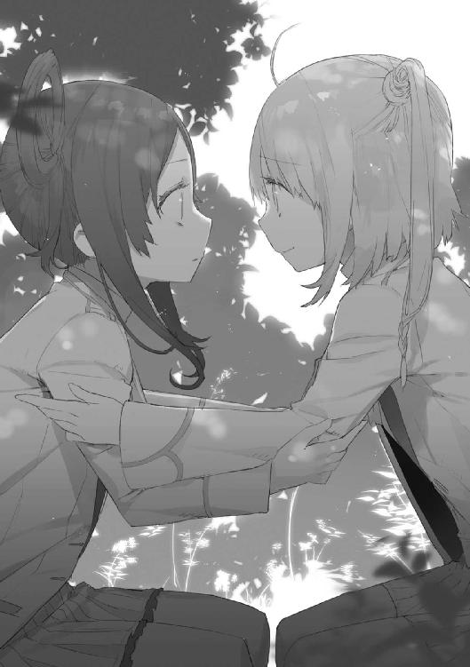
咒禁師であるというのは特殊な才能だ。特に子音の咒術には希少価値がある。
花耶は彼女が自分の成績を調節していた理由を理解した。父親の望み通りに育ち、望み通りに富を運ぶお財布にはなりたくない。かといって退学になれば、実家に戻されることになる。どちらも選べなかったのだ。
「だから、帰ったらあたしはあいつを殴る。絶対、ぶん殴ってやる」
「え？」
いきなり話が飛躍した。
「学園で鍛えたし、あいつは運動不足だから結構いい勝負ができる気がする。こんな経験した後じゃ、あんなおっさん、怖くも何ともなくなってるだろうし！」
鼻息荒く言い切り、そして子音はこちらを見た。
「......そんな変な顔しないでよ。今ここで死ぬわけにいかない理由を、考えてみただけ。少し気合が入るかなと思って。――花耶にはないの？ そういうの」
「あー......うん、死ねない理由、かあ......」
――悠志朗に会いたい。
思った以上にあっさりとそんな願いが浮かんだ。
悠志朗に会って、自分の努力と成長を認めてもらって、褒めてほしい。笑って頭を撫でてほしい。そして頼むのだ『もう少し、私の先生でいてください』と。
「......会いたい人と、伝えたいことがある、かな」
さすがに正直に言うのは気恥ずかしかったので、言葉を濁す。
子音は花耶の顔をじっと見つめた後、そ、と短く言った。
「ごまかすのって、ずるかったかな？」
「別に。――花耶は普段からわかりやすいから、訊くまでもないというか」
「え？」
「さ、体力戻ったし、気分も落ち着いた。生きてる人を探しながら、脱出を目指そーか」
子音は立ち上がり、歩き出す。慌てて花耶も後に続いた。
＊ ＊ ＊
「――円能寺君、君の端末、電話かメール通じる？」
「は？」
要は眉を寄せて悠志朗を見た。
「なんですか、いきなり。――電波は来てるみたいですけど」
「実際にかけてみて」
はあ、と怪訝そうな顔をしながらも、要は言われた通り端末を操作する。
「......あれ？ 通じませんね。おかしいな」
「実は僕のもなんだよね。あと、この何分か、千代森さんたち訓練場の学生たちの通信も聞こえてこない」
「単に音声系の不具合じゃないですか？ ――あ、いや、それはおかしいな。個人端末と訓練場の通信モニターは別系統のはずだし」
悠志朗は少し考え席を立つと、沢樹の元に向かった。
「沢樹さん、通信に不具合が出ていることにはお気付きですよね？」
「ああ、今原因を調べてる」
「即座に試験は中止、延期にすべきだと思います」
「中止？ 何を言っているんだ君は」
沢樹は不機嫌そうな視線を向けた。
「スケジュールの調整が面倒だ。しかも、今日は来賓も多く見えている。そんな醜態が晒せるか」
「事故が起これば醜態ではすみませんよ。学生たちが相互に連絡できない、こちらからの指示も通じない、では万一怪我人が出たときに対応できません。おおごとになります。そうなれば責任を取らされるのは誰だと思います？」
「............」
試験の責任者は、片眉をぴくりと動かした。
「一方、現場の判断で中止すれば、大きな問題にはなりませんよ。上の方の人たちはたいてい事なかれ主義ですし、慎重なリスク回避はむしろ評価されます」
しばらく考え込んでいたが、やがて沢樹は舌打ちを一つして立ち上がった。
「やむを得んな。生徒のところに直接行って、中止を通達してくる」
「お願いします」
悠志朗は訓練場に入っていく沢樹を見送り、そして要を手招きした。
「こっちの端末から、ソロモンシステムに異常が起きていないか確認してみて。音声以外の部分も。試験監督官の権限でログイン中だから、かなり奥の方にもアクセスできると思う」
「もし後で怒られたら、ちゃんと弁護してくださいよ。......しかし、セキリュティ意識低いな、沢樹先生」
不承不承という様子ながらも、要は言われた通りキーを叩き始める。
「音声以外のデータは普通に表示されてますから、これがソロモン管理の実データと一致してるかどうかを確認すればいいんですね。多分、すぐに――」
そこで不意に要は眉をひそめ、何だこれ、と呟いた。
「何かあった？」
「ええ、咒杖の稼働状況から調べてみたんですが......いきなりビンゴです。ソロモンに直接データの参照命令を出したら、シャットアウト喰らいました。今ここのモニターに表示されてるのは、ダミーデータですね」
悠志朗は少し考え、内ポケットからボールペンのような筒を取り出した。
窓を開け、空に向けると底部を捻る。黄色の煙の尾を引く信号弾が打ち出された。
「......日垣さん？」
「発煙弾だよ。緊急事態の信号用」
これで伝わったはずだ。彼女にも少し働いてもらうとしよう。
＊ ＊ ＊
「そうですわね、おそらく通信障害ではないかと」
どうなったのか、という問いに対し、かがりは穏やかにそう答えた。
中央モニタールーム。試験中の学生たちのやり取りは、ここにも中継されている。ところが、第三ピリオドに入った直後、突然音声が途絶えたのだ。
「映像の方には問題なく試験も続行されているようですから、訓練場からここに音声を届けるラインのどこかが途絶してしまったのでしょう」
「おいおい、大丈夫かね。高い金かけて組んだシステムだろう？」
「まことに申し訳ございません。すぐに原因を特定いたします」
愛想笑いでやり過ごす。
学園に対するお歴々の印象は若干悪くなったかもしれない。理事としてはあまりありがたくない事態だが――本当に単なる不具合なら、その程度の影響で済む。
問題はそうではなかった場合だ。
実のところ、かがりは状況を楽観していなかった。
政府からの機密レベルの高い極秘情報として、新種の魔禍魂が現れる可能性が示唆されていた。さらに機密漏洩や、ソロモンシステムへの不正なハッキング等々――ここ数か月、天原学園内部に不穏な動きがあった。
だから、悠志朗に内偵を頼んでいたのだ。彼を送り込んだのは補習を担当させるだけではなく、そのためでもあった。
そして要人が集まる今日、何か動きがあることは十分に予測できる。
（こちらを狙うとしたら――）
まず学園の通信ネットワークを無力化し、外部から切り離すだろう。そのため五分置きに悠志朗の携帯端末とやり取りをし、通信状態を確認し続けていた。自動操作でもいいのだが、文章を添付していたのは......まあ趣味である。
――しばらく前から悠志朗のレスポンスは返ってきていない。
「......おや？」
そのとき、市長が声を上げた。窓の外を指差して尋ねる。
「朱鷺田君、あれは？」
一筋の煙が空に向かって直線を描いている。発生元は野外訓練場の入口付近か。
「信号用の発煙弾ですわ。電子機器はトラブルも多いですから、祓魔技能士は場合によってこういうシンプルな通信手段も利用するのです」
――さて。
あれは悠志朗のものだ。色は黄色。ということは、向こうで異常事態が起きている。
かがりはもう一度室内のモニターに視線を向けた。音がないという以外、表示される映像やデータにおかしなところはない、が――
「......異常が起きてるのに、異常が映ってないってことは、映像の方が間違ってるわけねー。音声途絶は状況隠蔽のためか。うんうん、辻褄合う合う」
「朱鷺田君？ な、何事かね？」
急に生き生きし出したかがりの様子を見て、市長は不審の声を上げる。
「会話の方も捏造できればもっと時間稼げたんでしょうけど、状況は刻々と変わるわけで......不自然ではない音声を全員分用意するのはさすがに難しかったんでしょうねー。だから映像と数値だけ平穏無事なダミーを表示させて、音声を切ったわけです」
「な、何を言って――」
「まあ、誰がやったかは置くとして、現在ソロモンちゃんは騙されるか抱き込まれるかしてるわけですね。つまりはこっちで正常に戻せとゆう君は言ってるわけだ。了解了解」
来賓たちにはもう目もくれず、かがりはコンソールの前に陣取った。
この端末から管理者権限を使ってアクセスすれば――
「......おやおやー、隠蔽工作と干渉遮断のシステム構築頑張ってるねー。でもこっちの権限は最上級なんで――お姉さんの、言うこと聞きなさいっと。はい、ダミーデータ消去」
かがりは障害を排除し、キーを押す。
と――背後の人々からどよめきと小さな悲鳴が起こった。
画面の幾つかには惨事の現場が映っていた。力なく投げ出された体、千切られた手足。少なくともすでに数名の犠牲者が出ている。
そして――怪物の姿。
「魔禍魂......な、なぜ......？」
誰かがうめくような声で言った。
「......当たりはこっちじゃなく、あっちだった、かあ」
かがりは小声で呟き、正常に戻った情報を読み取っていく。
もはや所有者が動いていない個人視点カメラ、九つ中四つ。
咒杖、チームＣのものは正常。チームＡ、Ｂは――
「......何これ」
眉をひそめる。
咒力のグラフが滅茶苦茶な動きを示していた。リミッターも術者の意志も介在せず、まるで壊れた蛇口からずっと力を垂れ流し続けているような......
「デフォルトのシステムが、無理やり異界に接続されるように書き換えられてるのかあ。ウイルス仕込まれてるね。チームＣは独自のシステムを組んだから生き残ったと」
咒杖の役割は咒術発動のためのエネルギーをこちらの世界に召喚することである。しかし、今は接続先と転送量制限が書き換えられているようだった。
「ふーん、咒杖の咒力召喚機能を魔禍魂召喚に置換......つまり、咒杖を丸ごと奈落化させたんだ。やってくれるね」
細かい仕組みを確認するのは後でいい。今は可能な限り、異常を回復させないと。
通信障害にもソロモンが利用されているようだ。かがりは命令を上書きし、そして自分の端末から電話をかけた。
『かがり姉さん？』
「おっけ、通じた。――通信系は部分的に正常化した。ログ見たけど、そっちからそこそこ使えるっぽいのがアクセスしてるね。傍にいる？」
『あ、ああ』
「じゃあ、そっちに最高権限貸すから、その他のシステム周りを直してもらって。訓練場の通信系統優先。ゆう君は学生たちの救援に」
『了解』
通話を切ると、かがりは一つため息をついた。
「さて、こちらはこちらでご老人たちの面倒見るお仕事しないとね。――メインディッシュが向こうに行っちゃったのは、とっても残念だけど」
＊ ＊ ＊
フィオは周囲に魔禍魂の気配がないのを確認し、足を緩めた。
ようやく呼吸を整える余裕が生まれる。
（どうして、咒杖から......）
そう、魔禍魂は間違いなく咒杖から出現した。その時点で咒杖は一切のコントロールも隠形化も不可能になっており、フィオは結局、咒杖を投げ捨てて逃げてきたのである。
「志津乃......」
胸がずきんと痛んだ。助けられなかった。
何が序列三位だ。何が努力してきた、だ。そんなもの何の役にも立たなかった。何の意味もなかった。友人を犠牲にして、自分一人のうのうと生き延びて――
『聞こえてるかな？』
恐怖と自責と絶望でぐちゃぐちゃになりかけたフィオの頭を冷やしたのは、耳に装着した通信機から聞こえてきた声だった。
『全員、返事は要らないから、そのまま聞いてくれ。簡潔にこちらで把握している状況を伝える』
「日垣、先生――」
『通信機能は限定的に回復させた。チームＡ、Ｂの咒杖が魔禍魂の出現点――つまり、奈落化している。放棄して、その場から離れること。チームＣも戦おうとか思わなくていい。みんな、とにかく逃げて、生き延びろ。――すぐに僕が助けに向うから』
力強い言葉を残して通信は切れた。
正直に言えば、心細い。咒杖を失った今の自分は常人と同じなのだ。普段、どれだけ咒術に頼っていたか、思い知らされる。
それでも、希望が見えた。
（ひとまず出口を目指そう）
歩き出そうとし――そしてフィオはふと首を傾げる。人のうめき声が聞こえた気がしたのだ。岩場の陰、背の高い草むらの中、か。
確認に向かったフィオは、そこに見知った顔を見つけた。
「木竜、君......」
「てめえか」
木竜は唇を歪めた。苦笑なのかそれとも苦痛を堪えただけなのか、判然としなかった。
彼の右足は血に塗れていた。太ももに、巨大な爪に抉られたと思しき深い傷がある。
「同情ならいらねえぞ。――俺は歩けねえ。置いていけ」
「そういうわけにもいかないでしょう。何とか血を――」
「同情すんなっつってんだろうが！」
フィオは眉をひそめて木竜を見た。顔色は白く、額には汗の玉が浮いている。強がっているのは明らかだった。
「うぬぼれないで。あなた、自分が同情されるような人間だとでも思ってるの？」
「な――」
「これは私の矜持よ。怪我人を見捨てて逃げるってのは、プライドが許さないの。たとえ相手があなたでも。――足の付け根を力いっぱい押さえなさい。止血になるから。焼け石に水かもだけど、やらないよりはマシだわ」
木竜は忌々しそうに舌打ちしたが、それ以上何も言わず指示に従った。
（日垣先生、いつごろ来てくれるだろう）
いや、過度な期待はできない。プロの祓魔技能士とはいえ彼はたった一人であり、しかも常人なのだ。であれば木竜に肩を貸して、少しでも移動した方がいいのか――
と、そのとき、フィオの耳が足音を捉えた。人のものでも獣のものでもない気配。木竜も気付いたらしく、苦痛のうめきを噛み殺す。
二人が隠れている岩場から二〇メートルほどのところを、数体の魔禍魂が通過した。幸いにも気付かれた様子はなかった。
気配が遠ざかると、二人は同時に大きく息をついた。
「......おい、気付いたか？ あいつら――」
「ええ、同じ方向を目指してたわね」
魔禍魂には獣以下の知性しかない。そして群れる習性もない。少なくとも、フィオが授業で教わった範囲ではそうだ。
なら、魔禍魂が共通の場所に向かっているように見えるのは何なのだろう。近くに魔禍魂を引き寄せるものがあるのか、それとも、命令を出している個体でもいるのだろうか。
フィオは改めてチームＡの仲間に連絡を取ってみた。応答はない。まだ生徒間の通信は回復していないのか、それとも、彼らがすでに通信できない状態になってしまったのか。
「木竜君、チームＢの人たちは？」
「ああ？ 俺の目の前で死んだよ」
木竜は目に暗い光を湛えてそう言った。フィオは返す言葉を見つけられなかった。
他に生き残りはいるのだろうか。探しに行きたいところだが――怪我人を抱え、咒術の使えない今の自分ではそれもままならない。
「ここでじっとしてるしかないのかしらね」
「どっちにしても、魔禍魂に俺ら以上の優先事項があるなら、ここでやり過ごせるだろ」
「それは、そうだけど......」
自分を納得させようとフィオは天を仰ぎ――そして、目を見開いた。
「......あれこれ悩む必要は、もう、ないかも、しれない」
「あ？」
木竜はフィオの視線を追い、そして同じように顔を強張らせる。
岩場の上から一体の魔禍魂が二人を見下ろしていたのだ。体長およそ二メートル。特別大きくはないものの、人の一人や二人は簡単に肉塊に変えてしまえるサイズだ。
どうする？ 逃げるか？ それとも、無茶を承知で立ち向かうか？
しかし、魔禍魂は二人が動き出す前に飛び降りてきた。何をするにしても、もう間に合わないだろう。フィオは死を覚悟した。
そのとき――
「ええ――――――――いッ！」
すごい速さで飛び出してきた人影が、着地の瞬間を狙って体当たりした。ダメージを与えるには至らなかったものの、一瞬魔禍魂がバランスを崩す。
次の瞬間、そのおぞましい姿が真っ二つに裂けた。血を撒き散らしながら絶命する。
「だ、大丈夫ですか？ お二人とも、怪我はないですか？」
花耶と子音がそこに立っていた。
＊ ＊ ＊
『――つまり、今咒術を使うことができるのは、チームＣの三人だけってことだ』
悠志朗から通信があったのは、花耶と子音が出口に向けて慎重に移動しているときのことだった。
『訓練用のリミッターは切ってある。生きて逃げることを第一に考えて欲しいけど――もしできれば、ＡやＢの人間を助けて脱出させてあげてくれ』
魔禍魂たちが同じ方向に移動しているのには、花耶たちも気付いていた。
その中で、一体だけが目立つ岩場の上に立ち――獲物を狙う体勢を取っていた。だから駆けつけることができたのである。
「あなたたち――」
「は、話は後！ 移動します。鈴切先輩は木竜先輩を」
花耶は焦りを覚えつつ、そう言った。
フィオたちを護れたのはよかったが、かなり大きな物音を立ててしまった。他の魔禍魂たちに気付かれたかもしれない。急いでここを離れなければ。
――しかし、遅かった。
「......ざけんな。何だよ、これは」
木竜がうめいた。
集まってきたのは想像以上の数だった。三〇か、四〇か、あるいはそれ以上か――四人は半円状に包囲されていた。
どうする？ どうすれば、切り抜けられる？
「――逃げなさい。あなたたち二人だけなら何とかなるんでしょう？」
フィオがぼそりと言った。花耶は息を呑んだ。
「おい、鈴切......」
「木竜君、あなたも力なき者は切り捨てるべきって意見じゃなかったかしら？ 私たちがそっちの立場になったってだけの話なのよ。――それとも、後輩たちに泣きながら頼んでみる？ 『どうか弱い自分を見捨てないでくれ』って」
「......くそ」
木竜は舌打ちをして口をつぐんだ。
「せ、先輩......」
「大丈夫、咒術が使えないとしても、ただでやられるつもりはないから。何体かは引きつけられるし、もしかしたら一体くらい道連れにできるかもしれない」
フィオは笑顔を浮かべた。
あるいは強がりだったのかもしれない。それでも――この状況で笑ってみせることができる彼女を、花耶はすごいと思った。
と――
「は、バッカじゃないの」
口を開いたのは子音だった。
「この期に及んで先輩面ですかー？ 何様なんでしょうねー。......あのね、子音はあなたたちみたいな威張った奴らが、大っ嫌いなんですよー」
「須能さん、あなたね――」
「ずっと言ってやる機会をうかがってたんだけど、今がそうみたいですね。――誰があんたのいうことなんか聞いてやるか！ 偉そうに命令しないで！」
フィオはあっけに取られた表情で、絶句していた。
「子音......」
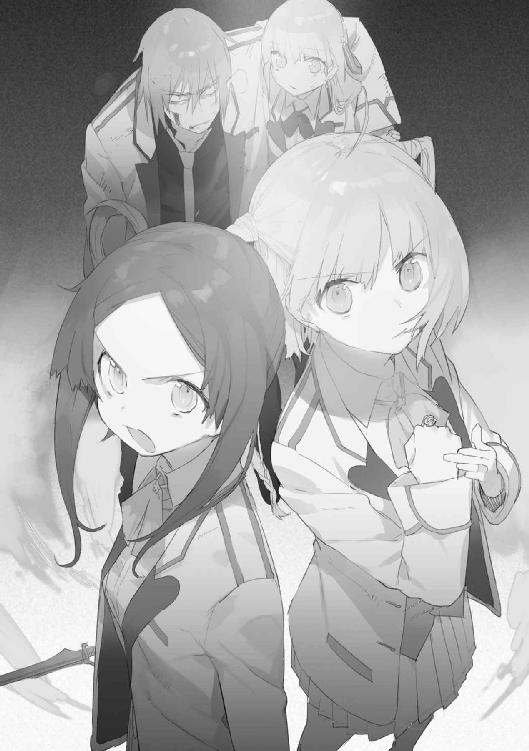
こんなときなのに、花耶は少し笑いたくなった。本当に素直じゃない子だ。
「――うん、そうだね。逃げずに、できるだけ粘ってみよう」
今この瞬間も、自分たちを救い出そうと動いている人たちがいる。時間を稼ぐことができれば、必ず道は開けるはずだ。
「来るよ！」
子音の声と同時に魔禍魂が襲い掛かってきた。
一体が彼女の咒術で両断され、絶命。次いでもう一体も。しかし、怯むことなく三体目の個体が襲い掛かってきた。
「危ない！」
花耶は子音を後ろに引きずり倒した。
子音の咒術は強力だが、一度に対象にできるのは一体だけ。集中して狙いを定める必要があるため、連続使用も難しい。多勢で攻められると、いつかは押し切られる。
ここに来るまで、花耶が囮となり子音が止めを刺すというやり方で何体か魔禍魂を倒してきた。しかし、この数を相手にするとなると、その戦法では限界がある。
「こんの――っ！」
子音は転がったまま《裂断》を発動。三体目が真っ二つになる。
しかし、死に際に振るわれた爪が術者の体をかすめた。
「子音！」
「平気！ かすり傷！」
言葉通り軽傷だったのだろう。子音は跳ね起きた。
しかし、依然魔禍魂の数は多く、包囲の輪はじりじりと狭まってくる。
＊ ＊ ＊
どう考えても無茶だ、と木竜は思った。中等部のガキ二人でどうにかなる数ではない。
案の定、徐々に押され始めている。二人とも小さな傷を無数に作りながら持ちこたえているが、決壊するのも時間の問題だろう。
「......三つ数えたら、私、あなたを放り出して飛び出すから。隠れるなり諦めるなり好きにして」
木竜の肩を支えているフィオが小声で言った。
囮となって少しでも二人を助けようというのか。木竜は鼻を鳴らす。まったく、どうやったらこんな教科書に載りそうな自己犠牲精神が育つのだろう。
「......お前左、俺は右な」
フィオは驚いたような視線をこちらに向けた。
「んだよ、その目は。俺にだってプライドはあるんだよ、クソが」
見下してきた弱者としてここで死ぬ。それはもうどうしようもない。
しかし――護られる立場に甘んじ、何もしないまま無様に力尽きるのはごめんだった。
「まあ、敵は分散させた方が効果的ね。じゃあ、行くわよ。一、二の――」
その瞬間――上から何かが降ってきた。大きな両刃の西洋剣と、長めの杖。
岩場の上に、少女の顔が覗いている。フィオがぽかんと口を開いた。
「志津乃？ ......あれ？ あなた、死んで――」
『システム正常化、完了！ 咒杖の機能は戻ってるはずだ！』
通信機から要の声が聞こえてきた。
状況を把握したのはフィオの方が一歩早かった。咒杖を手に取り、地面に突き立てる。
「木竜君、カバー！」
「お、おう」
大剣を手に取り、飛び掛かってきた魔禍魂を切り捨てた。
――違和感無く咒術は発動している。
すでに花耶と子音は力尽きる寸前だ。討ち漏らした魔禍魂が、こちらに続々と向かってくる。木竜は静かに息を吐いて精神を集中させた。
足は痛むが、咒術で筋力強化すれば立つくらいはできる。
多勢相手の立ち回りは苦しいので、フィオの前に立ち、向かってくるものを迎撃することを選択した。
（小さく、鋭く、速く――か）
あの忌々しい臨時教官の言葉が脳裏に蘇る。
大振りはせず、隙は作らない。魔禍魂がまた一体、苦痛の声を上げて後退する。
こういう戦い方をするのは初めてだが、それは単に現状一番有効だからであって、奴のアドバイスを参考にしたわけではない。そう、決して。
結果として木竜は持ちこたえた。一撃で屠ることはほとんどできなかったが、襲ってきた敵を全て撥ね返すことに成功したのだ。
その間にフィオの咒術が完成した。
「――行きなさい！ 土人形！」
＊ ＊ ＊
「だめ......頑張らないと――」
花耶は遠のきかける意識を必死に繋ぎとめた。
魔禍魂はまだまだ残っている。ここで倒れるわけにはいかない。
そのとき――子音が膝をつくのが見えた。
助けに行こうと地面を蹴ろうとした瞬間、視界がぐらりと揺れた。
花耶もとっくに限界を迎えていたのだ。消費し切った体力を無理やり精神力で補い、それすらもう尽きようとしている。
何とか転倒は免れた。しかし、獲物が弱ったことを察知して魔禍魂が殺到してくる。
意志は挫けていない。ただ、体が言うことを聞かない。
花耶は唇を噛みながら、せめてもの抵抗として顔を上げ敵を睨みつけようとした。
その瞬間――目の前に土色の壁が出現した。
「え――」
「下がって、千代森さん！」
フィオが咒杖を構えていた。
突進を阻まれた魔禍魂が怒りの咆哮を上げる。
考えている時間はない。花耶は力を振り絞って子音を抱きかかえ、慌てて後退する。
――と、岩場から降りてきた志津乃が、軽く片手を挙げた。
（そうか、志津乃さん、間に合ったんだ......）
悠志朗は花耶たちに他の生徒の保護を指示する一方で、志津乃には咒杖の回収を任せていた。魔禍魂の転送出口としての機能は要が封じることに成功したため、咒杖を再び術者の手に戻せば状況を大きく好転させることができる。
「ね、子音、大丈夫？」
「だいじょう、ぶ......でも、頭、いたい......死ねる......」
これ以上の咒術行使は難しそうだが、大きな怪我はない。花耶はほっと息をついた。
「休んでいていいわ。数を押さえ込むなら、私の力が一番適任だから」
土人形を操りながらフィオが言った。
破壊されたとしても、土人形はすぐに新しく生成できる。状況はもう外にも伝わっているはずだ。全滅させるのは難しいが、迎撃態勢が整うまで街には出さず、ここに釘付けにしておくことは十分可能だろう。
しかし、そう思ったとき――魔禍魂の群が一斉に距離を取った。
数体を残し、そのほとんどが訓練場の出入口、学園の方に移動を開始する。
「......そんな......どうして？」
花耶は呟いた。その場にいる全員に共通する感想だっただろう。
明らかに知性ある何かに統率された動きだ。こんなケースは、授業でも聞いたことがない。
「――不思議か？」
人間の声がした。皆の視線がそちらに動く。見覚えのある姿がゆっくりと現れた。
「沢樹、先生......？」
常に不機嫌で、どこか卑屈そうな学園の教官。
「不思議か？ こんなことが不思議なのか？ 人は未だ魔禍魂の生態の全容を知らず、となれば当然想定外の事態も起こりうる。そんなことも理解できんのか、バカどもが」
普段通りの棘のある言動。これは手の込んだお芝居か何かで、全ては試験の一環だったのだろうか、などと一瞬花耶は考える。
――もちろんそんなはずはなかった。死体をいくつも確認しているし、ここにいる全員、殺されかけているのだ。
「授業でやっただろう。魔禍魂は変化する。――魔禍魂の本質は『模倣』だ。こっちの動物を参考に、こっちの世界で有用な感覚器官と戦いやすい姿形を整えた。そして今、人間たちを参考に効率よく戦える集団戦術を身につけた。なぜいつまでも愚かな本能のみの存在であり続けると思うのだ？ まったく、最低限の想像力もないのか。貴様らの将来が思いやられるな」
沢樹は眉を寄せぶつぶつと呟きながら、こちらに向かってゆっくりと足を進める。
違和感の一言で片付けるには強烈過ぎる不気味さだった。
間違いなく人が死に、しかもこれから魔禍魂によってさらなる惨事が引き起こされようというのに、彼の口調や表情はあまりにも普通で――ありふれた小人物の、ごく日常的なそれなのだ。
「と、止まれッ！」
木竜が警告を発した。沢樹は足を止めた。そして右手をゆっくりと持ち上げる。
突然、その腕が伸びた。
否――肉色をした長大な触手にその姿を変えたのだ。
「――――っ！ みんな、離れて――！」
フィオが怒鳴る。
横薙ぎに振り回された触手は土人形を次々と破壊し、そしてフィオと木竜を巻き込んで吹き飛ばした。地面に転がる二人。
「フィオッ！」
珍しく志津乃が大声を上げた。応えるかのように、フィオの口からうめき声が漏れた。
――大丈夫、生きてる。
しかし、助けに行くような隙はない。沢樹の感情の読めない目が、じっとこちらを見つめている。
「な、なに、よ、それ......。魔禍魂の器官を、移植したの？ 狂ってない？」
子音が嫌悪感も露に吐き捨てた。
「そう思うか？ そう思うか、須能？ だからお前は落ちこぼれなのだ。その程度だから学園に不要なのだ」
口調だけを切り取れば、怒り、あるいは不機嫌さの自然な表出だ。
しかし、やはり何かが決定的にずれている。この非日常な状況にあって、なお『劣等感が強く度量に欠ける人物の日常』を演じ続けているような、ちぐはぐさ。普通であるがゆえの、異常さ。
魔禍魂は変化する。魔禍魂の本質は模倣。そう彼は言った。そしてこの非人間性。
「......ち、違う。そうじゃないよ、子音。ひ、人が、魔禍魂を取り込んだんじゃない」
花耶は震える声で言った。
「沢樹先生は魔禍魂――完全な人間型の魔禍魂なんだ」
＊ ＊ ＊
「ま、まだかっ！ ヘリはまだかねっ！」
市長は裏返った声で叫んだ。
「落ち着いてください。急かせてもこれ以上到着が早まったりはしませんわ」
かがりは苦笑交じりに宥める。
通信が回復したことで外部との連絡が可能になった。救援を要請し、客人たちを屋上のヘリポートまで案内してきたところだ。
当然ながら魔禍魂の大量発生も報告してある。今、街の方では避難警報の発令とともに迎撃隊が組織されているはずだが――
「......あら」
端末で状況を確認し、かがりは小さく声を上げた。
「ど、どうかしたのかね？」
「野外訓練場から魔禍魂が溢れてきますわね。といっても、二〇体程度ですけど」
「な――」
「動きに迷いがない。おそらく......目指しているのは、ここでしょうか」
首謀者の第一目的が咒杖を奈落化させ、魔禍魂を召喚することだったのは疑いない。とはいえそれが首尾よく成功したなら、行きがけの駄賃を狙っても不自然ではないだろう。何せ、今ここに居るのは天原市の魔禍魂対策プロジェクトにおける重鎮ばかりなのだ。
「へ、閉鎖を！ 野外訓練場区画を閉鎖しろ！」
「システムのコントロールも戻りましたから、可能ではありますが......よろしいのですか？ 市長。それでは取り残されてる学生たちも、もう避難できなくなりますよ？」
「か、構わん。私たち――いや、市街地の市民の安全が優先だ。は、早くやりたまえ！」
かがりは小さく肩をすくめ、手元の端末を操作した。
天原市は人工の浮島を幾つも連結した構造になっている。この校舎と野外訓練場は隣接しているものの別ブロックであり、連絡橋を上げてしまえば通行不可能になるのだ。
次々と経路が閉鎖される。
たった一つ――野外訓練場とここを結ぶものを除いて。
「と、朱鷺田君――？」
かがりは市長に向かって、にっこりと微笑んだ。
「ああ、学園と市街地を繋ぐルートは全て遮断しました。街に奴らが流入することはありませんから、ご安心ください」
「ご、ご安心って、我々もここに取り残されたということではないか！」
「そうとも言いますわね」
「ふざけるな！ なぜこんな真似を――」
「なぜって」
かがりは当たり前のように答えた。
「全部を訓練場に閉じ込めてしまうと、私の取り分がなくなってしまうもの。私にも焼かせてくれたっていいじゃない。――ねえ、市長。政治家でいらっしゃるあなたになら同意していただけると思いますけど、不公平は是正されるべきだと思いません？」
「そ、そう思うが......」
年若い娘に気圧された様子で市長は肯く。
「私の家族はねえ、みんな焼け死んだの。魔禍魂が起こした高速道路の大惨事で、車の中に閉じ込められて。苦しみもがきながら。だから、魔禍魂も焼け死なないと、たくさんたくさん苦しんで焼け死なないと、不公平でしょ？ 私に釣り合うよう、均等に痛みを分けてあげないといけないでしょ？ だから、あそこにいる肉の群は私のもの。私の獲物であり、ご馳走なの。そうじゃないといけないの。要するに――」
かがりは笑う。その目に異様な情熱を滾らせながら。
「口を挟むな、老人ども」
外野を黙らせると、咒杖を取り出す。
かがりのはライターの形をしている。父親の遺品をベースにしたものだ。
魔禍魂の姿が見えた。眼下のグラウンドを横切り、一直線にこの校舎を目指してくる。
「ようこそ、天原学園へ。......さ、踊りなさい」
かがりが呟いた刹那――広大なグラウンドを炎の螺旋が呑み込んだ。
それはまさに一瞬のことだった。回避する手段のあるはずもなく、魔禍魂たちは灼熱の渦に捕らわれ死の舞踏を踊る。
客人たちが声も無く見守るなか――かがりはパチンと指を鳴らした。
炎は嘘のように消え去る。後にはただ炭化して煙を上げる死骸が残るのみ。
「休日なのは幸いでした。他の学生たちを巻き込まずに済みましたものね。――さて、ひとまずここの安全は確保できたと申し上げてよいでしょう。ヘリの到着まで、今しばらくお待ちくださいませ」
来賓たちに向き直ったときは、すでに普段の彼女だった。
「ああ、それと――非常事態で私も取り乱しておりまして、先ほどは少々礼を失した発言をしてしまったかと。どうかご寛恕いただければ」
そしてかがりは目の前の男に優しく笑いかける。
「な、何かね、朱鷺田君」
「市長、神和とは例外なくこういうものです」
「............」
「人間としては壊れてしまった、ただ魔禍魂を狩るための機械。皆、人間らしい何かを失うことで、人間を超えた力を手に入れた怪物なのですよ。――ですから、理解しようと思ってはダメです。使役し利用しようと思ってもダメです。ただほうっておいて、魔禍魂を殺すに任せてください。その方面ではきっちり働きますから」
お、覚えておこうと市長は震える声で答えた。
そう、神和は普通の人間とは違う世界に生きている。その在り方を理解してくれるのは、ともに支え合う関係になれるのは、ただ同類である怪物のみ。
「......向いてないのかも、ってそう言ってたよね。だから学校へ通ってみたいって」
そっと呟く。
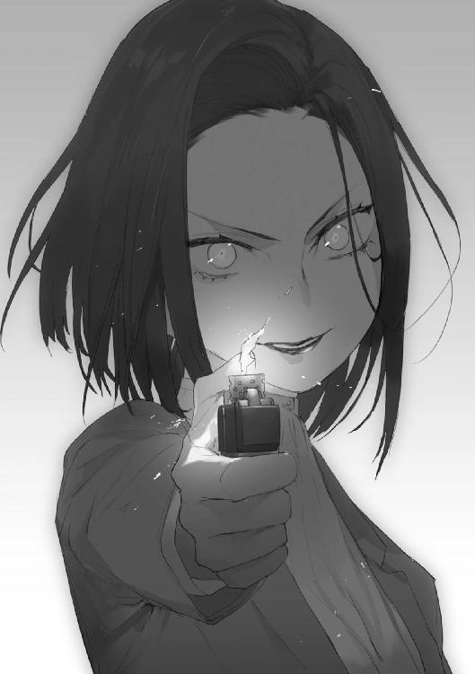
「そんなわけないんだよ。魔禍魂と見れば、殺さずにはいられない。それが私たちの業なんだから。そう育てたんだから。――さて、そっちも頑張って働きなさいねー、私の、私だけの、ゆう君」
薄く笑い、かがりは野外訓練場の方角に視線を向けた。
＊ ＊ ＊
「正確に言えば、この姿も模倣だ」
沢樹は語る。
「情報を完璧にコピーした後、オリジナルは処分した。数年前になる」
魔禍魂と人間の入れ替わり。その意味を考え、花耶は顔を蒼ざめさせた。
「あ、あなたのような、魔禍魂が、まだ他にもいるんですか？」
もしそうならば、大変なことになる。しかし、当然というべきか沢樹は答えなかった。
――と、視界の隅、沢樹から死角になる位置で、木竜が体を起こすのが見えた。
「それで......私たちをどうするつもりですか？」
花耶は会話を続けようと試みた。
意志の疎通ができるとは期待していない。目の前の男は、精神構造からして明らかに異質な存在なのである。これは相手の注意を引きつけておくためだ。
「殺す。は、そんなこともわからんのか」
「わかりたかねえよ」
忍び寄っていた木竜が大剣を振り下ろした。《身体強化》で最大限に加速された一撃。おそらく、巨大な魔禍魂でも粉砕するだけの威力を秘めていただろう。
しかし――
「な、に――？」
木竜は驚愕に目を見開く。剣は触手であっさりと受け止められていた。
「そ想像できなかったのかか？ だから貴様らは駄目なのだ。魔禍魂は模倣する存在。だから咒禁師の脳組織をコピーし咒術を模倣した。こここれはお前の《身体強化》だ」
沢樹は腕を一振りし、木竜の長身を吹き飛ばす。
その瞬間、花耶は残り少ない気力を振り絞って固有咒術を発動させた。
踏み込んで、ナイフで切りつける。狙いは首の側面。人間の形をしたものを傷つける嫌悪感を抑えつけ、刃を振り抜いた。血が噴出した。
――が、それも一瞬のことだった。すぐに傷が治癒する。
「ここれがが《再生》」
ノイズ交じりの声で沢樹は言う。
花耶は唖然とした。咒杖も無しに咒術を、何種類も使えるのか？ でたらめすぎる。
「も模倣に利用した咒禁師はふふ複数だ。こここのようなことももできるる」
沢樹は花耶に視線を固定した。ぞくりと冷たいものが背筋に走る。
「ちょっと、それ......やめてよ......」
背後で子音が呟くのが聞こえた。
そう、この感覚は花耶もよく知っている。つい先ほどまで何度も目の当たりにした、信頼できるパートナーの使用する固有咒術。
発動したら最後、どんな物体であっても確実に切り分ける――《裂断》。
花耶は恐怖に耐えかね、目を閉じた。視界内にいる限り、逃れようがない。そして、これを受けて生きていられる人間も存在しない。
自分は――ここで死ぬ。
――しかし。
いつになっても、覚悟した衝撃や痛みはやってこなかった。
おそるおそる目を開けると――地面に二つに分割された戦闘用ナイフが転がっていた。
「希少で便利な咒術だけど、弱点が無いわけじゃない」
聞き慣れた声。見慣れた穏やかな笑顔。
「射程が短い、高いレベルの集中が必要で連打が利かない、対象を視認していなければならない。だから発動の瞬間、注意を逸らすだけで無効化できる。例えば今みたいに何かを投げつけるとかね。――よく頑張ったけど、最後の最後で諦めちゃったね。それでは合格点をあげられないな、千代森さん」
「日垣、先生......」
ぼろぼろと涙が溢れた。
＊ ＊ ＊
魔禍魂が三、そしてボスの沢樹。――敵は以上の四体。
「みんな、よく生きていてくれたね。後は引き受けるよ」
悠志朗は拳銃を抜き、速射する。対魔禍魂用の特殊弾丸は全て右側の個体の頭部に命中した。バットで叩かれたスイカのように爆ぜ、中味が撒き散らかされる。
――まず一体。
同時に振るわれた沢樹の触手をのけぞってかわした。咒術で強化されていても、この程度の単調な攻撃なら回避するのは造作もない。
「魔禍魂は君たちの咒杖と親和性が高い。というよりも、こちらの世界に現れ、その姿を形成して活動するということそのものが彼らの固有咒術だと考えてもいいだろう。異界からの力をどういう形で活用するかという違いなわけだね」
生徒たちに解説しながら、悠志朗はさらに発砲した。
今度のは動きが速い。なのでまず、足を吹き飛ばしてから、頭を狙う。
二体目を仕留めることに成功。
「であれば、この沢樹教官型の魔禍魂が咒術を使えたのも不思議ではない。存在そのものが咒術なんだから、咒杖の機能はその体に内包されている。後は人間の脳の、咒力を処理する部分を模倣して体を作り変えれば、君たちのように咒術が使える」
三体目を狙ったが、沢樹が庇いに入った。弾丸は強化された触手で叩き落とされる。
「理屈としてはこんなところ。僕は常人なんで、詳しくは後でかがり姉さんか専門家の円能寺君あたりに聞いてみるといいよ。――実はこの種の個体の存在は推測されていたんだけど、実際に確認されたのは今回が初めてなんだ。多少大げさに言えば君たちは今、歴史的な瞬間に立ち会っているわけ」
ちらりと学生たちの方に目をやったが、皆はらはらした顔で悠志朗の戦いを見守っており、講義の内容は頭に入っていないようだった。まあ、ハードな状況を体験したばかりだし、仕方ないといえば仕方ないか。
「じゃあ以降は実践編。この魔禍魂、チート性能に見えて欠点も存在する。例えば――」
「ははは排除、すべき、生徒、劣等。じじ邪魔すするるる、な、貴様」
「見ての通り、脳に過負荷がかかる。言語、コミュニケーション機能を咒術の処理に回さないと追いつかないんだね。人間には一人につき一種類しか割り当てられていないのに、三つの咒術を一つの脳でってのは欲張りすぎだ」
「はいじょ、ハイジョ――」
「そしてもう一つ。魔禍魂は種族内での伝達能力が高くない。ある個体が卓越した模倣能力により何らかの有効な手法を発見したとしても、それを共有することができない」
足元を襲う沢樹の触手を跳んでかわし、噛み付きに来た雑魚魔禍魂の顎を銃弾で吹き飛ばす。が、止めには至らない。
「よって処理は簡単。貴重なサンプルではあるけど、ここで殺してしまえばいい」
と、そのとき、本校舎の方に巨大な火柱が立ったのが見えた。
「あっちは終わったかな。じゃあこっちも――」
言いかけて、拳銃が弾切れを起こしていることに気付く。予備の弾はもうない。
どうにも締まらないな、と頭を掻き、銃を投げ捨てた。
「ぶ武器をななななくしたようだだだな。きさ貴様はふ不利におおお陥ったああ」
喜ぶでも嘲笑するでもなく、あくまでも表装人格である沢樹の〝日常〟のまま、魔禍魂の親玉は言葉を発する。
やはり心のありようが人とは違うのだ。だからデータの足りない部分は上手く演じることができない。殺された本物の沢樹を悠志朗は知らないが、彼だって戦闘の際は昂ったり、敵に恐怖を感じたりする普通の人間だっただろうに。
「先生――」
背後から不安そうな花耶の声が聞こえた。
「ああ、手は出さないこと。君たちは見学の時間だから」
それに――素手のときが一番戦いやすいのだ。
「さて、沢樹さん。あなたは常人を知り咒禁師を知り、観察し、模倣を駆使してそれに対抗しようとした。――でも、神和の戦いは見たことなかったんじゃないですかね」
悠志朗は自分が『それ』を手に入れた日のことを思い出す。
鍛えても鍛えても、両親が殺されたときの光景が瞼から消えなかった。胃に吐くものがなくなって、指一本動かせなくなるまで修練を積んでも、血塗れの死体となった彼らの姿は悠志朗を苛んだ。
魔禍魂が憎かった。この憎悪が晴れるなら、何を捧げてもいいと思った。
そんなある日、声が聞こえたのだ。――『資格アリト認ム』と。
「カカムナギイイ――さささ最上位のののふふ祓魔技能士」
「一般的な認識はそうでしょうね。まあ間違ってるわけではないのですが、より正確に言えば、神和にＡ級Ｂ級Ｃ級の公的な区分は関係ないんです。条件はただ一つ――」
悠志朗は無造作に前進する。最後の雑魚魔禍魂が大きな爪を振り上げて襲い掛かる。
次の瞬間、パンッと風船が破裂するような音が響き――
「常識を逸脱したレベルの、圧倒的な強さを持っていること」
魔禍魂の巨体の上半分が消し飛んでいた。
＊ ＊ ＊
「――な......なんだ、ありゃ」
木竜が茫然と呟いた。
声にこそ出さなかったが、花耶を含めた残りの四人の心境も同じだった。
悠志朗が何をやったのかは見えていた。魔禍魂を殴りつけた、ただそれだけだ。
なのに――なぜ、こんな破壊をもたらすことができる？
「目立ちたくないし、普段はあんまり明かさないことにしてるんですけどね。――僕は乙種Ｂ級祓魔技能士にして、神和第七席〝雷拳〟日垣悠志朗」
静かな口調。しかし、そこには確かな殺意があった。
「短い付き合いになりますが――その名と恐怖を心に刻め、魔禍魂」
神和とは最強クラスの祓魔技能士に送られる称号。その条件はただ強いこと。
であれば――咒術の使えない乙種祓魔技能士でも構わないわけだ。
花耶は悠志朗があえて名乗った意味を理解した。彼は、目の前の魔禍魂とこの状況を止められなかった自分に、これ以上ないくらい腹を立てている。
だから確実に殺す――そう宣言しているのだ。
触手が襲い掛かる。悠志朗が一歩も動かず拳を叩きつけると、太い肉の鞭は千切れ飛んだ。もう一本の攻撃もまるで舞うような蹴りで迎え撃ち、消し飛ばす。
沢樹が一歩後退した。触手は再生したが、手を出しかねているようだ。
「どうしました？ もう終わりですか？」
悠志朗は穏やかに言った。
「............」
沢樹は背中を丸め、力を溜めるように姿勢を低くする。
次の瞬間、上半身が数倍に膨れ上がり、背中から一〇本を超える触手が飛び出した。
花耶は小さく悲鳴を上げたが、悠志朗は眉一つ動かさなかった。
「ああ、人間のふりはやめたんですね」
落ち着き払って言うと、軽い足取りで前進する。
――それからの光景は、まるで幻を見ているようだった。
髪一筋すら入り込めないほどの密度で空間を埋め尽くし、さらに視認できないほどの速度で暴れ回る触手の攻撃を、悠志朗はあっさりと凌いでみせた。
いや――ダメージを受けないどころか、拳で、蹴りで次々と破壊していく。
全てを目で捉えられたわけではない。連続する衝撃音と千切れ飛ぶ肉の欠片から、そう推測できるというだけだが――いずれにせよ、彼の圧倒的な実力は生徒たちから言葉を失わせるのに十分だった。
「......あ、あの人、本当に常人――いえ、人間なの？」
ようやくフィオが声を漏らした。
「魔禍魂の攻撃全部に《身体強化》がかかってる、はずよね......。まるで問題にしないなんて......」
「おうちが古武術の道場だったそうですけど」
「武術かじっただけで、あんな動きができるわけないじゃん......」
子音の声にも普段の毒気がない。
彼我の力量差を一番認識していたのは、対峙している沢樹だったのかもしれない。
触手の数と速度が増す。必死の反撃に、さすがに悠志朗の足が一瞬止まった。その隙に最大限に強化された触手が、数本まとめて叩きつけられる。
悠志朗は――微動だにせず、それを迎え撃った。
といっても、単に蹴りを繰り出しただけだ。それだけで沢樹渾身の攻撃は無効化され、触手は細かい肉片となって飛散した。
花耶は安堵の息を吐く。しかし、隣で子音が小さく声を上げた。
「あ、だめ、《裂断》が――」
対象の強度に関係なく、ただ割断されるという結果のみを押し付ける、子音の固有咒術。
触手の全力攻撃を布石にし、切り札のために精神集中の時間を稼いだのだ。
本体に悠志朗の攻撃が届く距離ではない。一瞬の足止めが有効に働いている。
息を呑む花耶たちの目の前で――咒術が発動した。対象が二つに分かたれる。
「......手のうちは出し尽くしましたか？」
悠志朗は平然と立っていた。それも間合いを詰め、沢樹の眼前に。
「や、よく知る教え子の能力ですしね。さすがに喰らったりはしませんよ」
ジャケットを脱ぎ、目隠しに放ったのだ。沢樹の咒術はただ布を引き裂いただけだった。
「ガ――おおオオオオがアあァァアアアアアアアアアァアァァアアアァァ――ッ！」
咆哮を上げる魔禍魂に対し、悠志朗は優しく微笑んだ。
「そう、それが恐怖。人の感情です。――おめでとう、これであなたはまた一つ人間を知ることができました」
そして拳を振りかぶり、振り下ろす。
轟音とともに、土煙が巻き起こる。
やがて視界が晴れ、花耶たちが目にしたのは――巨大なクレーターと、圧搾されて地面の染みとなった魔禍魂の残滓だった。
＊ ＊ ＊
沢樹の死によって事件は終わった。
生き残った花耶、子音、志津乃、フィオ、木竜の五人は手当てを受けたのち、政府の特務機関員を名乗る人物から聴取を受けた。
沢樹は教官に成りすまし、学園のソロモンシステムからデータを抜き出していたそうだ。単なる人間化だけでは飽き足らず、咒禁師の力を手に入れようとしたのだと思われる。
「彼が死んだことでその試みはひとまず阻止された。君たちの尽力に感謝する」
そう礼を言われた。しかし、言葉には続きがあった。
「ただ、今回君たちは機密事項に触れた」
魔禍魂が急速に進化していること、信じられているより知能が高く、遥かに危険な存在であるということ。これらは一般人に明かされてはならない情報だった。
「魔禍魂の人化を知った以上、一般人扱いするわけにはいかない。今後、政府の監視下に置かれることになる。なお、これに関しては君たちに選択権はない」
彼はそう話を締めくくった。
聴取後、もっとも重傷だった木竜は即入院ということで連れて行かれた。
花耶たち四人は帰宅許可が出るまで一室に待機を命じられている。
「そういえば――」
重苦しい雰囲気を払拭しようとしたのか、フィオが口を開いた。
「魔禍魂にやられたとき、志津乃は分体の方だったのよね？ つまり、私と出会う前から《二重存在》使ってたの？」
志津乃はゆっくりと肯いた。
「第三ピリオドの......最初から」
「どうして？」
「......嵌める、ため」
「誰を？ 私？」
「......そう」
「どうやって？」
「あー、つまりねー」
会話のテンポに焦れた子音が割り込んだ。
「鈴切センパイが子音たちの位置や拠点の場所を割り出すのを見越して、罠を張ったんです。志津乃センパイの分体にはわざと負けてもらって、フラッグも渡して――」
「......自陣に持ち帰るところを狙うつもりだったわけね」
フィオなら帰路に襲撃される可能性は当然警戒するだろう。ただ、分体ではなく本体を退けたと思い込ませておけば、志津乃が再び警戒の必要な距離に近づくまで一定の時間がかかると考えるだろうし、それまでの間、彼女は注意対象から外れることになる。
「実際は志津乃センパイの本体がすぐ近くにいてー、《二重存在》で撹乱したり、子音たちと連携して鈴切センパイをボコったりできるはずだったわけ。あー、もう少しでうまくいくところだったのになー」
「......私がただでやられるとは思わないでね」
フィオは不機嫌そうに言った。
これも悠志朗が立てた作戦だ。成功していれば褒めてもらえたのかな、と花耶は考える。
「そういえば......日垣先生、見ない、よね」
「忙しいんでしょー。事後処理が済んだら、戻って来る――」
そこで子音は何かに気付いたかのように、言葉を切った。
「うん......そうなんだよね。――戻ってくるのかな、日垣先生」
花耶は不安を覚えている。
彼が臨時教官をやるのは今日までだったはずだ。そして、もう一つの目的であるらしかった沢樹の問題も、すでに決着がついた。
であれば、もう学園に来たり、自分たちと顔を合わせたりする必要はないのでは？
「――行ってきたら？」
子音が言った。
「え？」
「まだ学園のどっかにはいるでしょー。探してきたらいいじゃん」
志津乃が同意するように、こくんと肯く。
「で、でも待機だって......」
「子音はおしゃべりに夢中で、花耶が出て行ったことに気付きませんでしたー。ねー、鈴切センパイ。――あれ、センパイ、どこ行くんです？ まさかセンパイも日垣先生に会いに行きたいんですかー？」
腰を浮かしかけていたフィオは、硬直する。
「そ、そういう、わけじゃ......」
「じゃあ、ここで子音たちとお話しましょーよ」
「く............」
何やら葛藤していたフィオだったが、やがてため息をついて椅子に腰を下ろした。そして花耶に向かい、ひらひらと手を振る。
「あ、ありがとうございます！」
花耶は頭を下げ、部屋を飛び出した。
＊ ＊ ＊
――できるだけここから離れて、遠くに逃げなければ。
彼は最低限の荷物だけを持って、早足で歩いていた。
人目を避け、学園の裏門を目指す。大通りに出ればタクシーが拾えるだろう。何とか手が回る前に天原市を出て――
と、そのとき、声が掛けられた。
「......どこへ行くのかな、円能寺君？」
要は舌打ちした。行く手にもっとも会いたくなかった人間の顔があった。
「君にも事情聴取の指示が出ているはずだけど」
悠志朗が穏やかに言った。
「......少し急用を思い出したもので。日垣さんは、ここで何を？」
「仕事だよ。実は臨時教官だけじゃなく、学園の内偵も任されていたんだ、僕」
「内偵？」
「最近、ソロモンシステムへの不正アクセスと、データを盗もうとした形跡が確認されててね。これがどうも、学園内部からの犯行らしくて」
「......沢樹じゃないんですか？」
「微妙、なんだよね。あれは相当に優秀な魔禍魂だったけど、それでも基本の行動パターンはあくまで『模倣』なんだ。様々な機密データを持っていたのは確認しているから、彼もクラッキングを行ったことはあるんだろう。ただ、彼がその技術を身につけるためには――『お手本』がないといけない」
「............」
「殺された本物の沢樹さんにそんな技術がなかったのは確認している。彼の記憶から読み取ったわけではなさそうだ。そして入れ替わって以降、魔禍魂の沢樹がそれ系の技術書、専門書、ネットの解説サイトに触れた痕跡も見つからなかった。じゃあ、彼のお手本はどこにあったのか？」
悠志朗は要を見つめ、返答を待たずに続けた。
「有用なデータがいっぱいあることは知ってたんだろうね。しかし、取り出し方はわからない。だから沢樹はソロモンをじっと観察していた。そしてある日、クラッキングに挑戦する人間を発見した。そのやり方を観察し、真似して沢樹はデータを盗んだ」
「――意図しない共犯関係が成立していたってことですか。で、その『お手本』とは誰だったんです？」
「............」
しばらく沈黙し、一つため息をつくと、悠志朗は話題を変えた。
「知る人ぞ知る、とあるレポートがあってね。六年前、当時一一歳の少年がネットに上げたものらしい。簡単に言えば『咒術の発動と魔禍魂の出現は同じシステムによるものではないか』って内容なんだけど――書いたのは君だね？」
「そんな大昔の、よく掘り出してきましたね」
要は肩をすくめた。
「話題にもならず埋もれたと思ってたんですけど。――相手にされなかったのも当然だと思いますよ。単なる仮説で、しかも実験による証明は不可能でしたからね」
どちらも異界とこの世界を繋ぎ、未知の力を具現化させるという点で同じものだ。
その差異は――『どこに接続するか』という一点にある。
電話の仕組みに精通しているかどうかはさて置くとして、とりあえず番号を知っている相手は呼び出せる。番号を知らない相手は呼び出せない。そういうことだ。
少なくとも現在、人間のあいだに魔禍魂を呼び出すための接続先は知られていない。
「逆に言うと、接続先がわかっていれば実証できたってことだよね。今回、沢樹がやったのがそれだ。デフォルトの咒杖管理システムの接続先を、魔禍魂を呼び出すものに置き換えた」
「......そうなんでしょうね」
「さて、円能寺君は、今朝のことを覚えているかな？」
「今朝、ですか？」
眉をひそめる。何かあっただろうか。
「試験開始前にちょっと話したと思うけど、昨夜、小さなはぐれ魔禍魂が現れるという事件が起こった。奈落が見当たらなかったから、おそらくは今回のように咒杖を利用した召喚だったんだろうけど......実は、あの時点の沢樹にはそんなことをする理由がないんだよね。むしろ、本番に備えて怪しまれるような真似は極力避けるはずなんだ」
「............」
「そういや、その話題になったときに面白い反応を返したのが居たね。誰がそのミニ魔禍魂を倒したのかはみんなに話していなかったし、報道されてもいないはずなんだけど――僕が退治したことを知ってるかのような口ぶりだった。覚えてる？ 円能寺君」
「さあ......記憶にありませんね」
言いながら、要は内心で舌打ちする。
――いや、まだ大丈夫。決定的な失策ではない。痕跡は残していないはずだ。
「ま、いいけど。――さて、ここで『お手本』に再びご登場願おう。沢樹がそいつを観察したように、そいつも沢樹を観察していたとしたら、どうだろうか？ 多分、それが沢樹だと特定してはいなかったと思う。でも、もう一人のクラッカーの存在自体は把握していた」
悠志朗は続ける。
「沢樹は彼からクラッキング技術を盗んだ。そして、彼は沢樹から『魔禍魂の呼び出し方』を盗んだ。彼は考える。これで自分の理論の正しさを証明できるかも、と。で、実験――多分、解析科の授業で使った咒杖の試作品でも利用したのかな――を行い、見事成功した。呼び出した魔禍魂が逃げたときは少し焦ったが、どっかの臨時教官が処分してくれた。一安心だ」
「全部仮定ですよね？ その『お手本』を特定する証拠はあるんですか？」
「......無いね。困ったことに」
悠志朗は認めた。
「だから、もう少し仮定を重ねて話を進める。我慢してね。――さて、一区切りついたところで彼の胸に疑問が生まれた」
「どんな？」
「『今現在、顔も知らない共犯者によってソロモンに仕掛けられているプログラムは、さらに大規模なものだ。これは上手く動作するのか？ 動作したとき、いったい何が起こるのか？』。彼は研究者としての好奇心に抗えなかった。だから誰にも知らせなかった」
話――あるいは糾弾は、まだ続く。
「結果として発生する被害については予想がつかなかったのか、それとも探究心を優先してあえて考えないようにしていたのか......いずれにしても、想定よりもひどいことになったんだろうね。だから『お手本』も必死になって事態の沈静化に協力した」
「......間抜けな犯人ですね」
「コメントは差し控えるよ」
悠志朗は苦笑した。
「――で、疑問なのは、なんでその『お手本』が、そんなに焦っていたのかということだ」
「焦っていた――ですか？」
「うん。自分の見たこと、知ったことを報告するだけでハッキングの罪を相殺するのに十分な名声が得られただろうし、学園を優秀な成績で卒業すれば、将来さらに恵まれた環境で研究を進めることもできただろう。長い目で見れば、成果や情報を隠して独り占めする必要なんてなかったはずなんだ」
要は逡巡する。そして、口を開いた。
「長い目で見る余裕はなかったんでしょう。......彼には、妹がいたんですよ」
「――いた？ 過去形？」
「妹は咒禁師でした。五年前に桁外れの力が覚醒、神和に認定され、政府に連れて行かれたんです。以来『お手本』は彼女に会っていません。神和がどういう存在なのか、何をやらされているのか、謎が多すぎる。だから機密に近い地位まで一気に駆け上がり、妹の消息を掴み、家族を取り戻そうとしたんでしょう」
悠志朗の表情がかすかに動いた。同情、あるいは別種の感傷だろうか。
要は構わず続ける。
「咒禁師の素質を持たない人間としては、手段を選んでいられなかった。目的のために役立ちそうなら、ソロモンのデータを盗み見たり、そこで知ったことを利用したり程度は平気だった。少なくとも、それを後悔してはいないでしょうね」
悠志朗はやり切れないという様子で、大きく息を吐いた。
「......焦りすぎだよ。六年前の論文の時点で、彼は政府にチェックされてたんだ。当時、政府の研究機関も同じ結論に達していたんだから」
「――――え？」
「もちろん、一般に公開できる情報じゃない。だから、彼の説もあえて埋もれさせた。でも、ここでの成績も含めてずっと見られていたし、近いうちに政府の研究所に引き入れられることも内定してた。今回の実験は必要なかったんだ。彼は、無駄に罪を犯した」
「罪......」
「自分の欲求のために、沢樹を見過ごした。結果、祓魔科の子が四人、死んだよ」
「............」
唇を噛み締める。しかし――ここで終わるわけにはいかなかった。
「『お手本』を特定する証拠は無いんでしょう？ そして、今回の事件に関する聴取も任意だ。なら、これ以上俺を拘束する理由もないですよね。どいてもらえませんか？」
自分はまだ何も成してはない。目指したものにまったく届いていない。
犠牲が大きかったというのなら――なおさら、諦めるわけにはいかないのだ。立ち止まればそこで罪悪感に潰されてしまう。
「円能寺君......」
「あなたは生真面目で、そのうえ甘い。証拠は無く、法を無視してまで俺を止める覚悟はない。だから、必死に自白させようとしてたんじゃないですか？」
悠志朗の顔が歪んだ。図星をついたのだと要は思った。
「......そうだね。できれば認めて自首して欲しかった」
うつむき、彼は続ける。
「ただ、ね――君は一つだけ誤解している。説得してたのはね、殺したくないからだよ」
「――――は？」
「魔禍魂を見逃し、魔禍魂に人が殺されるのを黙認する――これじゃ、君が魔禍魂の側の存在だと判定せざるを得ない。報いを受けてもらわざるを得ないじゃないか」
悠志朗は顔を上げた。
同時に要は大きく飛び退っていた。荒事とは無縁の彼にも、恐ろしいほどの殺気が感じ取れたのだ。何か考えるより早くカバンの中に手を突っ込み、万一に備えて用意しておいた拳銃を抜く。
瞬間――手首が折れた。何が起こったのか、まったく見えなかった。
「――――っ!!」
「無駄だよ。一応、これでも神和なんだから」
普段と変わらない、しかし何かが決定的に違う笑顔で悠志朗は言った。
軽く肩を押さえられているだけなのに、激痛で身動きが取れない。
「妙に神和にこだわってると思ったら、そっか、妹さんのためだったんだね。なら――最期に少しだけ解説してあげようか」
悠志朗は手を要の喉元にあてがいつつ、そう言った。
＊ ＊ ＊
「神和に要求されるものは二つ。卓絶した何らかの技術と、魔禍魂に対する破壊意志だ。で、魔禍魂を倒すためひたすら腕を磨いていると、ある日天啓が下りて神和になる」
そこで悠志朗は口元を緩めた。
「いい加減な、と思うかもしれないけど、本当にそういうものなんだ。――数十年前、人間は突然咒術という超自然的な力を得たよね？ まるで、神様からの贈り物のように。この神和の力も、その延長線上にあると僕は思ってる。何かこの世界を見張っている存在がいて、使えそうな人材には力を与えてくれるんじゃないか、ってね。まあ、この先科学が進めば、もっとシステム的なことが明らかになっていくのかもしれないね」
要は恐怖で顔を強張らせていたが、それでも悠志朗の話には耳を傾けているようだった。
「神和になると、自分の特技が何十倍にもブーストされる。かがり姉さんなら炎術、僕の場合は武術――つまり、対象を効率よく壊す技術だね、これの威力が跳ね上がるんだ。そして魔禍魂を殺すというただ一点のために、力を行使する存在となる。テレビなんかでは人類を護る英雄みたいな表現をされることもあるけど、まあ、実情はもはや人とはいえない。ただの狂戦士、殺戮機械だよ」
とはいえ、と悠志朗は続ける。
「僕は後悔したことはない。両親を亡くし、かがり姉さんに引き取られた後、魔禍魂への憎しみを糧にして、狂ったように修行に打ち込んだ。そして、神和になった。結果、家族を亡くした辛さから解放された。魔禍魂を殺していれば、それだけで幸せになれる――そういう心の在りようを手に入れたんだよ」
「ば、化物......」
「まさに、その通りだ」
悠志朗は深く肯いた。
「魔禍魂に恐怖も感じず、殺すのがただ楽しくて嬉しくてたまらない僕は、多分人間じゃないのだろうね。でも、あの辛かったころ、両親の死の記憶に苛まれ、自分の無力さに悶え苦しんでいたころには戻りたくはない。だからこれでいいんだと思うよ。――さて、君の処遇に話を戻そうか」
「............」
「僕は君を魔禍魂に等しい存在だと認識してしまった。よって、殺さなくちゃいけない。これは神和の義務であり、本能なんだ。――政府の秘密主義は多くの人の運命を捻じ曲げる。円能寺君がそれに巻き込まれたのは、気の毒だと思うよ。僕は神和を全員知っているわけじゃないし、君の妹さんにも会ったことはないけど......機会があれば、責任を持って君の最期は伝える」
要は目を大きく見開いた。そこにあるのは恐怖と後悔と、その他の悲壮な感情がないまぜになったもの。
しかし、悠志朗は止まれない。目の前のコレは魔禍魂だからだ。
「――じゃあね」
指に力を込める。その瞬間――
「日垣先生！」
背後から、悲鳴のような声が聞こえた。
花耶が茫然とした顔でこちらを見つめていた。
＊ ＊ ＊
花耶は一部始終を聞いていた。
最初は出て行くつもりはなかったのだ。しかし――これはほうっておけるような事態ではなかった。
「......見ない方がいいよ。あんまり気持ちのいいもんじゃないし」
怒りも後ろめたさもない、ただ、困ったなあというような表情で悠志朗は言った。
ときおり彼の表情が空虚に見えていた理由を、花耶は理解した。
この人は――心の何か大切な一部が、壊れてしまっているのだ。
「どうして......どうしてそんなことを、するんですか？」
「彼には責任があるんだ。だから、償わなければならない」
「償うって、だったら――」
警察に捕まえさせて裁判を受けさせれば、とか、先生が手を下す理由なんて、とか、様々な言葉が浮かんだが――花耶はそのどれも口にすることができなかった。
悠志朗の表情を見、何を言っても彼には届かないということがわかってしまったのだ。
「さっきも言ったけど、君にこんな場面を見せたくはない。だからすぐに立ち去って、忘れてしまうといいよ」
「嫌です！」
反射的に答えていた。
「こんなの、見過ごせない、です。止め、ないと......」
「君には止められないよ、千代森さん。それ以上近づいたら、僕は円能寺君を殺す。君が《身体強化》の咒術を駆使しても、絶対に僕の方が早い」
「............」
「君にできることは何もないんだ。帰りなさい」
「......嫌、です」
「どうして？」
悠志朗は不思議そうに言った。
「正義感の強さは美徳だと思う。でも、世の中には倫理や道徳の通用しない世界があるんだ。そんなのには関わらず生きていった方が幸せだよ？」
「そうじゃない、そんなこと、どうでもいいんです」
花耶は言いようのない悲しさを覚えながら、首を振った。
「誰かが止めなきゃ、先生がどんどん壊れていってしまうからです。深く深く狂気に呑まれていくのがわかるからです。私の手の届くところにいるなら――今、引き戻さないと」
家族の死を乗り越えた、心の強い人だと思っていた。
そうではなかった。この人は逃げて逃げて、痛みに立ち向かうことを拒絶してきた、弱い人で――ああ、だから、こんなにも惹かれるんだ。
「......今日までは、まだ先生は私の先生ですよね？ あの約束、今でも有効ですか？」
「約束？」
「先生に勝ったら、何でも言うこと聞いてくれるっていう......」
「有効でいいけど――」
「では勝負です。私が止めるのが早いか、先生が実行するのが早いか」
「......どうしてそこまで意固地になるのか、わからないな」
心底困惑した様子で、悠志朗は眉をひそめる。
「僕は君がこだわる価値のあるような人間じゃない」
「それは、私が決めます」
「人を見る目を養った方がいいよ、千代森さん。――もう一度言っておくけど、僕は本気で円能寺君、殺すよ？ 君はトラウマを負うことになるかもしれない」
「――行きますよ？」
「意外に頑固だね。ま、それは僕も同じか」
悠志朗は諦めの吐息をついた。
「わかったよ、勝負だ。――いつでもどうぞ」
花耶は答えず、代わりに重心をゆっくりと低くした。
しくじることは許されない。重圧は試験などの比ではなかった。
でも......自分はそれに立ち向かうことができる。その方法を悠志朗に、目の前の彼に教えてもらったからだ。
訓練を、彼の言葉を一つ一つ思い出しながら、花耶は精神を集中させる。
悠志朗の自信と実力は本物だ。単なる《身体強化》では、確かに止められないだろう。
ただ――花耶には一つだけ成算があった。
周囲の音が消える。景色が鮮明になり、視界の範囲全てが把握できる感覚。
大丈夫、今の自分は――生涯最高に調子がいい。
（――――届けっ！）
花耶は咒術を発動させ、力いっぱい地面を蹴った。
＊ ＊ ＊
花耶はここ一月で大きく成長した。そして今はリミッターの影響もない。
しかし、どれだけ彼女の咒術がうまくいっても、それを上回れるという確信があった。
武術の骨子は間と呼吸の駆け引きだ。花耶が身体能力を強化した程度では、悠志朗を出し抜けない。間違いなく、自分の手が先に要の喉を握り潰す。
少女が腰を落とした。動く。
悠志朗はためらいなく手に力を込め――――――
「............え――？」
思わず声を漏らした。自分の目が信じられなかった。
要の喉にかけた手を、花耶が押さえている。あっさりと懐に踏み込まれたのだ。
「あ――」
花耶も驚いたよう目を見張っていた。
しかし、すぐにその表情が泣き笑いの形に歪む。
「私の勝ち、です」
「......そうだね」
まだ幾分混乱している。ただ、負けたのは事実。認めざるを得なかった。
「それで、君は何を望む？」
要の助命を望まれれば、受けるつもりだった。約束を反故にするつもりはない。
しかし、彼女の要求は悠志朗の意表をついた。
「あとしばらくの間でいいですから......怪物なんかじゃなくて、私の、私たちの先生でいてください」
「............」
悠志朗は沈黙し――そして、要の喉を掴んでいた手を離す。
要は地面にうずくまり、激しく咳き込んだ。咳はやがて咽び泣くような声に変わる。背を震わせ、要は涙を流していた。
ああ、人間――だ。その姿は魔禍魂ではなく、ちゃんと人間に見えた。
「......そっか、《身体強化》じゃなかったんだね」
悠志朗が呟くと、花耶はわずかに目を開き、こくんと肯いた。
そう、彼女の固有咒術は最初から《身体強化》などではなかった。
過敏すぎるほどリミッターの影響を受けるという特徴。あれは一分の乱れも許されない精度が求められる咒術だったからだ。
結果としては運動速度が上がったように見えるため、皆、《身体強化》だと思い込んでいた。本人すら気付いていなかったのだろう。
その実は、〇・五秒を五秒として消費する......否、究極的には〇秒をすら無限に引き延ばし、自在にその中を活動する、時間操作――《秒の支配》。幻とも言われるほど希少な、固有咒術。
悠志朗が彼女の咒術に覚えていた違和感にも、これで説明がついた。
花耶は無言のままこちらを見つめている。手を伸ばすと、一瞬びくっと体を震わせた。
――ああ、この子が今感じているのは、怯えだ。
自分が切り捨ててしまった、人間らしい感情だ。
花耶はいい生徒だった。その彼女にこんな顔をさせたのであれば――おそらく、自分の方が間違っていたのだろう。
「......『怪物』を倒したくて、祓魔技能士目指したんだっけか」
「え......」
「なんでもない。初勝利、おめでとう」
頭をそっと撫でながら、悠志朗は言った。
花耶は、やっとはにかんだような笑みを浮かべた。
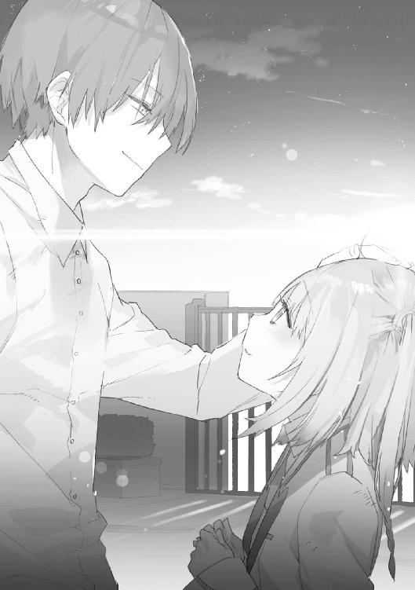
程なく大人が大勢やってきて、要はどこかへ連れて行かれた。
処遇はこれから決まるが、もう殺されることはないと悠志朗は言った。
――事件は今度こそ終わったのだ。
「......ああ、それで、さっきの千代森さんのお願いの件だけど」
連れ立って校舎の方に引き返しながら、悠志朗は口を開いた。
「は、はい」
花耶は全身を緊張させた。
「もう説明聞かされたかもしれないけど、今回機密に触れる要素が多くてね、みんな、しばらく政府の監視下に置かれることになる。だから五人をひとまとめにして、僕が面倒を見ることになりそうなんだ」
「え――それって......」
「しばらく教官継続ってことだね」
「そ、そうなんですか......」
よかった、と言いかけ、ふと気付く。
「あ、でも、結局試験はどうなったんでしょう。結果によっては、私――」
「そんなこと気にしてたの？ 心配ない。多数の魔禍魂を向こうに回して奮戦した生徒を辞めさせるような学園じゃないよ。それに、貴重な時間操作能力者だしね」
悠志朗は優しく笑う。先ほどまで感じていた怖さはない。普段通りの、大好きな先生だ。
実感と安堵が湧いてきた。ようやく――ようやく、このひどい一日が終わるのだ。
一方で、深刻な事実も思い出される。
花耶たちはまた日常に戻れるが、それが許されない犠牲者もいる。自分と彼ら彼女らを分けたのは、いくつかの偶然と運でしかないのだ。
どうか安らかに――と、花耶は黙祷を捧げた。
校舎に入ったところで、スーツ姿のかがりと行き合わせた。
「おや、ゆう君と――千代、倉さんだっけ？」
「ち、千代森です」
「ああ、ごめん、どうも人の名前覚えるのが苦手で。......ともあれ、おつかれさま。今回は本当に大変だったわね」
かがりは微笑んだ。
「今はそんな心境じゃないかもしれないけど――魔禍魂退治に貢献したということで、あなたたちには報奨金が出るわ。所詮お金はお金。でも、自分のやったことに何らかの意味があったと確認するにはいい手段かもしれない。最悪の体験だったと思うけど、うまく気持ちの整理ができることを祈ってるわね」
「は、はい、ありがとうございます」
花耶は恐縮する。
「かがり姉さんも、帰れるの？ 久しぶりに何かご飯作りに行きましょうか？」
「あー、もう一仕事あるんだ。お年寄りたちのご機嫌取りがね。でもご飯は歓迎。先に入って、何か作っておいてー」
「............」
胸にもやもやしたものを覚えながら、花耶は会話する二人を眺める。
やっぱり――割り込めないな、と思う。そもそもそんなことを考えるの自体、分不相応なのかもしれないけど。
（私は、先生の従順な生徒。ただの教え子。......それだけでいいよね、うん）
自分に言い聞かせた。
今はまだ無理だとしても、いつの日か自然に受け入れられるようになるだろう。
いや、ならなければいけない。でないと――自分がずっと辛いだけだ。
――と、そのとき、かがりが口を開いた。
「ところで、ゆう君――彼を殺さなかったのね。どうして？」
瞬間、花耶の背筋に冷たいものが走った。
要のことを言っているのはすぐにわかった。それはいい。
花耶を凍りつかせたのは――かがりの表情に、小さな失望が表れていたことだ。
――ゆう君なら当然そうしていると思ったのに、しなかったんだね。ちょっと、がっかりだなあ。
「や、まあ......成り行きだね。教え子に泣かれちゃったし」
そんな空気に気付いた風もなく、悠志朗はのんびりと答えた。
「そう」
かがりの視線がゆっくりとこちらに動いた。心臓が飛び跳ねる。
「あなたが、ゆう君を止めてくれたのね？ 千代森さん」
表情筋は笑顔を形作っている。声に責める響きも、咎める響きも無い。ただ単に事実を確認しただけという口調。
――なのに、花耶は呼吸が詰まるような圧迫感を覚えた。声一つ立てられなかった。
直感的に理解する。
――日垣先生を壊したのは、この人だ。
これは、絶対に、先生と一緒に居ちゃいけない人なんだ。
――と。
どうも、すえばしけんです。一迅社文庫でははじめまして。
デビュー以来、他社も含めて何冊か本を出版させてもらっていますが、どうも私の作品には『何かを教える、教わる』というモチーフがよく登場するようです。
――『ようです』とかまるで他人事のように言っているのは、これまであまり意識したことがなかったからですね。本作にも『教官』なんてそのものズバリなタイトルが付いてますが、企画当初、主人公はただの一学生でしたし。
つらつらと考えてみるに、『教える』『教わる』というのは『他者との関係性、及び自己の内面の双方に起こる変革』と言い表せるのではないかと思います。停滞を拒絶し、外側に向かって突き進む力強いベクトルを想起させますね。
コミュ障ひきこもり気質な自覚があるもので、こういう刺激や変化というファクターに憧れがあるのかもしれません。何というか、手が届かないのは承知のうえで眩しく見上げるような感覚――
......すみません、ちょっと背伸びしてみました。
実は単に『教師と生徒』というシチュエーションが大好きなだけです。
だって可愛いじゃないですかっ！
『女生徒』とかっ！ 『教え子』とかっ！
............。
えーっと。
続刊に関しては、現在のところ未定となっております。皆様のご支持があれば、この後の物語を紡ぎ出すことも叶うかもしれません。作者としてはそういう未来を切に望んでおりますが――それはそれとして、まずはこの本が皆様に楽しいひとときを提供できれば幸いです。
末筆ながら、以下に謝辞を。
一迅社文庫の担当様、編集部の皆様、イラストのＮＯＣＯ様、デザイン、印刷、取次、書店の皆様、その他出版流通に関わる全ての方々に厚く御礼申し上げます。
では、またお会いできることを祈りつつ。
二〇一四年四月 すえばし けん
祓魔科教官の補習授業
落第少女に咒術指南
２０１４年６月１日 初版発行
著 者 すえばしけん
発行者 杉野庸介
発行所 株式会社一迅社
〒１６０―００２２
東京都新宿区新宿２―５―10 成信ビル８Ｆ
制 作 大日本印刷株式会社
©Ken Suebashi／一迅社
本書はフィクションです。実際の人物・団体・事件などには関係ありません。
本書の内容を無断で複製、複写、放送、データ配信等することは、堅くお断りいたします。